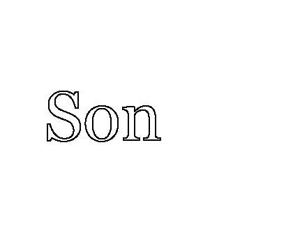

Nichols durumu kafasında tüm yönleriyle tartarken uzunca bir tedirginlik anı yaşadı. Şu anda, kendisine bakmayan Acosta’ya doğru bakıyordu.
"Bazı şeyleri hatırlıyorum," dedi. "Ne kadar özel oldukları konusunda emin değilim. Uzun zaman geçti."
"Zamanınız var, düşünün," dedi Kline.
"Bayan Hall'un yalan söylemiş olduğunu söylediğini biliyorum," dedi Nichols.
"Bu iyi. Başka?" En önemli soruyu bir türlü sormuyordu, ne hakkında yalan söylediği.
Kline şu ana kadar gemisini neden sonuç ilişkisinin sığ sularında yüzdürmüş, Acosta’nın çılgına dönmesinin altında yatan nedeni, fuhuş operasyonunda polisler tarafından ona tuzak kurulduğu iddiasını gündeme getirmemişti. Sanığın kendisi tarafından bizzat dile getirilmemiş olmasından dolayı, Radovich’in polislerin tuzak kurmuş olduğu yönündeki her türlü iddiayı söylenti olarak değerlendireceği gerçeğine güveniyordu. Bu konuya girmek istiyorsak, Acosta’nın kendisini tanık olarak çağırmalıydık. Savunmamızın en zayıf noktası buydu.
"Bu konuşma sırasında sanık Bayan Hall’a nasıl göndermede bulundu, ismiyle mi, yoksa başka bir biçimde mi?"
Kline, bu mayın tarlasını ayak parmaklarının ucunda, yanlış soruyu sormaktan kaçınma çabası içinde geçerken kapıyı aralamıştı.
"Evet. Onun için bazı isimler kullandı," dedi Nichols.
"Hangi isimleri kullandığını hatırlıyor musunuz?"
"İğrenç kelimeler, Armando’nun kişiliğine uymayan şeyler," dedi.
Nichols müvekkilimi ne kadar iyi tanıyordu acaba?
"Bu ifadenin dikkate alınmamasını talep ediyorum," dedi Kline.
Radovich yana eğildi. "Soruyu yanıtlamanız gerekecek," dedi.
"Eee... Şey... Onun yalancı bir orospu olduğunu söyledi."
"Bunları mı söyledi?" Kline yüzünü jüriye tarafına çevirip jüri üyeleri ile burun buruna geldi. "Yalancı orospu mu?"
"Söylediği buydu."
"Başka şeyler de söyledi mi?"
"Hayır. Hayır. Sadece bu kelimeyi kullandı ve ölümün onun için fazla iyi olduğunu söyledi."
"Bunu mu söyledi?" Kline bunu sanki ilk defa duyuyormuş gibi şaşırmış numarası yaptı. "Ona yalancı orospu dedi ve ölmenin onun için fazla iyi olacağını söyledi, öyle mi?"
"Evet, öyle söyledi."
"Bunu yüksek sesle mi yoksa fısıltıyla mı söyledi?" diye sordu Kline.
"Fısıldayarak."
"Siz duyabildiniz ama değil mi?"
"Evet. Bunu bir özel bir amaçla söylemiş olduğunu sanmıyorum."
"Tanığın son sözlerinin çıkarılmasını talep ediyorum," dedi Kline. "Tanığın kendi tahminleri."
"Jüri bu sözleri dikkate almasın," dedi Radovich.
Kline tanıktan bir adım uzaklaştı, döndü ve işaret parmağını çenesinin üstünde gezdirdi.
"Kendinizi hâlâ tanığın bir dostu olarak görüyorsunuz, değil mi?"
"Evet, öyle görüyorum."
"Peki, onun sizi hâlâ dostunuz olarak gördüğünü düşünüyor musunuz?"
"Tahminde bulunmaya zorluyor." Nichols’u asılı olduğu çengelden indirmeye çalıştım.
"Kabul edildi."
"Ama onun arkadaşınız olarak kalmasını istersiniz değil mi, istemez misiniz?" Aynı şeyin başka türlü söylenişi.
Yönlendirici olduğu gerekçesiyle itiraz ettim, fakat Radovich reddetti.
Nichols’ın yüzü şüphe izleriyle doluydu. "Umarım hâlâ dostumdur."
Birdenbire Acosta’ya baktım ve tanığın son sözlerinin onu bir kozanın içine hapsettiğini gördüm. Başını kaldırıp eski arkadaşına bakmıyordu, oysa bunun yapması gereken bir şey olduğunu ona söylemiştim. Jürinin önünde, bu durumun zorluğuna katlanıp arkadaşı ile yüzleşmeliydi. Oysa o yüzünü asmış, çökmüş bir halde oturuyordu. Sopa yemiş bir köpek gibiydi.
Kline soru sormayı bıraktı. Kaçırılmaması gereken bir fırsatın varlığını algılamıştı. Bu anda mahkeme salonundaki bütün gözler tam bir suçlu görüntüsü çizen sanığın üstündeydi.
Kline bu kadar şanslı olduğuna inanamıyordu. İrkilmiş gibi bir ifade takınarak bakışlarını sanığa dikti ve bu sessizlik anını uzatarak yargıcın sonunda onu devam etmesi için azarlamasına neden olan sıkıntılı bir bekleyişe dönüştürdü.
Yargıcın müdahalesinin dikkatleri başka yöne çekmesini fırsat bilip kolumu Acosta’nın omzuna koydum. Bu zor anda ona destek olmak istemiştim. Başını yavaşça kaldırdığında gözlerinin ilk kez yaşlarla dolu olduğunu fark ettim.
"Yargıç Nichols, büyük jüri soruşturması sırasında sizin de sorgulandığınız doğru mu?"
"Hı?" Kline’ın sorusu Nichols’ı daldığı düşüncelerinden uyandırdı. Acosta’yı izlemek onun için acı verici olmuştu.
"A, evet," dedi.
"Ama büyük jüriye sanığın, bugün burada bize açıklamış olduğunuz yorumları ile ilgili herhangi bir şey anlatmadınız değil mi?"
"Hayır."
"Neden."
"Benden böyle bir istekte bulunulmadı."
"Ama buna rağmen, bu duruşma sürerken bu bilgilerle ortaya çıktınız. Neden?"
Bu ani samimiyet gösterisine neden olan şey her ne ise, kalbimize çakılan bir kazık olmuştu. Nichols’in bu anın eninde sonunda geleceğini bilmiş olması gerekirdi, ama yüzündeki ifade, hâlâ hazırlıklı olmadığını ve bir yanıtı bulunmadığını açıkça gösteriyordu.
Tereddüt ederek, ipe sapa gelmez bir şeyler geveledi.
"Bunların söylenmesi gerekli şeyler olduğunu düşündüm," dedi Kline'a.
"Neden?"
"Çünkü kanıttı." Nichols bunu söylerken, bu açıklamasının yeterli olacağını varsayarak jüriye baktı.
"Bu açıklamalarınız büyük jüri soruşturması sırasında da kanıt değil miydi?"
"Sanırım öyle."
"Ama siz bu ana kadar beklediniz."
"Evet"
"Neden peki?"
Nichols yanıtlamadı, düşüncelerini toplamak için başını kaldırıp tavana baktı. Daha çok zarar vermeyecek bir yöntem ararken akustik kaplamaları sayıyor ve dua ediyordu.
Kline bu anlamlı boşluğun sürmesine bir süre izin verdi. Sonra şarkıya girdi.
"Yargıç Nichols, büyük jüri soruşturması sırasında sanığın suçu ile ilgili şüphelerinizin olduğunu, oysa bugün burada otururken artık içinizde bu tür şüphelerin bulunmadığını söylememiz uygun olur mu?"
"İtiraz ediyorum, Sayın Yargıç. Savcı çizmeyi aşıyor." Ayağa kalkmıştım. Harry de ayaktaydı ve sanırım çok kısa bir an dudaklarının arasından küfür ettiğini duydum.
Nichols aslında bu soruya cevap verdi ve eğer ben dudaklarını doğru okuyabildiysem, yanıtı "Hayır," oldu, fakat bunu mahkeme salonundaki hiç kimse, özellikle de oluşan girdap içinde yazmayı bırakıp parmaklarını stenografinin tuşlarından çeken mahkeme yazmanı duyamadı.
Salonun her köşesinde kaos hâkim olmuştu. Aslında bu soru bütün zihinlerde üstü kapalı olarak yer almaktaydı. Ama Kline’ın soruyu jürinin varlığı sırasında açıkça sorması, Radovich’in şiddetli ölçüde öfkelenmesine yol açtı. Nichols’ın soruyu yanıtlamaya çabaladığının fark edilmesinin ardından basın sıralarından gecikmiş bir nakarat yükseldi: "Ne söyledi? Ne dedi? Ne dedi?"
Harry dönerek onlara tanığın ’hayır’ dediğini söyledi ve içlerinden birkaç tanesi bunu gerçekten yazdı. Medya muhaberesini kazanabilir ama savaşı kaybedebilirdik.
Hâlâ koltuğunda oturan, ama kürsüden öne doğru eğilen Radovich tokmağını tahtaya vurdu ve "Salonu boşaltırım, ona göre," uyarısında bulundu.
Gürültü bir ya da iki desibel kadar azaldı, sonra Kline’a döndü.
"Bu uygunsuz bir soru ve sanırım siz de bunu biliyorsunuz," dedi. "Çıkarın cüzdanınızı." Radovich bütün dünyanın gözü önünde Kline’a ceza verecekti. Jüriyi bile dışarı göndermedi. Savcılığın temyiz hakkı yoktu.
Bu duruma en çok şaşırmış görünen kişi, Nichols’ın kendisiydi. Bir avukatı azarlamak, toplum önünde küçük düşürmek bu yargıca çok yabancı bir kavramdı. Daha ılımlı, kazanmanın her şey demek olmadığı zamanlarda yaşamış olmayı arzuladığından emindim.
"Jüri soruyu ve imaları dikkate almayacak," dedi Radovich.
"Tanığa soracak başka sorum yok," dedi Kline. Bunu söylerken adeta salonda değilmiş gibiydi ve ceketinin kestane rengi ipek astarının içinde çek defterini aramaktaydı.
"Çok haklısınız," dedi yargıç. "Çünkü sonuncu sorunuz size altı yüz dolara patladı. Yazmana ödersiniz."
"Avukatları odama bekliyorum," dedi. "Beş dakika ara." Radovich tokmağını öylesine sert vurdu ki tokmağın başı sapından ayrılıp yere fırladı ve şerifin yardımcılarından birinin ayağına çarptı.
Odasına girdiğimizde Radovich hâlâ sakinleşmemişti.
Kline hâlâ cebinde çek defterini arıyor ve özür üstüne özür diliyordu. "Düşünmeden konuştum," dedi.
"Sizin düşüncesiz konuşmanız yüzünden bu duruşma geçerliliğini yitirmiş olabilir." Radovich’in yüzü çeşitli tonlarda kırmızıydı.
"Ben o kadar ciddi olduğunu sanmıyorum," dedi Kline.
"Siz temyiz mahkemesi değilsiniz," dedi Radovich. "En azından şimdilik." Kline’in tutkusunun kokusunu başından beri almıştı. İşte şimdi ağzıyla söylüyordu.
"Eğer bir problem varsa, sizin vereceğiniz bir emirle halledilebilir," dedi Kline. "Dikkate almamaları söylendi nasıl olsa."
"Sayın Yargıç, soru çok açık biçimde soruldu," dedim. "Jüri ima edilen şeyi anlamamış olamaz. Yalan söylemek için bir nedeni olmayan bir yargıcın vardığı kararlar, jüri üzerinde güçlü biçimde yönlendirici etki yaratacaktır."
"Ne istiyorsunuz o halde?" dedi Radovich. "Duruşmaya baştan mı başlayalım?" Şu anda davanın iptali için başvurma niyetim olup olmadığını anlamaya çalışıyordu, ama ona sorarsanız kesinlikle böyle bir şey olmadığını söylerdi.
"Hayır," dedim.
"O zaman ne?" dedi.
"Oyun sahasının biraz düzeltilmesini ve koşulların eşitlenmesini istiyoruz," dedim.
Kline tedbiri elden bırakmadan bana bakıyordu. Bir şeylerin geldiğini görüyor, ama ne olduğundan emin olamıyordu.
"Sanırım Bay Kline’ın açıklamalarının müvekkilimin kızgınlığının ve kurban hakkındaki sert tanımlamalarının ardında yatan nedenin ne olduğu sorusunun doğmasına neden olduğunu ileri sürebiliriz," dedim. "Sanırım karşı sorgumuz sırasında bu konuya değinmemize izin verilmesi gerekiyor."
Kline’ın attığı çığlığın dışarıdaki mahkeme salonundan duyulup duyulmadığından şüphe ettim. Basın herhalde Radovich’in elindeki dokuz kuyruklu kediyle Kline’in derisini yüzdüğünü düşünüyordu.
"Sayın Yargıç. Ben o konuya girmemek için çok dikkat ettim. Çünkü doğrudan ilgi kapsamı dışındaydı." Böyle bir dava örneği olmadığında ısrar ederek yargıcın masasının önünde inliyordu. "Üstelik Nichols’un o konuda söyleyeceği her şey açıkça söylenti, istisnasız."
"Dava örneği konusunda," dedim. "Sanığın ifadesinin içeriği ile ilgili davalar var. Adil olan, jürinin müvekkilimin bu tanımlamaları hangi nedenlerle yapmış olduğunu, onu neyin motive ettiğini anlamış olmasıdır."
"Böyle çirkin tabirleri haklı çıkartacak şey ne olabilir?" diye sordu Kline.
"Neden bırakmıyoruz, tanık bize söylesin?" dedim.
"Zamanınız geldiğinde," dedi. "Onu kendi tanığınız olarak mı çağırmak istiyorsunuz, çok güzel. Ona istediğinizi sorabilirsiniz."
Nichols’ı kendi tanığımız olarak çağıracaksak olursak, şüphe yok ki, Acosta’nın kişiliği konusu da açılacaktı ve Kline bunun bizim için sorun olduğunu biliyordu. Bu çizgi geçildiği anda Cevizkafa’nın hayatı birçok sayfasını benim de bilmediğim açık bir defterdi artık. Hatta ben, Gus Lano ve Ahlak Masası’ndan çocukların bu defterin birçok kopyasını kaleme aldığını ve okunmak üzere üst üste yığdığını iddia edecek kadar ileri gidebilirdim.
"Yeterli," dedi Radovich. "Bu sözlerinin nedenine mi girmek istiyorsunuz?" Bana baktı. "Girin o zaman."
"Fakat Sayın yargıç..." Kline’in son başvurusu ağzına tıkıldı.
"Beğenmezseniz, itiraz edersiniz," dedi Radovich.
Bizimle işi bitmişti. Masasından kalktı ve mahkeme salonuna yöneldi. Kline ve ben onu izlerken hâlâ ağız dalaşı yapıyorduk.
Oraya varıp da avukat masama geri döndüğümde Acosta bir elini omzuma koyarak ne olduğunu öğrenmeye çalıştı.
"İzleyin, görün," dedim. "Ben de bilmiyorum."
Radovich salonun düzene girmesini istedi. Nichols kürsüdeydi.
"Tanık sizin," dedi yargıç.
Açılışımı aldığımda hiç beklemedim. Buradaki teori Radovich hâlâ sıcak, Kline’a kızgınken vurmaktı. Elime bir avantaj verecekse, bu şimdi olacaktı.
"Müvekkilim Bay Acosta’nın söylediği ilk şeyin Bayan Hall’un yalan söylediğine ilişkin sözleri olduğu yönünde açıklamada bulundunuz," dedim.
"Bu doğru," dedi Nichols.
"Ne hakkında yalan söylediğini söyledi mi?"
"İtiraz ediyorum. Doğrudan ilgi kapsamı dışında."
"Reddedildi," dedi Radovich.
"Söylenti," dedi Kline.
Radovich, reddedildi demeden önce sadece çok kısa bir an için tereddüt geçirdi. Kline bunun kanıtlar üstünde gösterdiği kötü yönetiminden dolayı aldığı cezanın bilançosu olduğunu biliyordu şimdi.
"Lütfen soruyu cevaplayın," dedim Nichols’a.
Bu isteğimi sevinerek yerine getirecek gibi görünüyordu. "Bana Bayan Hall’un, tutuklandığı geceki görüşmenin içeriği hakkında yalan söylemiş olduğunu anlattı. Hiçbir fuhuş girişiminde bulunmadığını, aksine Bayan Hall’un kendisini telefonla aradığını ve görüşmek istediğini söyledi."
"Bayan Hall’un onunla ne amaçla görüşmek istediğini söyledi mi size?"
"Yargıç Acosta’ya göre kızda onun için, büyük jüri soruşturması ile bağlantılı bilgiler vardı."
"Hangi bilgi olduğunu söyledi mi?"
"Evet, polis yolsuzluğu ile ilgili bir soruşturmaya yönelik. Özellikle Polis Birliği hakkında."
"Öyleyse, Yargıç Acosta’ya göre..." Kline bu unvanı kullandığımda itiraz etmek için kılım bile kıpırdatmamıştı. O şu anda daha çok tanığın ifadesinin içeriği ile daha çok ilgileniyordu.
"Bu görüşmeye resmi göreviyle ilgili bir bilgi yüzünden çekilmiş."
"İtiraz ediyorum. Kanıtı yanlış nitelendiriyorlar," dedi Kline.
"Reddedildi."
Radovich böyle düşünmüyordu. Bu yüzden bu varsayıma kredi tanıdı.
"Bana söylediği buydu," dedi Nichols.
"Bu nedenle mi kızgındı?"
"Bu nedenle ve kız delilleri uydurduğu için," dedi Nichols. "Fuhuş iddiası ile ilgili yalancı tanıklık."
"Müvekkilim önceki açıklamanızda sözünü ettiğiniz sert ifadeleri bu koşullar altında mı kullandı?"
"Evet. Kesinlikle." Nichols bu durumun sağladığı bütün avantajlardan faydalanma konusunda istekliydi. Görevini bir dosta zarar vermeden yerine getirmek istiyordu. Kendine özgü adalet anlayışı.
"Yargıç Acosta, bu konuşma sırasında Bayan Hall’un Polis Birliği ve soruşturma altındaki kişilerle olan ilgisi hakkında bir şey söyledi mi?" diye sordum.
Nichols bir süre beynini zorladı. Belli ki yardım etmek istiyor ama yapamıyordu. Başını salladı. "Sanırım hayır."
Ben tabi ki bu sorunun cevabını çoktan biliyordum. Nichols bilseydi mutlaka söylemek için gönüllü olurdu. Arkadaşını geri kazanmak için her şeyi yapabilirdi. Sormamdaki amaç, jürinin zihinlerine tohumları yerleştirmekti.
"Size hiç kızın o birliğin üyeleri ile özellikle Yargıç Acosta’nın tutuklandığı gece onun yanında olan ahlak masasında görevli memurlarla yakın ilişki içinde olduğuna dair hiçbir şey söyledi mi?" Tohumu biraz suladım ve besledim.
"Hayır. Korkarım söylemedi," dedi.
Bitirmişim gibi masama doğru döndüm, sonra aniden aklıma bir şey geldi, durdum.
"Bir soru daha, Yargıç. Merak ediyorum," dedim.
"Sizi sorguladıklarında polise ya da bölge savcısına Yargıç Acosta’nın oyuna getirildiği, fuhuş konusunda kendisine tuzak kurulduğu yönündeki ısrarından söz ettiniz mi hiç?"
"Evet. Size söylediğimi onlara da söyledim."’
Kline’a göz attım. Bu sözlerin etkisi, Kline’ın bu gerçeği jüriden sakladığını ortaya çıkarmak olmuştu.
"Bu bilginin peşinden gittiler mi? Bayan Hall’un Yargıç Acosta’yı o akşam oraya çekmek için söylemiş olabileceği yalanların ayrıntıları hakkında sorular sordular mı ardından?"
Nichols’ın gözleri parladı. Saf olabilirdi, ama aptal değildi. Gittiğim yönü görebiliyor bunu dostuyla olan ilişkisini düzeltebilmek için bir can simidi olarak görüyordu.
"Gerçeği söylemek gerekirse, hayır sormadılar." Ben dönemeden önce bir adım daha ileri gitti. "İlgilenmiş görünmediler."
Kline yutkundu ve itiraz etmekten vazgeçti. Ağır isabet aldığını biliyordu.
---
BÖLÜM 26
EYALETİN ŞİMDİKİ TANIĞI KÜRSÜYE TEK BİR amaçla getiriliyordu. Davayı melankolik bir ezgiyle sona erdirmek.
Oyunun en çarpıcı anı oynanıyordu, duygusal müzik eşliğinde Coleman Kline, kızın mahkeme salonuna getirilmesine anlar kala izin isteyip çıkmıştı. Radovich’e bu tanığın özel dikkat gerektirdiğini söylemişti. Mahkemenin dışında başka işleri olduğu için Kline tanığı idare edebilecek özel yetenekleri olduğunu söylediği bir yardımcısını görevlendirmişti.
Kâğıtlarını topladı ve yargıcın odasındaki kapıya yöneldi. Bu arka çıkış sayesinde kameralardan ve basın kalabalığına yakalanmaktan kurtulacaktı. Yazman tanığın adını anons etmiyordu. Bu yüzden herkesin nefesini tutup tahmin yürüttüğü kısa bir süre geçti. Bu işin içindeki kişiler olan bizler zaten tanığın kim olduğunu biliyorduk.
Bütün gözler mahkeme salonunun arkasındaki kapıya kilitlenmişti. Kapı kısa bir süre için aralandı, sonra yeniden kapandı. Kapı sonunda yeniden açıldığında bir kâhya göründü, ardında onu izleyen küçük bir kız vardı. Adamın ardına gizlenmiş, yere yakın, topu topu bir metre boyundaki Kimberly Hall. Bir kolunun altında bez ayısı ile kız sıraların arasından güçlükle yürüdü. Sessizliğin ardından, sıralardan fısıltılar gelmeye başladı- "Brittany’nin küçük kızı." Bu mücadeleyi kaybetmiştik ve Kline bu durumdan yararlanacaktı. Çağrıldığımız önceki toplantıda Harry ve ben şiddetle itiraz etmiş ve Kimberly’den ispatlayıcı kanıt olabilecek hiçbir şey elde edilemeyeceğini söylemiştik, ama Kline galip gelmişti.
Çocuk, annesinin ölümünden önce yüksek sesle tartışma duyduğunu ifade edebilmişti. Bu Radovich’in yönlendirmeli sorusunun bir ürünü olduğu için, kız ayrıca annesi ile o gece beraber olan diğer kişiye ait olan bir de erkek sesi tanımlamıştı. Bu noktanın duruşma kayıtlarından çıkarılması önerimi yenilediğimde önerim Radovich tarafından geri çevrilmişti. Eğer kız aynı şeyleri bu kürsüde de yinelerse, bunun temyiz için önemi olabilirdi.
Bütün bunlara rağmen, Kline’ın bu tanığı çağırmaktaki amacının daha çok taktiksel olduğu açıktı. Kimberly, jüriye bu suçun neden olduğu süregelen kaybı ve çekilen acıların annesinin ölümüyle son bulmamış olduğunu anımsatmak için buradaydı. Kline tarafından oynanan cüretkâr bir oyundu bu ve iki taraf için de tehlike arz ediyordu.
Kimberly bir bölük yandaşı tarafından korunuyordu. Anneannesi, Çocuk Koruma Hizmetleri’nden psikolog ve Bölge Savcı Yardımcısı, çocukla aylarca ilgilenerek uyumlu bir ilişki içine giren Julie Hovander.
Çocuğu bölmesine yerleştirdiler. Anneannesi parmaklığın arkasında, halk bölümündeki yerine doğru hareketlendi. Psikolog tanık kürsüsünün tırabzanının hemen dışında, Kimberly’ye yakın bir yerde pozisyon aldı. Buradan elini çocuğun elbisesinden yukarı sokup gerektiğinde ağzını kapatabilirdi- kendi muppet show uyarlaması.
Buna itiraz ettim ve psikoloğun protestoları ile birlikte Radovich kadına oturmasını söyledi.
"Eğer hizmetlerinize ihtiyacımız olursa," dedi ona, "ilk ben çağıracağım."
Kadın kötü kötü baktı ve sonunda oturdu, ama parmaklıkların iç kısmına. Bölge Savcısı’nın yanındaki avukat masasına yerleşti.
Ben buna itiraz ettiğimde, Radovich bir istisna yaptı ve bana sessiz olmamı söyledi. Yumurtaların üstünde yürüyorduk. Çocuğun cesaretini kırmak istemiyordu. Kız, küçük ayısı elinde kürsüde kıpırdamadan oturuyordu.
Kline ve yardakçılarının kızla ilgilenmek ve belki bazıları çok da akıllıca olmayan önerilerde bulunmak için aylarca zamanı olmuştu. Buradaki korku, Kimberly’nin önceki oturum sırasında söylemediği şeyler söyleyecek olmasıydı: özel derslerin ürünü. Bu durum, beni kızı önceki ifadelerinden farklı şeyler söylemekle suçlamak zorunda kalmak gibi imkânsız bir konuma sokacaktı ve jüri bunu takdir etmezdi hiç. Acosta, avukatı tanık kürsüsünde küçük bir kızı taciz ettiği için kendini cinayetten hüküm giymiş bulabilirdi.
"Ne düşünüyorsun?" diye sordu bana. "Önceki ifadesine bağlı kalacak mı?"
"Bir çocuğun aklından neler geçtiğini kim bilebilir?" dedim.
"Aynen benim düşüncelerim," dedi.
Radovich ile çocuk arasında kayıt dışı fısıldaşmalar oluyordu. Kürsüden kocaman gülümsemeler geliyordu. Yargıç kıza yemin ettirmedi, ama onun yerine bir gerçek ile yalan arasındaki farkı bilip bilmediğini sordu.
Kız ona gerçeğin sahiden olan şey olduğunu, yalanın ise sizin uydurduğunuz bir şey olduğunu söyledi.
"Hangisinin iyi olduğunu biliyor musun?" dedi.
"Gerçek," dedi kız.
"Bugün bize gerçeği söylemeye söz verir misin?"
"Evet"
"Sadece gerçeği, yalan yok, tamam mı?"
"Tamam."
Kızın aylar önceki oturumda olduğundan daha konuşkan olduğu açıktı. Onunla çalışmakta olduklarının bir işareti olarak aldım bunu.
"Tanık sizin," dedi Radovich.
Hovander işçi gibi çalışırdı ve tarzı etkileyici değildi, ama tam o, soru sorarken iki adım ileri gidip, sonra üç adım gerileyen tipte avukatlardan biriydi.
"Ayının ismi ne?" dedi Hovander biraz güven oluşturmak için.
"Acıkmış," dedi. Bu ona polisler tarafından Binky’den sonra verilen ayıydı. Binky’ye kanıt olduğu için el konulmuştu.
"Neden ona ’acıkmış’ ismini taktın?"
"Ayılar daima acıkır, hem o yemek yiyemiyor," dedi.
"Evet, bu doğru," dedi Hovander.
Kline taktiksel üstünlüğü ele geçirmişti. Hovander ve çocuk arasındaki kimya yumuşak ve sakindi. Korkarım Harry bunu çok iyi başaramazdı.
Beş yaşındaki bir çocukta zaman ya da tarih kavramı olmadığını aceleyle tespit etti. Kimberly ölüm zamanı ile ilgili hiçbir yardımda bulunamıyordu. Bütün söyleyebildiği, annesi tartışmaya ve gürültü yapmaya başladığında dışarısının hâlâ aydınlık olduğuydu.
Hovander, suç mahalli coğrafyasında daha başarılıydı. Önceki oturumda söylenenlerden farklı bir şeyle karşılaşmadık. Kimberly, annesiyle onu öldüren arasındaki tartışma başladığında odasında oynuyordu. Görülen oydu ki, tartışma çok hızlı alevlenmiş, çocuk muhtemelen birkaç dakikadan fazla olmayan süre içinde, seslerin yüksekliğinden ve salonda bir şeylerin fırlatılmasından korkuya kapılıp koridora kaçarak dolaba gizlenmişti.
"Bir şey gördün mü?" dedi Hovander.
Buna karşılık olarak, sert ve kararlı biçimde sallanan bir baş yanıtı aldı. Kayıtlara yanıtı hayır olarak geçti.
"Orada o gece annenle birlikte olan diğer kişiyi gördün mü?
"Hayır."
"Ama adamın sesini duydun değil mi?"
"İtiraz ediyorum." Harry’ydi bu. Çocuğun karşı sorgusunu onun üstlenmesine karar vermiştik. Bunu neden önerdiğimi Harry’ye söylememiştim, ama sanırım o nedenini tahmin etmişti. Kimberly beni orada bulunan birisi olarak tanımladığından beri şansımı zorlamak istemiyordum. Aslında, bugün gelmemeyi bile düşünmüştüm, ama sonra bu riski almaya karar vermiştim. Eğer gelmeseydim Acosta sorular soracaktı.
"Neye dayanarak itiraz ediyorsunuz?" dedi Radovich.
"Kanıtı olmayan varsayım," dedi Harry. "O geceki diğer kişinin cinsiyeti."
"Kabul edildi... "
"Kimberly o gece anneninkinin yanında başka bir ses duydun mu?" dedi Hovander.
Kız evet anlamında başını salladı.
Kızın sessiz ifadelerinin kayda nasıl geçmesi gerektiğinin yazmana bildirilmesi şerefi Radovich’e aitti.
"O ses bir erkeğin sesi miydi, yoksa bir bayanın sesi miydi?"
"Bir erkek." Bunu hiç duraklamadan söylemişti. Doğru olsun ya da olmasın buna inandığını düşünmeye başlamıştım şimdi. Telkinin gücü.
Çocuğun hikâyesinde çeşitli kereler değişikliğe uğramış bölümler yüzünden bir karışıklık vardı. Ama gerekli ayrıntılar sabitti. Ölümcül tartışmanın ardından bir noktada Kimberly dolaptan çıkmış ve yerde annesinin cansız bedenini bulmuştu. Her taraf kan içindeydi.
"Onu uyandırmaya çalıştım," dedi. "Ama yapamadım, ben de Binky’yi aldım."
"Binky, senin oyuncak ayın mı?" dedi Hovander. "Hı-hı."
"Nerede buldun Binky’yi?"
"Annemin yanında. Yerde."
"Binky annenin yanında ne yapıyordu?"
"Bebek bakıcısından geldiğimde onu masanın üstüne koymuştum."
"Bebek bakıcısından ne zaman döndüğünü hatırlıyor musun?"
Kimberly tavana baktı. Kafası karışmıştı. "Sanırım saat ondu. Belki sekizdi." Havadan rasgele sayı çekiyor ve bizi zamanı bir ayakkabının ölçüsü ya da arkadaşının yaşı ile karıştırıp karıştırmadığına dair merakta bırakıyordu. Bu yaştaki çocuklar için sayılar anlamsızdır ve yerleri değiştirilebilir.
Hovander bu konuyu kapatmaya çalıştı. Önceki ifade Brittany’nin kızım bebek bakıcısından beşten hemen sonra almış olduğunu ve muhtemelen eve beş buçukla alo arasında bir saatte ulaştığını ortaya çıkarmıştı. O gün işten eve erken dönmüş ve bilinmeyen bir nedenle öğleden sonrasını izinli geçirmişti.
"Demek Binky’yi aldın, peki sonra ne yaptın?"
"Annemin yanına oturdum," dedi. "Onu uyandırmaya çalıştım. Ama uyandıramadım."
Birkaç jüri üyesinin yüzünde tekin olmayan ifadeler vardı. Yerde, ölü annesinin cesedinin yanında oturan ve tek tesellisi oyuncak bir hayvanın sentetik kürkü olan bir çocuğun zihinsel resminin çağrıştırdıkları merhamet düşünceleri değildi.
"Sonra dolaba gerimi döndün?
"Evet. Binky’yi aldım."
"Neden? Neden dolaba geri döndün?"
"Çünkü o adamın geldiğini duydum," dedi Kimberly.
"Kim?"
"Annemi yaralayan adam."
"Nereden geliyordu o adam?"
"Dışarıdan," dedi. "Kapıyı açtı."
"Seni gördü mü?"
Başını salladı. Gözlerinde merak vardı. Belki kendisi de onu nasıl görmemiş olduğuna şaşırıyordu.
"Kaçtım," dedi.
"Korkmuş muydun?"
Çocuk başıyla bir dizi kocaman evet işareti yaptı.
"Bu kişinin sana zarar vereceğini mi düşündün?"
"Evet. Çünkü annemi yaralamıştı."
"İtiraz ediyorum. Varsayım," dedi Harry.
"Kabul edildi. Jüri dikkate almasın," dedi Radovich.
Hovander vidaları sıkıyordu. Jüri üyeleri sandalyelerinin uçundaydılar. Buradaki taktik, bir çocuğun korkularını hissedebilmek ve annesini öldürmüş olan Acosta’nın eğer orada olduğunu bilse çocuğu da ortadan kaldırmaktan başka bir seçeneği kalmayacağı varsayımını zihinlere yerleştirmekti. İşlenmemiş bir suç için getirilen suçlama.
"Bu adamı geri döndüğünde gördün mü?"
"Ayakkabılarını," dedi. "Siyah ve parlaktılar."
Şu anda jüri bölmesindeki bütün gözler masamızın altına bakıyordu. Ben de elimde olmadan bakacaktım neredeyse. Ama deneyimlerim sayesinde kendimi tuttum.
"Bu adamın yüzünü gördün mü?"
Kız başını hayır anlamında salladı.
"Ayakkabılarını nasıl gördün?"
"Koridordan annemin odasına doğru yürüdü. Giderken ayaklarını gördüm."
"Saklandığın dolaptan mı?"
"Evet. Kapısı açıktı."
"Bütünüyle mi açıktı?"
"Az," dedi.
"O halde, adamın geri geldiğini duyunca tekrar dolaba saklandın, öyle mi?"
"Binky ve ben, hızla dolaba girdik," dedi.
"Orada mı kaldınız?"
"Evet."
"O dolapta ne kadar süre kaldığını biliyor musun?"
"Uzun süre," dedi. "Adam geldi ve gitti, sonra yine geldi, yine gitti."
"Şunu iyi anlayalım," dedi Hovander. "Adam birden fazla kere mi geri döndü?"
Kimberly başını sallayarak evet dedi. Şimdi benim kafam karışmıştı. Bunu ilk defa duyuyorduk. Önce Kimberly’nin hikâyeyi biraz süslediğini düşündüm. Sonra anladım. Çocuk gerçeği söylüyordu. İlk gelen şüphesiz ceset için geri gelen katildi. İkincisi ise Lenore ve benim sesimizdi.
"Adamın geri geldiğinde ne yaptığını biliyor musun?"
Başını salladı. "Dolapta uzun süre kaldım. Çıktığımda annem gitmişti."
"Sonra ne yaptın?"
Kimberly bir süre jüriye baktı, sonra, "Dolaptan çıktım ve Binky’yi besledim," dedi.
"Dolaptayken bir şey duydun mu?"
Kimberly tanık bölmesinde kaya gibi sessiz kaldı bir süre.
"Tatlım, bir şey duydun mu?"
"Annemi," dedi.
"Anneni mi duydun?"
Jüri üyeleri tarafından hışırtılar geldi, izleyiciler mırıldanmaya başladılar.
"Evet. Haykırdı," dedi çocuk. "Adam ilk kez geri döndükten hemen sonra."
Acosta ile birbirimize baktık. Harry hayretler içindeydi. Nihayet kafama dank etti. Bakışlarım kürsüde, aynı süre içinde benimle aynı sonuca varan Radovich ile bağlantı kurdu. Karanlık dolabın içinde, elinde oyuncak ayısı ile sıkışmış oturan çocuk perdenin arkasından annesinin öbür taraftan gelen sesini duymuştu, adli tıp uzmanının tanık kürsüsünde doğruladığı, Brittany Hall’un ölüm hırıltısı.
Kısa bir molanın ardından, Hovander yeni bir yöntem denedi. Bazı hazırlık soruları sordu. Kızın kanıt arabasında oturan oyuncak ayı Binky’yi tanımlamasını istedi. Kimberly ayısını geri isteyince kendi başına iş açmış oldu. Harry, beş yaşında bir çocukla oyuncak ayı yüzünden didişen savcının görüntüsünden şaşkına dönmüştü.
Hovander devam etmek istiyor ama çocuk bırakmıyordu. Bir noktada Kimberly kürsüdeki yargıca döndü ve Binky’nin hapiste olup olmadığını öğrenmek istedi. Radovich ne söyleyeceğini bilemiyordu. Sonunda Hovander’e çocuğun ayıyı bir süre almasına izin vermesini söyledi. Bunun üzerine kürsünün önünde toplandık. Üç avukat ve bir yargıç. Kendi kendinize nasıl delik açarsınız?
"Oyuncağın üstünde annesinin kanı var," dedi Hovander.
"Çocuğun kauçuk eldivenler giymesi gerek. Sağlıkla ilgili konular bunlar." Hovander sorumluluğu almayacaktı.
Harry kauçuk eldivenlerin jürinin ruhsal anlamda Acosta’ya mal edebileceği kötü bir etki yaratacağını söyleyip itiraz etti.
"O halde ayıyı geri alamayacağını çocuğa siz söyleyin," dedi Hovander.
"Sen girdin," dedi Harry. "Sen çık."
"Bu bizi hiçbir yere götürmez," dedi Radovich ve yardım birliklerini çağırdı. Psikolog bu pis ayrıntıyı hallederdi. Kadın ameliyat eldivenlerini giyip Binky’yi kanıt arabasından aldı ve kürsüdeki Kimberly’ye yaklaştı. Biz masamıza, yargıç da kürsüsüne dönmüştü.
Psikolog doktor çocukla konuşup mantıklı bir çözüm bulmaya çalışırken salonda birkaç saniye süreyle fısıldanmalar oldu. Bu süre boyunca çocuk sinirli hareketler sergiliyor, elbisesinin kolunu çekiştiriyordu. Elbisesinin önündeki kalp şeklindeki düğmelerden birini sonunda koparana kadar çekti.
Tam biz bu krizi atlattığını düşünmeye başlamıştık ki, Kimberly sesinin bütün gücüyle Binky’nin hasta olup olmadığını sordu.
"Ona ne yaptınız?" Bunu Radovich’e yöneltmişti. "Ona iyi bakmıyorsunuz."
Yargıç avuç içlerini yukarı doğru çevirmiş, siyah cüppesinin altından omuzlarını silkerek bunun onun suçu olmadığını söylemek istiyordu.
Kahkahaların patladığı bölümdü. Acosta bile gülüyordu.
Psikolog, tanık tırabzanının üstünden eğilmiş, Kimberly’nin dikkatini çekmeye çalışıyordu. Kimberly aniden dönüp, kadın hiçbir tepki gösteremeden ayıyı elinden kaptı. Ayıyı kucağında sımsıkı tutarak sandalyesinden indi ve tanık bölmesinde gerileyerek ona ulaşamayacakları bir köşeye çekildi. Psikolog boş boş bakıyordu. Çocuğun bu kadar hızlı davranacağını kim tahmin edebilirdi?
Kadın uzandı ve ayıyı Kimberly’den geri almaya çalıştı, sonra mahkeme salonunun duvarlarında bir çığlık yankılandı, bütün kulak zarlarını delebilen bir sesti bu. Tanık bölmesindeki histeri nöbeti, gözyaşları ve ayıplayan küçük parmaklar.
Tam bu sırada, Kimberly’nin anneannesi kapı raylarını aşmış, kendi yavrusunu koruyan anne ayı gibi geliyordu. Kadın onu yakalamaya çalışan bir kâhya tarafından izleniyordu.
Radovich adama bırakmasını söyledi.
"Yeter artık," dedi yargıç. "Kızı rahat bırakın. Ayıyı alabilir. Siz oturun." Psikoloğa bakıyordu.
"Siz kalabilirsiniz," dedi anneannesine.
Jürinin dağıtılmış olduğu süre içinde, anneannesinin çocuğa sarılarak ağlamasını durdurması birkaç dakikasını aldı. Bu sırada ikisi de tanık bölmesinde oturuyordu. Çocuk, anneannesinin kucağında, Binky kollarındaydı. Bir noktada kız oyuncağa canlıymış muamelesi yapmaya başladı, onunla konuştu ve elbisesinden kopardığı düğme ile besledi. Düğme ayının ağzının içine doğru kayboldu ve kız ellerini çektiğinde düğme gitmişti. Hovander konuşmak için tanık standına yaklaştı. Konuşmayı duyamıyordum, fakat canlandırmalı, gülümseme dolu bir konuşma oluyordu, çocuk, anneanne ve güven tamiratı yapmakta olan avukat arasında.
Kimberly’nin sakinleştiğinden bir kez emin olununca, jüri tekrar içeriye alındı ve anneanne stanttan indirildi. Tanığın her iki ayıya da sahip olmasının ardından, Hovander ve Kimberly yeniden arkadaştılar işte.
"Biliyorsun, hâlâ gerçeği söylemek zorundasın," Radovich gözlüklerinin üzerinden küçük kıza bakıyordu.
"Hı-hı."
"İlerle," dedi Hovander’e.
"Kimberly. Daha önce bize annenin yaralandığı gece bir erkek sesi duyduğunu söyledin. Hatırlıyor musun?"
Kız başını evet anlamında salladı.
"O sesi tekrar duymuş olsaydın tanıyabileceğini düşünüyor musun?"
"Tanıyabilirdim," dedi kız, neşeyle titreyen bir sesle.
Kapalı kapılar ardında şiddetli tartışmalar sonucunda halletmiştik bu işi, yargıcın odasındaki büyük fikir ayrılıklarının ardından. Hovander Acosta’nın konuşmasını, tahminen kızın o gece duyduğu kızgın kelimelerden söylemesini istiyordu, kızın sesini tanıyıp tanıyamadığını görmek için.
Ortada bir Beşinci Madde konusu bulunmamasına rağmen, bu tür bir testin yönlendirici doğasının düşünüldüğünde, bunun imkânsız olduğunu söyleyerek karşı çıktık. Mahkemeler ses tanımlamasını referansta bulunulamaz, ama en az kan ve parmak izi niteliğinde önemi olan kanıt olarak ele almışlardı şimdiye kadar.
Daima orta yolu bulmak için araştıran Radovich emir vererek savcılığın bir ses örneği hakkı kazandığını bildirdi. Ama içinde kızgınlıkla söylenmiş kelimeler olmayacaktı. Mantığına göre bu, alıştırmanın yönlendirici doğasını nötralize edecekti. Uç farklı ses olacaktı, eyaletin seçtiği bir, bizden bir ve arada sandviç edilmiş sanığınki. Biz bir tane Latin bulduk, başka firma ile çalışan bir avukat yardımcısı, sesi Acosta gibi bariton ve aynı İspanyol vurguları olan.
Adamlar ekipmanı kurdular ve Hovander Kimberly’ye dikkatli dinlemesini söyledi. Birinci sesi çaldılar.
Bu ses yüksek perdeden, neredeyse burundan gelen, bir erkeğin sesi olarak tanımlamanızın mümkün olamayabileceği bir sesti. "Merhaba Kimberly. Sesimi tanıyor musun?" Bütün söylediği bu kadardı.
Hovander ona yanıtını henüz söylememesini, diğer iki sesi de dinlemesini söyledi.
Sonraki Acosta’ydı. Aynı teksti okudu. Sonra da bizim bulduğumuz benzer.
Kimberly tanık bölmesinde aptallaşmış halde oturuyordu. İçinde bulunduğu gerçek baskının davranışlarına bu kadar çok yansıdığını ilk kez görüyordum.
"Herhangi birini tanıdın mı bu seslerin?" dedi Hovander.
Kız başını salladı.
"Yeniden duymak ister misin onları?"
Harry itiraz etse mi etmese mi diye merak içinde bana bakıyordu.
Radovich kaydın bir kere daha çalınması emrini verdi.
Çaldılar.
"Şimdi herhangi birini tanıdın mı?" dedi Hovander. Acosta, yaşamı bir çocuğun kaprislerine endekslenmiş biçimde yanımda oturuyordu. Masanın altından kolunu tuttum.
Riskin farkına varmış olan Radovich, kıza tahminde bulunmamasını söyledi.
"Yalnızca bir sesi tanırsan yanıt ver," dedi.
Kız yüzünü buruşturdu, çocuğunuz içinde şeker olan elin hangisi olduğunu bulmaya çalışırken görebileceğiniz bir şeydi bu. "Son ikisi," dedi sonunda.
Hovander’in bakışlarında zafer vardı. "Belki son ikisini çalabilirdik," dedi.
Harry itiraz etti. Radovich geri çevirdi.
Yazman bir kulaklık seti ile bir şeylere dokundu ve ilk sesin çalınmasının ardından Acosta başladı. Yanağından aşağı bir ter damlasının akışını sonunda çenesinden masanın üstüne damlayıncaya kadar izledim.
"Seslerden herhangi birini tanıdın mı?" dedi Hovander.
Acosta’nın kelimelerinin teypte öne çıkarılmış, fazla belirgin konumu beni endişelendirdi. Bir çocuğun ilk izlenimleri çok güçlüdür.
"Sanırım, bu o," dedi çocuk.
Acosta’nın kafası hızla iki yana aynı anda baktı. Önce bana, sonra Harry’ye.
"Hangisi?" dedi Hovander.
Çocuk sanki soruyu anlamamış gibi umutsuzca bakıyordu. O işini bitirdiğini sanmıştı. Sonra her şeyi anladık. Kız iki sesin de aynı adam olduğunu sanıyordu.
Hovander tanığın ikisinden birini seçtiğini iddia ediyor ve gerekli tamamlayıcı sorularla gerçeği açığa çıkarmak istiyordu.
"Kimberly. Bantın üstünde kaç ses olduğunu düşünüyorsun?"
Kız anneannesinden tarafa baktı, endişe içinde yardım istiyordu.
"Korkmana gerek yok," dedi Radovich. "Eğer bilmiyorsan sadece bilmiyorum diyebilirsin."
"Bilmiyorum." Kimberly bunun üstüne cankurtaran botu gibi atlamıştı.
Acosta sandalyesinde jöleye dönüştü.
Radovich kürsü kenarı çağrısı yaptı. Hepimiz katıldık, Acosta’yı masada korumaların desteğinde bırakarak. Mahkeme yazmanı iterek bize yol açtı.
"Kafası karıştı," dedi yargıç. "Bunun sürmesine izin vermeye niyetim yok."
"Birkaç soru daha soramaz mıyım?" dedi Hovander.
"Bu doğru değil," dedi Harry. "Altında olduğu baskı düşünüldüğünde, bizim duymak istediğimizi düşündüğü şeyi söyleyecek. Bantta kaç ses bulunduğunu bile anlayamadı."
"Çünkü siz çocuklar oyunlar çevirdiniz," dedi Hovander.
"Evet ve sizin adamlarınızın lenf bezleri için de Hidrojen tedavisi gerekli," dedi Harry.
"Millet." Radovich yönetimdeydi. "Bu şekilde bir yere varamayız."
"Birkaç soru daha sorabilir miydim acaba?" dedi Hovander.
"Ne sormak istiyorsun?" dedi Radovich.
"Bantın son çalınışında duyduğu iki sesten birini tanıyıp tanımadığını."
"Kız sadece tek bir ses duyduğunu zaten söyledi," dedi Harry.
"Bu noktayı ışığa çıkarmamıza izin verilmeli," dedi Hovander.
"Tamam," dedi Harry. "Kızın bantta iki ses olduğunu anlamasını sağlamak için ona ya şundadır ya bunda yaptırabilirsin. Gerçeği belirlemenin yolu yok.
"Benim korktuğum da bu," dedi Radovich.
Harry, Radovich’e tanığı ses tanımlama yeteneklerinde sınavdan geçirmek istediğini söyledi. Hovander itiraz etti, fakat yargıç bu isteği uygun bulmuştu. Yerlerimize dağıldık. Harry tanık kürsüsünün önünde kalmıştı.
Kimberly ona baktı. Bu yeni gelişme karşısında nasıl davranması gerektiğinden emin değildi.
"Kimberly, Ben Bay Hinds. Nasılsın?"
Kız ona baktı ama cevap vermedi.
"Benim sesimi tanıdın mı, Kimberly? Sesim o gece duyduğun ses gibi geliyor mu?"
Karşısına dikilmiş yeni bir yetişkin, yeni bir tehdit. Kız başını evet anlamında salladı.
"Sesim o gece duyduğun sese mi benziyor?"
Daha fazla baş sallaması-evet evet.
"Yargıcın sesini duyduğunu hatırlıyor musun?" Harry, Yargıç Radovich’i gösteriyordu.
Kimberly başını salladı - evet.
"Yargıcın sesi o gece duyduğun sese benziyor mu?"
Çocuk bu sefer hayır anlamında başını salladı.
"Eğer mümkünse, Sayın Yargıç, bir örnek daha?"
Radovich, Harry’ye sürdürmesini işaret etti.
Harry bana döndü ve ayağa kalkmamı söyledi. Şu anda onu öldürebilirdim.
"Ayağa kalkın lütfen," dedi.
Dediğini yaptım.
"Bir şey söyleyin."
Şu anda Harry’ye karşı hor görme ifadeleri ile kaplıydım.
"Bir şey söyleyin."
"Sesimi tanıyor musun, Kimberly?"
Ben cümlemi tamamlayamadan kız başını şiddetle -evet-salladı ve sandalyesinde büzüldü.
"İşte buldun," dedi Harry.
Yeniden kürsü yanındaydık. Bu kez Radovich bize katılması için psikoloğu çağırmıştı.
"Eğer kız sesi tanıyor ve tehdit algılamıyorsa, bu ses o gece duyduğu sese benzemiyor. Eğer tanımıyorsa ses o geceki sese benziyor." Harry’nin psikoloji okulu. "Kızın ne duyduğu ya da ne anımsadığı ile değil, daha çok rahatlık faktörü ile yakından ilgili bir durum."
Radovich, psikoloğa sordu.
"Siz ne düşünüyorsunuz?"
"Katılıyorum. Olan şey bu görünüyor."
"Buna daha fazla izin veremem," dedi Radovich. "Tanık için başka bir dizi sorunuz var mıydı?" diye sordu Hovander’e.
"Başka sorumuz yok," dedi.
"Sende bir şeyler var mı?" diye sordu Harry’ye.
Harry ve ben bir kenara eğilip görüştük.
"Küçük bir çocuğu döverek sayı kaydetmemiz mümkün değil," dedi Harry. "Şimdiye kadar bize zarar vermedi, ama bu her an değişebilir."
Katılıyordum.
"Dahası," dedi. "Çocukla bir sorununuz var gibi görünüyor." Harry aklımı okuyarak o anlaşılmaz gülümsemelerinden birini gönderdi bana.
Ben karşı çıkmak için ağzımı açamadan, boktan bir palavranın geldiğini kokusundan anlamıştı. Harry, "Neden kaderi bu kadar zorluyoruz?" dedi.
"Tanıkla hiçbir işimiz yok," dedi Radovich’e.
"Güzel," dedi yargıç. Kürsüsüne geri tırmandı. "Duruşmaya öğle yemeği için ara verilmiştir," anonsunu yaptı.
"Tanık gidebilir. Onun geri gelmesine gerek kalmadı," dedi anneannesine.
Jüri bu haberden rahatlamış görünüyordu. Yargıçtan öğüdünü ve dava hakkında konuşmama direktifini alan jüriye bugünlük gidebileceği söylendi. Radovich’in öğleden sonra başka işi vardı.
Harry ile ben, aylak aylak masamıza doğru yürüdük.
"Çok kötü değildi," dedi Acosta.
"Bir mermiyi savuşturduk," dedim ona.
Harry, çocuk aslında ne söylediğini biliyormuş ve Acosta’nın sesi kızın o gece duyduğu sesmiş gibi Acosta’ya bakıyordu. Harry bu savunma trenine bütünüyle binmemişti hiç.
Birisi, yazmanlardan biri, Kimberly’ye biraz jöleli şeker vermişti. Belli ki Binky’yi geri almak ve kanıt arabasına koymak için onu kandırmaya çalışıyorlardı. Çocuk hayvanı evine götürmek istiyordu.
Omzumun üstünden baktığımda Kline’ın mahkeme dışındaki işini tamamlamış olduğunu fark ettim. Salonun arkasında bir yere sıkışmış Hovander’la görüşüyor, sabahki gelişmeleri öğreniyor, bize ne kadar hasar verdiklerini belirlemeye çalışıyordu.
Ben onları incelerken, Hovander tanık kürsüsündeki maskaralıkları gülerek izliyordu. İki yazman ve bir odacı, Kimberly’yi razı etmeye çalışıyorlardı. Kanıt sepetine gitmesi gereken ayı üzerine yapılan bir yarışmaya kilitlenmişlerdi. Daha çok jöleli şeker lazımdı. Çocuk şekerlerden ikisini ayının ağzına tıktı.
Bu noktada gülmeyen tek kişi Kline’dı. "Belki de sen oradaydın," dercesine, ayyaşların partisindeki tek ciddi adam olarak, yüzündeki en taştan ifadeyle, ipnotize olmuş bir durumda, küçük parmaklar ve şeker küçük hayvanın tüyleri arasında kaybolurken gelen kahkahaları dinliyordu.
---
BÖLÜM 27
BİR DAKİKAMIZ VAR. Önceki gün konuştuklarımız hakkında düşünebildin mi hiç? Kline'in yorumunu?"
Lenore ve ben ofisteydik. Kapı kapalıydı. Harry, girişte telefonla konuşuyordu, bizimle bir toplantıya katılmak üzereydi.
"Beynimi yiyeceğim," dedi Lenore. "Neden söz ettiğini bile bilmiyorum. Adam paranoyak."
Burada konu olan, Kline’la hayır balosunda yaptığım özel görüşmeydi, onun Lenore’ın bir şey bildiğini ama bunu söylemediğine dair düşünceleri.
"En iyi tahminimi ister misin?" dedi.
"Gönder."
"İhtilaf tohumları serpmek istiyor."
"Niçin?"
Güldü. "Kline için, birisinin yaşamına uyumsuzluk enjekte etmek en önemli mesleki amaçtır. Adama tımarhaneliktir raporu verdirilebilir."
Bu düşünce satmazdı. Kline’ın sözleri yalnızca fıkra sohbeti değildi. Kline’in kendi davası ile ilgili bilmediği çok önemli bir şey vardı. Buradaki üçkâğıt, bunu ondan önce keşfedebilmekti.
Ben bunu düşünürken geçen birkaç saniyelik sessizlik süresi içinde Lenore beni incelemekteydi.
"Bir şeyleri kendime mi sakladığımı düşünüyorsun?" dedi.
"Hayır. Hayır. Bu büyük olasılıkla bizim zaten bildiğimiz, ama parçalarını bir araya koyamadığımız bir şey."
"Kline’a söyle sana bir ipucu versin," dedi. "Onunla Avukatların kelime bulmaca oyununu oynayabilirsin."
"Doğru."
"Benim bildiğim her şeyi biliyorsun. Bunun ne olabileceğine dair bir ipucu vermedi mi sana?"
"Hayır." Uzamakta olan çene sakallarımı kaşıdım. Bugün mahkeme günü değildi ve ben yüzüme bir günlük tatil izni vermiştim.
"Sanırım iki olasılığa indirgeniyor," dedim. "Hall’la o gün ofiste yaptığın konuşma. Görünen o ki bu adamın Hall'un, ona söylemediği bir şeyi sana söylemiş olduğuna dair köklü inanışları var.
"Paranoyanın ilk belirtisi," dedi.
"Belki. Seni kovma nedeni bu olabilir."
Bu düşünce yoğun ilgisini çekti.
"Neden Hail bana gizli bir sırrını itiraf etsin ki?"
Soru işareti biçiminde bir ifade takındım. "Belki iki kadını konuşurken kuruyor kafasında... Hall sana daha fazla güven duymuş olabilir."
"Bana daha çok güven duymuşsa eğer, bunun cinsiyetle bir ilgisi olamaz," dedi.
"Yine de adamın zihnini önceden işgal etmiş durumda bu düşünce," dedim.
"Eminim, o adamın saplantılarıyla koca bir katalog doldurabilirsin," dedi. "Ötekisi ne?"
"Hı?"
"İki olasılık var demiştin."
"Ha o. Sadece bir tahmin," dedim.
"Nedir?"
"Senin parmak izinin Hall’un ön kapısında bulunduğu gerçeği. Muhtemelen şöyle düşünüyordur: Eğer içeri girdiysen... "
Cümlenin devamını boşluğa bıraktım.
"Bir şey mi bulduğumu sanıyor?"
"Bir olasılık."
"Ne gibi bir şey?"
"Bilmiyorum."
Zihni çalkalanmaya başlamıştı. "Ona üstünde Tony’nin ismi yazılı olan not kâğıdından söz etmedin değil mi?" dedi.
"Ben aptala benziyor muyum?" diye sordum.
"Sence not hakkında mı bir şey biliyor?"
"Sen ona söylemediğin sürece bu mümkün değil," dedim. "O notu bilen sadece beş kişi var. Bunlardan biri ölü; Tony, Acosta ve öteki ikisi de bu odada oturuyorlar." Gereğinden fazla savunmacı tavrım merakını çekmişti.
"Notla ilgili ne yapacaksın? Bana söylemedin," dedi.
"İyi bir nedenden dolayı," dedim. "Şu kadarını söylemem yeterli olur sanırım; tanıklık yapmak için çağrılmayacaksın."
"Öyleyse nottan vazgeçiyorsun, öyle mi?" dedi. Lenore’ın başka bir gündemi vardı: Tony. Kanın yoğunluğu sudan fazlaydı.
"Bu bizim konuşmamız gereken bir şey değil," dedim.
"Ama beni kürsüye oturtup takvimdeki notla ilgili sormayacaksın değil mi?"
"Hayır."
Bu noktada rahatladığı ve iç geçirdiği gözle görülüyordu. "Sana söylemem gerek," dedi, "bu yüzden birkaç uykusuz gece geçirdim." Bunu anlatırken halinde bir sevecenlik vardı.
Lenore’ın Arguillo’ya olan sadakati çok köklüydü, yalnızca akrabalıktan öteydi. Çocuklukta atılan ve adi sokaklarda gelişen türde bir çengeldi. Birkaç ay önce, bir samimi anında bu konunun perspektifini ortaya dökmüştü. Bana bir olayı anlattı. Lenore on iki yaşındayken, bir grup çocuk -bazıları ondan büyük, üç tanesi neredeyse yetişkin- onunla istemediği biçimde fiziksel ilişki kurmak istemişler. Toplu tecavüze uğramaktan Tony ve bir arkadaşı kurtarmış. Bunu asla unutmamış.
"Senin bir görevin olduğunu biliyorum," dedi. "Ama o not bir çıkmaz sokak, anlamsız bir kâğıt parçası." Notu kullanmayacak olmam onu açıkça rahatlatmıştı.
Gülümsedi, sonra, "Tony’ye söyleyebilir miyim?" dedi.
"Neyi söyleyeceksin ona?"
"Kancadan kurtulduğunu."
Lenore, rahatlatıcı açıklamalarımı bir kademe fazla algılamıştı.
"Ben bunu söylemedim."
"Ama beni çağırmayacağını söyledin?"
"Doğru. Çağırmayacağım."
Şaşkınlık içinde baktı, sonra anladı. "Tony’yi mi çağıracaksın?"
"Daha fazla konuşamam artık."
O şimdi dışarıda olduğu için davanın onunla paylaşamayacağım bazı öğeleri vardı.
"Hata yapıyorsun," dedi. "Ondan hiçbir şey alamazsın,"
"Neden? Çünkü bana anlatmaz, öyle mi?"
"Çünkü anlatılacak hiçbir şey yok," dedi. "Bir randevuları vardı, sonra iptal edildi. Beni notu almak için göndermesinin tek sebebi..."
"Biliyorum. Utanıyordu," ondan önce bitirdim.
"Kesinlikle," dedi. "Eğer onu kürsüye oturtursan her şeyi inkâr etmekten başka hiçbir seçeneği kalmayacak."
Kaşlarımı kaldırarak ona baktım. "O akşam için ikisinin bir buluşma ayarlamış oldukları gerçeğine rağmen mi?"
Yüz ifadesi Tony’nin yalan söyleyeceğini doğruluyordu, bu konuda bile.
"O zaman yalancı tanıklık yapmış olur."
"Ama çok alakasız," dedi. "Randevu iptal edilmişti."
"Sadece jüri ona inanırsa."
Lenore’ın inandığı açıktı. "Ama hiç kanıtın yok," dedi.
"Benim tanıklığım olmadan, notun varlığını kanıtlayamazsın. Ben tanıklık yapsam bile, notu benim yazmış olabilmem mümkün olduğu sürece, söyleyeceklerim söylentiden öteye geçmez."
"Bu bir olasılık," dedim ona. "Sadece diyelim ki, benim elimde farklı bir senaryo var. Tartışamayacağım bir şey." Bu konuya girmek istemiyordum.
"Başka bir şey mi biliyorsun?" dedi Bu onu birkaç adım geriye götürmüş görünüyordu. "Nedir?"
Dış ofiste Harry’nin sesini duyabiliyordum. Şu anda bağırıyor olmasına rağmen, Harry’yi genellikle telefon olmadan da duyabilirdiniz.
"Neler oluyor orada öyle?" dedim.
Lenore kapıya benden daha yakındı ama beni duymazlıktan geldi.
"Bana söyleyecek misin, söylemeyecek misin?" dedi.
"Söyleyemem."
"Eh, bu işler böyle," dedi. Kâğıtlarını, valizini ve çantasını topladı.
"Keşke söyleyebilseydim," dedim, "ama yapamam."
Şu anda Lenore’ın kararlı koyu gözlerinin içine bakıyor ve ofisimi terk ettiğinde konuşacağı ilk kişinin Tony olacağını önceden biliyordum. Onu oraya kendi sessizliğim ile ben yollamıştım.
Dışarıdaki bağırmalar arttı. Sonra Harry’nin telefonda olmadığını fark ettim. İki ses vardı; yanında birisi vardı.
Masamdan kalktım ve kapıya giden yolu yürüdüm. Açtığımda kendimi Gus Lano’nun kızgın ve kötü niyetleri gözlerine bakıyor buldum.
"Tam görmek istediğim kişi," dedi. "Nedir bu boktan şey böyle?"
Bir elinde buruşmuş bir kâğıt parçası tutuyordu.
"Ona yollanan mahkeme emri," dedi Harry. "Biraz sinirlenmiş görünüyor."
"Yanlış" dedi Lano. "Çok fazla sinirlendim."
Bu kâğıt, Harry’nin Lano’ya ve yüzlerce başkasına kanıtlarımız ahtapot gibi gelişsin, dokunaçları her yöne yayılsın diye yolladığı son dizi mahkeme emirlerinden biriydi.
"İyi," dedi. "Siz kasabada at ve köpek gösterisi düzenlemişsiniz. Bu sizin işiniz. Fakat beni bu işin içine çekmeyi denemeyin bile. Ya da Birliği. Başınıza bela olur, kıçınızı tekmeleriz ona göre."
"O hareketi biz zaten yaptık galiba," dedim.
"Ne hakkında konuştuğunu bilmiyorum." Suratı aksini söylüyordu.
"Uyuşturucu baskını," dedim.
"Ha o," dedi. Gülümseme yerine geçebilecek bir yüz ifadesiyle, "Gazetede okursun. Bazıları malı kaçırdığını düşünüyor."
"Bazıları bilir," dedim.
"Gelecekte biraz daha hızlı olmaları gerekecek," dedi.
"Evet ve daha sessiz," dedim.
Bana baktı. Soru işareti.
"Tuvalet tankının şıngırtısı," dedim. Bunun ondaki bir boşluğu doldurduğunu görebiliyordum- malı nasıl bu kadar çabuk keşfedebilmiştim.
Aklına not aldı. Kablocunun bundan haberi olacaktı.
"Bir dahaki sefere arkadaşlarınızla tuvaletimde yüzmeye geldiğinizde bana bir iyilik yapın."
Sormayacaktı, ama bakışlarından anladığım soru, "Neymiş o?" idi.
"Onlara önce ellerini yıkamalarını söyleyin, böylece mermerin çevresinde yuvarlak izler bırakmamış olurlar."
Kötü kötü bakarak kibirli biçimde reddetti bunu. "Ne hakkında konuştuğunu bilmiyorum," dedi.
"Bir düşün, kesin hatırlayacaksın." Kapıyı kapamaya başladım.
"Bu ne olacak?" Sanki mahkeme emrini sahiden geri çekecekmişim gibi elinde yukarı kaldırmıştı. "Beş gün sonra ülke dışına çıkıyorum," dedi. "Bali’de tatil."
Harry, bir elinde kurşunkalem, Lano’ya yola çıkacağı günün tarihini sordu, Lano hiç düşünmeden söyledi.
"Ben olsam güneş yağımı henüz bavuluma koymazdım," dedi Harry.
Lano, nereden çıktı bu adam der gibi Harry’ye baktı.
"Ya bu?" Daha yüksek mahkemeye başvuruyordu.
"Umarım hallederiz," dedim. Tekrar kapıyı kapatmaya başladım.
"Biletlerin değeri sekiz bin dolar," dedi. "Geri veremem. Halletseniz iyi olur."
"Bir sorununuz olursa seyahat şirketinizle görüşün," dedim.
Buradaki sorun, Lano’nun üstü kapalı şekilde en azından bir barış memuru olmasıydı. Mahkeme emrini bir kere aldı mı, mahkemeye daha sonra hesap vermeden duruşmaya katılamamazlık edemezdi. Bunun sonuçları kötü olabilirdi.
"Bu boktan bir saçmalık," dedi, "ve siz bunu biliyorsunuz. Sizin dava ile ilgili hiçbir kahrolası şey bilmiyorum." Bir sürü bokluk olarak tanımlıyordu davayı.
"Hoş bir sohbet oldu," dedim ve kapıyı kapattım.
Lano, birkaç saniye süreyle Harry’ye bağırmak istedi, ama güvenliği çağırmakla tehdit edince vazgeçti. Sonra yere düşen bir sürü şeyin sesini duydum. Sanki Lano masalardan birinin üstündeki nesneleri süpürmüştü. Birkaç tane özenle seçilmiş kelimenin ardından dış ofise açılan kapı çarpıldı, çerçeveleri sallandı.
Lenore’a baktım, kapımın ardında, elinde çantası beni inceliyordu.
"İşte gördün," dedim. "Tony’nin yakın arkadaş çevresi."
---
BÖLÜM 28
HARRY VE BEN, ACOSTA DAVASINI incelediğimizde, savcının bazı açıklanmayan sebeplerden ötürü uzmanlık konularında riske girmekten kaçındığını gördük. Eğer Kline’ın bir zayıflığı, mahkemedeki tecrübesizliği yüzünden ortaya çıkan yumuşak bir karnı olduysa, bunun olacağını tahmin etmemek onun hatasıydı.
Ardında birçok gizemli konu ve iğneleyici soru bırakmıştı, ama bunları bize terk etmektense kendisi araştırsa daha iyi olurdu.
Lewis DeShield metal bilimi uzmanıydı; özellikle de iz olarak kalmış elementlerin simyası ve suç mahallinden alınmış örnekleri bilinen metallerle karşılaştırmak ve eşini bulmak konusunda.
Biz yine temel dansımızı yapıp, mahkemede uzman görüşü sunabilmesi için onu yetkili kılacak olan özgeçmişini, eğitimini ve deneyimini inceledik. Kline ise, DeShield’in itimatname belgelerini jürinin gözlerinden uzak tutmak için şart öne sürüyordu.
Karşı çıktık ve ancak yirmi dakika sonunda esas konuya ulaşabildik.
"Bay DeShield, suç mahallini yani bu davada kurbanın dairesini yirmi sekiz Ağustos günü incelediniz mi?"
"Sizin isteğiniz üzerine," dedi, "evet, inceledim."
"Ve bu incelemenin sonucunda neler gördüğünüzü jüriye anlatır mısınız?"
"Oturma odasını inceledim, özellikle de metal ve camdan yapılma kahve masasını. Bu masanın alt tarafında bir kenarda metalin sebep olduğu aşınma izlerine rastladım. Bunlar masadan değil de, başka bir metalden kaynaklanmış gibi görünüyordu. Fotoğraflarını çektim ve daha sonra aletlerimi kullanarak masanın kenarından metalin izlerini aldım ve kanıt zarfına koyarak laboratuvarıma analiz için götürdüm."
Zarfı fiziksel kanıt kutusundan çıkardık. DeShield, zarfı teşhis etti, bazı slayt ve resimlerle birlikte yazmana işaretlenirdik. Sonra bu çizikleri ve metal izlerini nereden bulduğunu göstermek için kürsüden aşağı indi. Kanın toplandığı ve savcıya göre Britanny Hall’u öldüren darbelerin büyük ihtimalle geldiği yer köşeye yakındı. Tanık daha sonra tekrar kürsüye döndü.
"Görsel gözleminize dayanarak, masadaki bu metal izlerine neyin sebep olmuş olabileceğine dair herhangi bir ön izlenim edindiniz mi?"
"Bana göre bunlar mücevherlerin sebep olduğu izlerdi. Altın izi de vardı."
DeShield, dediklerinin doğruluğunu göstermek için fotoğraflar çıkardı ve bunların poster kalıplarına yerleştirilmiş büyütülmüş hallerini gösterdi. Bunları, jürinin oturduğu yerin önünde iki ressam sehpasının üstüne yerleştirerek gösterdik ve tanık da elindeki işaret değneği ile metal izlerin yerlerini gösterdi.
"Kurbanın öldüğü gece, bu izlere sebep olabilecek mücevher taktığını biliyor musunuz?"
"Bildiğim kadarıyla, takmamıştı."
"Masayı incelemeniz sırasında bu izlerin yeriyle ilgili dikkatinizi çeken bir nokta oldu mu?"
"Evet. Masanın üst tarafında kenara yakın bir yerde ufak çizikler varken, en büyük çizikler masanın alt tarafında kenara yakın bir yerde idi. Mücevheri takanın suçu işleyen kişi olduğunu varsayarak, bu izleri bırakan gücün bir itmeden kaynaklandığını yani başka bir darbe vurmaya hazırlanırken kurbanın suçluya doğru çekilmesinden dolayı kaynakladığını düşünüyorum. Bu birçok kez tekrar etti ve birbirinden değişik bir dizi izin kalmasına sebep oldu."
"Peki, sizce bu neden önemli?"
"Birçok darbe olduğuna dair diğer uzman görüşüyle birbirini tutuyor. Ama daha önemlisi, bu itişlerin sebebiyle söz konusu mücevher yerinden çıkmış, masanın üstüne düşmüş ve suçluyu yaralamış olabilir".
"İtiraz ediyorum," dedi Kline. "Spekülasyon yapıyor."
Bunun ardından, Kline’in dedektifi John Stobel sandalyesinden kalktı ve savcıya doğru yöneldi.
Adam konuşmak istiyordu ama Kline sürekli olarak kaba bir şekilde adama çekilmesini işaret ediyor dikkatini dağıtan birisi gibi davranıyordu.
Radovich tanığa bakarak "Bunu söyleyebiliyor musunuz?" dedi.
"Kesin olarak değil," diye cevap verdi DeShield. "Ama izlerin derinliğinden, özellikle de büyütülmüş olana bakarak, bunun olası olduğunu söyleyebilirim."
"Bunu reddediyorum," dedi hâkim kolunu sıvazlarken.
Savcılığın problemi mücevherin ortaya çıkıp çıkmadığı idi. Stobel bulamamıştı.
Tekrar, DeShield’ın metal izleri analizine ve kahve masasının kenarından topladığı şeylere döndük ve teknik konulara girdik Buradaki mesele, masayı çizen metalin bir mücevherin belirli bir parçasına uyup uymayacağı idi.
DeShield bana bunun mümkün olduğunu söyledi.
"Bu parmak izlerini karşılaştırmak gibi bir şey mi? "diye sordum.
Bir saniye düşündü ve sonra "Genelde değil," dedi. "Metalin kimyasal bileşimindeki sınıfsal karakteristiklerinin varlığını ya da yokluğunu gösterebiliriz. Bu şekilde bazı kesin potansiyel eşleşme olasılıklarını dışlama imkânımız olur."
Bununla beraber, bazı durumlarda "iz elemanlarının," metaldeki katışıklığın, görünmez izler oluşturabileceği durumlar olduğunu da kabul ediyordu.
"Bunların enderlik derecesine, metalin birleşimindeki toplam yüzdesine ve bu katışıklığın sayısına bağlı olarak, pozitif bir teşhisin mümkün olduğu, önemli karşılaştırma noktalarının bulunduğu bir durum içine girebilirsiniz."
Kanıttan artık makul bir kuşkudan fazlasıymış gibi bahsediyordu. Mücevherin sahibini bulursan, katili de bulmuş olursun.
"Parmak izleri gibi mi?" diye sordum.
"Boyanın eşleştiği durumlar oldu," diye cevap verdi DeShield. "Ki bunlarda bilinen ve sorgulanan numuneler birbirine on milyonda bir şanstan daha az bir yanılma payıyla uyuyordu. Bu insanın parmak izlerininkinden daha büyük bir olasılıktır. Bu, boyadaki çoklu katışıklığa ve katışıklığın aynı kombinasyonunun ve yüzdesinin başka bir boya kümesinde olma olasılığına dayanıyordu."
"Aynı şey metaller için de geçerli olabilir mi?"
"Mümkün."
Bu dakikada Kline’ın yüzünde uğursuz bir ifade belirdi. Bir an için onun en sonunda mücevher konusunu keşfedip, pozitif bir eş bulduğumuzu ve bunun benim müşterime ait olmadığını düşündüğünden şüphelendim. Avukat masasında Stobel ile Kline arasında öfkeli bir tartışma yaşandı. Dedektif başını sallıyordu, sanki polislerin kanıtı yorumlama şekli bu değilmiş gibi. Yine de jüriye ilginç bir alternatif sunulmuştu.
"Masadan alınan metalin iz parçalarını inceleme fırsatınız oldu mu?"
"İnceledim,"
"Bu analizi nasıl yaptınız?"
"Aslında iki metot kullandım: Standart spektografı ile ve enerji dağıtıcılı X-ışını detektörlü tarayıcı bir elektron mikroskobunun altında, ki bu işleme EDX deniyor, inceledim."
İşte vurucu olan buydu. Jüri koltuklarında gözlerin açılmaya başladığını gördüm. Bilimsel konuşmalar.
"Spektografı nedir?" diye sordum. "Lütfen kısaca."
"Kanıtın küçük bir parçası, genelde bir gram yüksek ısıda yakılır. Maddenin atomik yapısı ısı tarafından rahatsız edilir. Bunun sonucunda bizim renk olarak algıladığımız enerji dalgaları yayılır. Bu renk numuneleri fotografik bir levha üzerine yerleştirilir ve maddenin kendine özgü kimyasal birleşimine karşılık gelen belirli dalga boylarına sahip bulunuyor olarak okunabilirler. Çok eski bir yöntemdir ama güvenilirdir."
Ardından EDX denilen işlemi de kısaca anlattı. Jüri tarafı esnemeye başlamıştı.
"Yani, bir metalde ne kadar demir, çinko ya da magnezyum olduğunu, yani katışıklıkları
söyleyebiliyorsunuz?"
"Doğru. Teoride masadan izleri alırsınız, mücevher parçasından da bir parça iz alırsınız, kimyasal bileşimlerini karşılaştırırsınız ve bilinen katışıklıkların varlığını bulabilirsiniz. Eğer yeterince varsa, sonuç mükemmel olur."
"Ve bunu çok az miktarda metalle yapabiliyorsunuz, öyle mi?"
"Yapabiliriz. Aslında masadan aldığımız tüm izleri kullanmadık."
"Elinizde daha numune mi var yani?"
"Evet."
"Yani polis kendisi test yapmak isterse onlara verebilirsiniz, öyle mi?"
"Evet, ama gerek yok. Onlar da aynı yerden iz aldılar."
Vurgulamak istediğim nokta buydu, polisler de kanıtlarını almışlar ve sonra üstünü örtmüşlerdi.
"Aldıkları izleri analiz edip etmediklerini biliyor musunuz?"
"İtiraz ediyorum" diye yerinden kalktı Kline. "Söylenti."
Radovich’e "Kişisel deneyimlerinden dolayı bu konuyla ilgili bir bilgisi olup olmadığını sordum" dedim.
"Biliyor musunuz?" diye sordu bu sefer hâkim.
"Evet," diye cevap verdi DeShield. "Testin bir kısmı yapılırken ben de oradaydım."
"Reddedildi" diye cevap verdi Radovich.
"Sanığın mücevheri üzerinde testler yaptılar" dedi DeShield.
"Hepsi bu mu?"
"Bildiğim kadarıyla evet."
"Buna daha sonra tekrar döneriz," diye araya girdim. "Bize ilk olarak, analizinizin sonunda ne bulduğunuzu söyler misiniz?"
"Bana göre masada o izleri bırakan çok pahalı ve sipariş üzerine yapılmış bir şeydi" dedi tanık.
"Ve bu görünüşünüzü neye dayanarak beyan ediyorsunuz?"
"Kimyasal bileşime" diye cevap verdi DeShield. "Çok pahalı altın içeriği. Yirmi iki karat. Az bulunan türden. Genelde işçilik ücretlerinin dizaynı ve sipariş ile yapımı nominal bir kavram haline getirdiği Hindistan’da kullanılıyor. İnsanlar orada altını gerçek fiyatına alıyorlar. Enflasyona karşı bir önlem."
"Mücevherlerin kaynağı ile ilgili bu söyledikleriniz sizin kendi görüşünüz mü?"
"Büyük ihtimalle. Burada satılmak üzere çok az miktar ithal edilir. Çok pahalıdır," diye devam etti DeShield.
"İşaretleyicileri buldunuz mu? Metalde herhangi bir katışıklık?"
"Hayır. Bu kalitedeki altının sorunu da budur zaten. İz elementleri -kurşun, demir, magnezyum- bunlar normal olarak çok önceden ayrışırlar."
Bunun üzerine Stobel’ın yüzünde hafif bir gülümseme belirdi, Kline da hislerini saklamaya çalışıyordu ama masaya rahatlamış bir şekilde vurdu, ama daha sonra dikkat çektiğini anlayınca durdu.
"Yani metal ve mücevher izlerinde pozitif bir eşleştirme yapmanın kimyasal bir yolu yok mu?"
"Kimyasal olarak hayır."
"Başka bir yolu var mı?"
"Bence var."
Kline’ın yüzündeki gülümseme kaybolmuştu.
"Nasıl?"
"Alet işaretleri," diye cevap verdi tanık.
DeShield bir hafta önce bana bununla gelmişti. Metalleri saflıkları yüzünden eşleştiremiyordu, altının başka bir ortak özelliği vardı. Burada tanımladığı maden dövülgen, yumuşak ve özellikle de yirmi iki karattı. Şimdi bunu jüriye de açıklıyordu.
"Mesele, masanın alt kısmının girintiler ve çıkıntılarla dolu olması. Bunların boyutları ve yerleri kendine özgü."
Bunları göstermek için bir resmi vardı. Oyukları ayın üstündeki dağlar gibi ya da daha doğru bir ifadeyle, DeShield’a göre, bir anahtardaki dişler olarak gösteren on defa büyütülmüş bu resmi ressam sehpasının üstüne koyduk.
"Oyukları buna uyan mücevheri bulun, işte o zaman pozitif bir eşleştirmeniz olur."
Kanıt kutusuna doğru yürürken, bu sözlerin Kline’ın masasına, kumsaldaki çamurlu su gibi sızmasını izliyordum. Kâğıtlar hışırdarken gözleri fal taşı gibi açılmıştı. Bir dakika için sandalyesinden kalktı ve Stobel’e baktı.
"Sayın Yargıç, gelebilir miyiz?"
"Şimdi değil," dedi Radovich.
Kline dramatik bir anı yok etmeye çalışıyordu. Emin olamıyordu ama kayıp nesnenin yani altın parçasının elimizde olma şansı vardı. Nasıldı, bilemiyordu.
Kanıt etiketiyle mühürlenmiş bir kesekâğıdı çıkardım. Bunların hepsi, tarafımızdan tetikte gözlerin nezaretinde ve mahkeme tarafından gizlenmemesi ya da dürüst olmayan bir harekete kurban gitmemesi amacıyla atanmış görevlinin eşliğinde toplanmıştı. Özel görevli tarafından incelenmiş, delil paketlerinin içinde mühürlenmiş olarak mahkemeye sunulmuştu.
"Bay DeShield size bir paket göstereceğim ve bunu teşhis edip edemeyeceğinizi soracağım."
Paketi ona verdim, o da etiketi okudu ve içini açtı.
"Birçok mücevher parçası" dedi.
Kline bana baktı, yüzünde acı vardı, sanki onu boynundan asmışım sonra da ayağının altındaki iskemleyi itmişim gibi.
"Bu mücevherler nereden geldi?"
"Polis merkezinden," diye cevap verdi DeShield.
"Peki, onlar nereden bulmuşlar?"
"Sanığın evinden." Dedektif Stobel tarafından imzalanmış bir iç torbanın içinde, bir envanter kâğıdı da var," diye cevap verdi.
"Bunu polis merkezinden özel görevli ile mi aldınız?"
"Evet."
"Bunu neden yaptınız?"
"Çünkü iddia makamı bunu kanıtların arasına koymayacaktı," dedi.
"İtiraz ediyorum," dedi Kline. "Bunu nasıl bilebilir?"
"Belli zaten," dedim. "Çantanızı kapattınız ve jüri bunu görmedi."
Radovich başıyla onayladı. "Reddedildi. Cevap dikkate alınsın."
"Bütün bu mücevherlerin sanığa ait olup olmadığını biliyor musunuz?
"Bana söylenen, bütün bu mücevherlerin polisin sanığın evinde yaptığı arama sırasında bulduğu mücevherler olduğu."
"Peki, bunların kimyasal bileşiminin incelenip incelenmediğini, ya da kurbanın kahve masasının üzerindeki metal izlerine uyup uymadığının kontrol edilip edilmediğini biliyor musunuz?
"Bana kontrol ettikleri söylendi. Raporlarının bir kopyası da bende."
"Peki, ne bulmuşlar?" dedim.
"Masanın üstünde bulunan metalin kimyasal bileşimine uymayan her parçayı ayırabilmişler."
"Sanığa ait mücevherleri siz de incelediniz mi?"
"Evet."
"Ve polis suç laboratuvarının, sanığa ait olan bu mücevherin masanın üzerinde bulunan metal izinin kimyasal bileşimine uymadığı yönündeki bulgusunu onaylıyor musunuz?"
"Onaylıyorum."
"Peki, bu mücevherleri, masanın üstündeki oyuklara uyan alet izleri taşıyıp taşımadıkları konusunda incelediniz mi?"
"İnceledim."
"Ne buldunuz?"
"Parçaların hiçbiri bu tür alet izlerine sahip değil. "
"Ve sizin bildiğiniz bütün bu bilgileri polisin de bilmesi mümkün, değil mi?"
"Evet."
Kline bu anda öfkeden kudurmuş bir şekilde bana bakıyordu.
"Teşekkür ederim. Tanık sizin."
Tanığa soracağı o bariz soru için kürsünün önüne gelene kadar bekleyemedi.
"Bay DeShield," dedi, "bize daha biraz önce söz konusu mücevherin parçasının suçludan kopartılmış olabileceğini söylemediniz mi?"
"Bu uzak bir olasılık," dedi tanık.
"O zaman söz konusu mücevherin polis araması sırasında sanığın evinde bulunmaması ihtimal dâhilinde değil mi?"
"Bu doğru," dedi DeShield. "Ama o zaman polisin bunu suç mahallinde bulduğunu düşünürdüm."
DeShield’ın cevabını duyunca Acosta kolumu tuttu ve kıkırdamaya başladı. Sadece polisin Acosta’nın evinde bulduğu mücevher üzerinde elde ettiği bulguları sakladığı düşüncesi değil, ayrıca polisin, delillerin baş zanlılarına ait olmadığını keşfettiklerinde bunları yok etmiş olabilecekleri ihtimali Kline’in kıçından yukarı kızgın demir bir çubuk gibi girmişti.
Kline, Stobel’e baktı, ama o -ne olacak şimdi- tarzında bir yüz ifadesiyle omuzlarını silkti.
"Sanığın ayrılmadan önce onu almış ve sonra yok etmiş olması mümkün değil mi?
"İtiraz ediyorum, spekülasyon yapıyor." Ayağa kalkmıştım.
"Kabul edildi."
"Bunu suç mahallinde bulmuş olmamızdan daha fazla spekülatif değil ama," diye cevap verdi Kline.
"Soruyu siz sordunuz," dedi hâkim.
Kline podyumda elinde sarı bir bloknotla beceriksizce dolaşıyordu. Defteri yere düştü ve eğilmek zorunda kaldı. Kalktığında, açıkça şaşırmış ve kızmıştı.
Bu belli ki onun için iyi bir gün değildi. Jüri koltuklarında biraz hareketlenme oldu ve birkaç saniye sonra Kline toparlandı ve notların arasındaki yerini buldu.
"Şimdi, şimdi, diyorsunuz ki," dedi Kline, "pozitif eşleştirme mümkün. Bu testlerden biri, sizin pozitif eşleştirme olarak adlandırdığınız şeyi, yani metal çizikleri ile mücevherin eşleştirilmesini yapmak için ne kadar belirleyici olabilir?"
"Hangi testten bahsediyorsunuz?" diye sordu DeShield.
"Herhangi birinden." Açıkça belliydi ki, tanığa kızmıştı.
"Daha önce de dediğim gibi, masadan alınan metal izlerinin altın içeriği dikkate alındığında, kimyasal analiz özel bir mücevher parçasıyla eşleştirme yapmak için faydalı olmazdı. Ama alet işaretleri başka bir konu."
"Evet" dedi Kline. "Alet işaretleri. Bu konuda ne kadar spesifik olabilirsiniz?"
"İnceleyene kadar kesin bir şey söyleyemem ama,... "
"Yani bu mücevheri görmediniz?"
"İtiraz ediyorum. Savcı tanığın müdahale edilmeden sözünü bitirmesine izin vermeli," dedim.
"Özür dilerim" diye cevap verdi Kline.
"Dediğim gibi," dedi DeShield. "Bana göre mücevherin incelemesi dispozitif olurdu. Bence sadece işaretler kesin bir eşleştirmenin yapılmasına olanak verirdi."
"Yani mücevheri görmediniz?" Kline buna kafayı takmıştı. O anda mücevherin bizde olduğunu ve dramatik bir an için sakladığımızı düşünüyordu, ama nasıl?
"Görmedim henüz." Dedi DeShield.
Bu cevap Kline’ı sevindirmişti.
"O halde nerede olduğunu biliyorsunuz?" dedi.
"Hayır."
"Biraz önce henüz görmediğinizi söylediniz."
"Evet, böyle dedim."
"Bay Madriani de mi?"
"Bilmiyorum."
Kline bana baktı, bir an için benin tanık kürsüsüne çağrılmamı talep edecek sandım.
"Sayın Yargıç, savunmanın kanıtı elinde tutup tutmadığını bilme hakkımız var," dedi Kline.
"Sayın Yargıç," diyerek Radovich bir şey söyleyemeden ben ayağa kalktım. "Karşılıklı keşfin kurallarının farkındayız. Ve burada mahkemeyi bu kuralların hiçbirini çiğnemediğimiz konusunda temin ederim. Kanunlar bizden ne istediyse onu yaptık. Bundan ötesine zorlanamayız."
Bu Kline’ı tatmin etmeyen bir legalizmdi.
"Sayın Yargıç, düz bir cevap," dedi.
"Odama geçelim" dedi Radovich. Aşağı indi. "Beş dakika ara."
Odada ben, Harry, Kline ve Stobel vardı. Kline hareketliydi, belli ki tavırlarım onu kızdırmıştı ve yargıca olan bitenin farkında olduğunu anlatıyordu.
"Mücevher parçası Lenore Goya’da," dedi. "Parmak izleri kurbanın kapısında da bulundu. Şimdi her şey anlam kazanmaya başladı," dedi Kline.
"Bu doğru mu?" diye sordu Radovich.
"Neden bahsettiğini bilmiyorum" diye cevap verdim.
"Kayıp mücevher sizde," dedi. "Mücevherin müvekkiline ait olduğuna hiç şüphe yok," diyordu Kline Radovich’e. "Bütün parçalar yerine oturuyor. İşte kendini bu davaya böyle soktu."
"Kim?" dedi Radovich.
"Goya," diye cevap verdi Kline.
Bunu suç olarak tanımlarken Radovich sözünü keserek araya girdi.
"Bununla ilgili başka bir şey duymak istemiyorum," dedi.
Kline uçurumun kenarındaki bir adam gibiydi.
"Dürüst bir cevap verin." Radovich bana bakıyordu. "Kayıp parça sizde mi değil mi?"
"Bende değil." dedim. Bütün vurguyu kişisel özneye yükledim ve bu Kline’ı yeniden coşturdu.
"Eğer bir başkasındaysa, bu konu hakkında bir şey bilmiyorum" diye devam ettim.
"Oyun yok," dedi Radovich. "Burada oyun istemiyorum."
"Ama o oynuyor," dedi Kline.
"Oyun yok," diye cevap verdim, "Tamam kabul ediyorum, teorilerimiz olabilir ama teoriler keşfedilemez."
"Nerede olduğunu biliyor musun?" diye sordu hâkim.
"Ben hiçbir şey bilmiyorum."
Radovich iki elini avuçları aşağı olacak şekilde masaya uzattı ve omuz silkti.
"Bilmediğini söylüyor," dedi Kline’a.
"Yalan söylüyor."
"Bana sordunuz ve size söyledim Sayın Yargıç. Bende değil ve nerede olduğunu bilmiyorum."
"Tabi," dedi Kline, "ama Goya biliyor."
"Bunu biliyor musun, kanıtla o zaman" dedim.
"Sayın Yargıç, eyaletin davasını tekrar açmak için harekete geçiyoruz, Lenore Goya’yı kürsüye çağırmak için" dedi Kline.
"Ve biz de itiraz ediyoruz" dedim Radovich’e. "Eyalet, dava sırasında Bayan Goya’yı istediği an çağırabilirdi. Parmak izlerinin kurbanın kapısında olduğunu biliyordu ve onu çağırmadı. Şu an taktiksel bir hata yaptıklarını düşünüyorlar ve bunu düzeltmek istiyorlar."
Radovich’in milyonlarca eriyen tereyağı gibi ifade vardı yüzünde.
"Onunla aynı fikirde olmaya niyetliyim," dedi. "Siz şansınızı kullandınız," dedi Kline’a. "Bunu antipatik olduğum için yapmıyorum," Bana sanki söylediği şeyden emin değilmiş gibi bakıyordu.
Kline son vuruşunu yapmış ve yargıç önünü kesmişti.
"Sağlam bir ispat sunamadığınız sürece, "dedi Radovich. "Söz konusu mücevherin Bayan Goya ya da Bay Madriani’de olduğunu kanıtlayan güçlü bir delil olmadıkça, yeniden açmanıza izin vermeyeceğim. Devam etmeliyiz."
Harry ve ben, çıkmak üzere kapıya doğru yöneldik.
"Ve siz Bay Madriani," dedi yargıç, "mahkeme kapanmadan bir önceki gece, bir son dakika keşfedilmiş mücevher kanıtı ile gelmeseniz iyi olur. Birbirimizi anlıyor muyuz acaba?"
"Birbirimizi anlıyoruz," dedim.
Bana şeytani bakışlarını vererek, "güzel" dedi.
Kapıya doğru yönelirken Kline’a değdiğimde, bu temastan dolayı vücudundan geçen titremeleri hissettim. Kulağıma yaklaştı ve kimsenin hatta Harry’nin duyamayacağı bir sesle:
"O sürtüğe söyleyebilirsin," dedi, "o mücevheri istiyorum." Bunu söylerken kolumu o kadar sıkı tutuyordu ki, kendimi kurtarmak için omzumu bir kenara çekmek zorunda kaldım.
Gözlerine baktım, işte oradaydı: Tüm düşmanlık, sığlık ayları. Lenore’ye olan düşmanlığı aniden su yüzüne çıkmıştı, bu düşmanlık bir parça kayıp kanıtta ifade buluyordu.
---
BÖLÜM 29
ŞANSINIZI DENEMENİZİN GEREKTİĞİ BAZI ANLAR çıkar karşınıza. Eğer şanslıysanız ve zekâdan nasibinizi almışsanız, bu anlar arada sırada, bir davanın ortasındaki panik bölümleri olarak meydana gelirler. Bunları en aza indirmeye çalışırsınız, kendinizi kollarsınız, tahminlerinizi yaparsınız, ama en sonunda gözlerinizi kapar ve dua edersiniz. İşte bunlardan birisi bizim davamızda olmak üzereydi.
Jerry Franks, düzinelerce adli konuda uzman olmak üzere olan bir amatör. Hiçbir şeyin ustası. Özgeçmişi pazar günü karikatürlerine benziyor. İfadesinin herhangi organize bir bilgiye dayandığını düşünmek tamamen spekülasyon olur. Kısacası, o, bir fikir satın almak istediğiniz zaman çağırabileceğiniz bir adam. Güvenilirliği tartışma konusu değil, satılık.
Tüm bu sebeplerden dolayı, Franks’ı kürsüye çağırdığım zaman Kline’ın şeytani bir zevk aldığını düşündüm. "Benim uzmanım senin uzmanından daha iyi" savaşında Franks’ı çağıran zekâ açısından yenilmiş olarak yorumlanabilirdi.
Bilimsel terimlerde usta olmasına rağmen, iyi bir bilim kavrayışı olduğunu zannetmiyordum.
Kısa boylu ve şişman bir adamdı. Karmaşık saçlarının arasından kalın çerçeveli gözlükleri zar zor seçilebiliyordu. Bunlar her zaman temiz pencere camları gibi görünürdü, bu yüzden onları bir etki yaratmak için taktığını düşünürdüm.
Dirseklerindeki deri yamalar, aşınmış yirmi yıllık kadife spor ceketi ve terden katılaşmış olan pantolonu. Bu pantolon, sıcak ütü altında iğrenç kokulu buharlar yayabilirdi, pekiyi durumda görünmüyordu. Parlatılmaya yabancı olan siyah ayakkabılarındaki bir deliği bir keresinde bacak bacak üzerine atarak gururla sergilediğini görmüştüm. Görüntüsü, laboratuvar deney sıvısını meyve suyu olarak içmiş âlemci bir profesörün görüntüsüne benziyordu.
Franks kürsüye çıkarken, Stobel, Kline’a bir şey söyledi, bunun Franks’in görünüşüyle ilgili olduğundan hiç kuşkum yoktu. Franks yeminini etti ve ben henüz podyuma yönelemeden, Kline itiraz etmek için ayağa kalktı:
"Sayın Yargıç, tanıktan herhangi bir rapor almadık. Herhangi bir bulgu ya da yazılı görüş," dedi.
"Bunun basit bir sebebi var" dedim mahkemeye dönerek. "Çünkü tanık herhangi bir görüş sunmadı."
Kline’a Franks’in ifadesinin bir özetini verdim ama bu öyle bir özetti ki onu sadece meraklandırmaya yetecekti.
"Burada olmasının sebebini sonunda sorabilecek miyiz nihayet?" dedi Kline.
Radovich beni yanına çağırdı, kulağıma doğru eğilerek:
"Bunun anlamı nedir Bay Madriani?" dedi.
"Kurbanın dairesindeki takvimle ilgili kanıt, sayın yargıç."
Franks’e birkaç şey inceletmiştim, takvim de bunlardan biriydi, böylece Kline tek bir sorun üzerinde yoğunlaşamayacaktı.
"Takvime ne olmuş?" diye sordu Radovich.
"Takvimin üzerinde birbirleriyle alakalı olduğunu düşündüğümüz bazı rakamlar ve şekiller var."
"Hangi amaçla sunuyorsunuz bunları?" dedi Kline.
"Kurbanın ölüm günü için takvimine yazdıklarının, bize söylenenden daha fazla olduğunu göstermek için" dedim yargıca.
"Rapor sunmamasına şaşmamak gerek" dedi Kline. "Bu doğru olsa bile, sadece bir söylenti."
Hall’un notlarını bazı istisnalara uyduramadığımız sürece, Kline haklı olacaktı.
"İçerik söylenti olabilir ya da olmayabilir" dedim ona dönerek. "Ama kurbanın takviminde başka yazılar da olabileceği gerçeği söylenti değildir."
Kline’ın problemi buydu; cinayet günü başka bir randevunun olması olasılığı, Kline’in kontrolü elinde tutamadığı düşüncesini yaratıyordu jürinin zihninde.
"Bu sınırlı amaçtan dolayı," dedi Radovich, "tanık ifade verebilir... Ama kısa olsun," dedi bana dönerek.
Kürsüdeki Franks’e baktım ve cevap verdim: "Tamam."
Geriye çekildik. Harry’nin yanında oturan Acosta’nın ona sürekli sorular sorarak neler olduğunu anlamaya çalıştığını görüyordum.
O gün mahkemede olmamasına rağmen, Lenore davamızın tam merkezindeydi. Onu mahkemeye çağırmaktan beni alıkoyan şey, taktikten başka sadakatti de. Kline’in Lenore’nin bildiği ya da Lenore’da olduğunu düşündüğü şey, artık Kline’in en büyük kâbusu olmuştu.
Bir şekilde kurbanın ve Tony Arguillo’nun o akşam randevusu olduğunu kanıtlamalıydım, Franks bu yüzden buradaydı.
Güvenilirliği ile ilgili işlemleri yaptık. Bu sadece bir dakikamızı aldı.
Kline taktiksel hareket ediyordu. Birkaç soru sorma hakkı vardı ve soruları bittiğinde, tanığa itiraz etti.
"Uzman olarak, kâğıt ve baskı konusunda gerekli yeterliliklere sahip değil," dedi Kline.
Bunun üzerine tartışmaya başladık.
Franks bu konu hakkında iki seminere katılmıştı, bir tanesi beş sene önceydi. Konu ile amatörce ilgileniyordu ama mahkemeye daha önce böyle bir konuyla ilgili hiç ifade verip vermediği konusunda açık bir şey söyleyemedi.
Radovich ikimizi de susturdu. Tanığa uzmanlık geçmişi ve kâğıt üzerindeki izleri tespit etmedeki uzmanlığı konusunda birkaç soru sordu. En sonunda bir kâğıdın üzerinde iz olup olmamasının yüksek bilime girmediğine kanaat getirdi.
"Eğer içerik konusunda ifade verecekse, kabul edebilirim," dedi Kline’a dönerek. "Ama bu durumda tanığın ifadesine güvenip güvenmemek jürinin tercihine kalıyor."
Kline mutlu değildi ama yerine oturdu. Franks tek kelime bile etmedi ama şimdiden tartışmanın çok içine dalmıştı.
"Bay Franks, bize polis tarafından size sunulan takvimi isteğim üzerine inceleyip incelemediğinizi söyler misiniz?"
"İnceledim," dedi." Ve..."
"Sadece soruyu cevaplayın," diyerek onu susturdum. Franks kısa yoldan işini halletmek ve parasını alıp çıkmak isteyen bir tipti.
Takvimi kanıt arabasından getirttim ve Franks bunu incelediği takvim olarak teşhis etti. Temmuz ayını açtım ve jürinin önündeki ressam sehpasının üzerine koydum. O kadar uzaklarındaydı ki takvim, Acosta’yı suçlu çıkaracak olan Acosta’lı notu görmeleri için dürbüne ihtiyaçları vardı.
"Dikkatinizi 15 Temmuz gününe çekmek ve özellikle o günün takvim bloğunu, beyaz kısmı ya da boşluğu inceleyip incelemediğinizi sormak istiyorum."
"Evet, bu şekilde yaptım."
"Lütfen jüriye ne tip bir inceleme yaptığınızı anlatır mısınız?"
"Takvimi söz konusu gün için, görünür olmayan yazıların var olup olmadığı konusunda incelemem istendi. Yazılması amaçlanmış ya da yazılmış notlar."
"Bu ’yazılması amaçlanmış’ notlar ne anlama geliyor?" diye sordum Franks’e.
"Bunlar, bir kâğıdın üzerine başka kâğıt koyularak yazılması nedeniyle, aşağıdaki kâğıtta basınçtan dolayı yazıların izlerinin kalması demektir."
"Bir bloknotta arka arkaya sıralanan sayfalar gibi mi yani?"
"Evet."
"Takvimin üzerinde 15 Temmuz’a ait bu tür bir ize rastladınız mı?"
"Evet. El yazısıyla yazılmış bir notun izleri vardı."
"Ve bunlar deşifre edilebilir durumdaydı, öyle mi?"
"İtiraz ediyorum, söylenti," dedi Kline.
"Mesele, bu yazılması amaçlanmış notun okunabilir olup olmadığı, ne yazdığı değil." Ona döndüm ve Radovich itirazlarımı yargıç kürsüsüne doğru yapmam konusunda beni uyardı.
"Tanık soruyu evet ya da hayır şeklinde yanıtlayabilir" diye devam etti hâkim.
"Evet," diye cevap verdi bunun üzerine Franks.
"Yani not okunabilirdi?"
"Evet"
Bir an için podyumdan uzaklaştım, Kline’ı zorlamanın yollarını düşünüyordum.
"Takvimi incelerken orijinal notun ne tip bir kâğıt üzerine yazıldığını, yani daha sonradan alınan kâğıdın nasıl bir kâğıt olduğunu anlamanın bir yolu var mıydı?"
Aramaya çıkmadan önce kanıtın ne olduğunu bilmek her zaman işe yarar. Franks ve ben bunun üzerinde çalışmıştık, ben ona kanıtın ne olduğunu söyledim, o da bunu keşfetmenin yollarını icat etti.
"Bazı işaretler var" diye cevap verdi.
Kline sabırsızlanmaya başlamıştı.
"Peki, bu işaretler neydi?"
"Mikroskop altında yaptığım inceleme çok açık biçimde bazı jelatin maddelerin varlığını ortaya çıkardı."
Jelatin sözcüğünü çok seviyordu, bana insanlara güven aşıladığını söylemişti bir keresinde.
"Bu jelatin, takvimde söz konusu günün yüzeyindeydi."
"Jelatin?"
"Tutkal gibi" diye cevap verdi Franks.
"Ne tip bir yapıştırıcı bu?"
"Yoğun ışık altında baktıktan ve büyüttükten sonra, bunun sarı not kâğıtlarında kullanılan yapışkanlara çok benzer olduğuna kanaat getirdim."
Yoğun ışık ve büyütme, bunlar hâlâ saçmalıktan başka bir şey değildi ve Kline bunun kokusunu alıyordu. Yavaşça kâğıtlarını havaya atıyor sonra da masanın üstüne inmelerini seyrediyordu. Sanki fizik kurallarının hâlâ işleyip işlemediğinden emin olmak istiyordu. Stobel’e "inanıyor musun?" denesine bir bakış fırlattı.
Harry’de bu küçük yapışkan not kâğıtlarından bana verilmek üzere masanın üstünde hazırlanmış bir örnek vardı. Alıp tanığa gösterdim.
"İşte dediğim tür not kâğıdı bu," dedi Franks.
Kline işte o an bunun imkânsız olduğuna kesinlikle inanmıştı. Kline ile Stobel ayağa kalktılar ve takvimi incelemeye başladılar. Parmaklarıyla sözü edilen yapışkanı arıyorlardı. Ben daha itiraz etmeye kalkmadan Franks bununla ilgilendi.
"Mikroskoba ihtiyacınız var." Bunu samimiyetle söylemişti, Kline da şaşırmıştı, acaba yeni bir oyun mu diye düşünüyor olmalıydı. Yeni zehir arayışına çıkmalıydı.
"Biraz önce bu izlerin okunabilir olduğunu söylemiştiniz. Ne gibi bir teknik işlem kullandınız bunları okumak için?"
"Eski yöntem," diye cevap verdi
Bana bakmak için durdu. Bir an "kendim bir yöntem icat ettim" diyecek sandım.
Sonra, "Meyilli ışık." dedi.
"Jüriye açıklayın lütfen"
"Parlak bir ışık alırsınız ve şeklin bulunduğu yüzeye doğru tutarsınız. Niyetlenilmiş bölgede gölgeler oluşur. Eğer yeterince derinlerse o zaman daha okunaklı olurlar."
"Bahse girerim, öyledir."
Kline, itirazım üzerine Radovich’ten bir uyarı aldı. Radovich ona sırasını beklemesini söylemişti.
"Bekleyemem" diye cevap verdi.
Bense ona aldırmadan devam ettim.
"Peki, bu yatay ışık metodu işe yaradı mı?" diye sordum.
"Bizim amacımız için yeterli oldu."
"Planlanmış notta kaç kelime vardı?"
"İtiraz ediyorum," dedi Kline. "Söylenti."
"İçeriğini sormuyorum, sadece kaç kelime olduğunu soruyorum," dedim.
Uçurumun kenarında dövüşüyorduk ve Radovich cevap vermeden önce biraz düşündü.
"İzin veriyorum" dedi "ama daha fazlası olmaz."
"Evet, şimdi bakalım" Franks parmaklarıyla saymaya başladı. Eğer ondan fazla çıkarlarsa yine ayakkabısındaki deliği mi hissetmek isteyecek diye beni merak içinde bırakmıştı.
"Acaba sadece adamın baş harfleri ve zaman işe yarar mı, yoksa sadece ismi mi?"
"İtiraz ediyorum," Kline ayağa fırlamıştı. "Bunun dikkate alınmamasını talep ediyorum."
"Tanığın yorumu dikkate alınmayacaktır" dedi Radovich. "Jüri bunu dikkate almasın." Yargıç kızgın gözlerle bana bakıyordu. Daha sonra tekrar Franks’e döndü.
"Sadece soruyu cevaplayın, bunun ötesinde tek kelime daha ederseniz, geceyi hapiste geçirirsiniz! Birbirimizi anladık mı? Kaç kelime vardı?" dedi Radovich.
"Bakayım." Franks tekrar saymaya başladı.
"Birbirimizi anladık mı?"
"Oh, tabii, elbette."
"İki ya da üç" dedi. "Nasıl saydığınıza bağlı."
Radovich, sanki uzanıp adamı tokmağı ile dövmek istiyormuşçasına baktı.
"Tanık sizin" dedim.
"Gongla kurtuldunuz," dedi yargıç, bazı jüri üyeleri buna güldüler.
Kline, ağzı kana bulanmış bir köpek balığı gibi yaklaşmaya başladı.
"Planlanmış yazıları incelerken fotoğraf çekmek gerekmez mi?" diye sordu.
"Bazıları çeker", dedi Franks. "Ben çekmem."
"Aa, hadi ama bu tip izleri okumak için fotoğraf çekilmesinin gerekli olduğu bilinen bir gerçek değil mi?"
"Onlar olmadan da okuyabilirim" dedi tanık.
"Eminim karnınızdan da konuşabilirsiniz" diye cevap verdi Kline.
"İtiraz ediyorum."
"Sorulardan ayrılmayın," dedi Radovich.
"O zaman elimizde olan tek şey, sizin burada daha önceden yazılmış bir yazı olduğu yönündeki kanaatiniz öyle mi, jüriye gösterebileceğiniz somut bir kanıtınız var mı, yok değil mi?"
"Hayır."
"Ne kadar uygun" dedi Kline.
"Bu bir soru muydu?" dite sordu Radovich.
"Tabii ki," diye cevap verdi Kline. Şirinleşmeye karar vermişti. "Fotoğrafların yokluğunu uygun bulduğunuz bir gerçek değil mi?"
"Nasıl yani?" diye sordu Franks.
"Çünkü eğer fotoğraf çekseydiniz, onları inceleyebilecektik. Jüri onları görecekti. Onlar olmadan istediğinizi söyleyebilirsiniz ve söylediklerinizi sorgulamak mümkün olmaz. Doğru değil mi?"
"Fotoğraf olmamasının bir sebebi var, ama söylediğiniz şey değil," dedi Franks.
Jürinin tam önünde bu bir cüret gösterisi, erkekliğinin sınanması gibiydi. Kline’in neden diye sormaktan başka bir şansı yoktu. O da sordu.
"Fotoğraflar kabul edilebilir olmayacaklardı, kendiniz söylediniz. Yazının içeriği fotoğraf karesi içine alındığında söylenti sayılacaktı," dedi Franks.
Kline jüri bölmesinin önünde, kendi kazdığı kuyuya düşmüş şekilde ayakta dikiliyordu.
"Evet, ama jüri kapalı kapılar ardında bunu inceleyebilirdi." Bunu söylerken kendinden hiç emin değildi, biraz önce faka bastığının farkındaydı. Hemen konuyu değiştirdi ve yapışkana geldi.
"Takvim üzerinde gördüğünüz notun yapışkan not kâğıtlarına ait olduğundan nasıl emin olabiliyorsunuz?"
"Karşılaştırma yaptığımda emin oldum."
"Bu yapıştırıcıyı koklamadığımızdan emin misiniz?"
Bunun Kline’in hazırladığı bir çukur olduğunu anlamadan önce Franks gerçekten de "Hayır" dedi.
"Bu tanıkla başka işim kalmadı," dedi Kline. Bir insanın vücudunda bulunabilecek tüm horlamaları bir araya toplayıp tanığı elinin tersi ile yaptığı bir hareketle gönderdi.
Dolup taşan öfkesiyle o an yapabildiği en iyi şey buydu. Öfkesi gerçeği bilse atmosfere fırlayacaktı. Jerry Franks tarafından ortaya konan şekiller hayaliydi. Eğer o noktaya gelseydi, ifadesinde söylemesi konusunda Franks’le antlaştığımız not içeriği şuydu: Tony A. 7:30
Not kısa ve netti, kâğıdın üstünde o gece olan şeyin, Lenore’ın gerçeğin üstünden aylar geçtikten sonra hatırlayabildiklerine dayanarak yeniden uydurulmuştu.
"Sen aklını kaçırmışsın. Delirmişsin," dedi Harry. "Lisansını kaybedeceksin. Ve bu yargıç buna değmez." Harry, Acosta’dan söz ediyordu. Verilen molada, koridorda kafeteryanın dışında hesaplaştık, sonunda ona Frank’in ifadesi ile ilgili gerçeği söyledim.
"Bu sen değilsin," dedi.
Bu durumun Harry’nin ahlak duygusuna ters düşmesi gerçeği beni de kendi ahlaksal dayanak noktamın ne olduğu konusunda meraklandırdı. Sonra Harry’yi rahatsız edenin yaptığım şey olmadığını fark ettim. O yakalanabileceğimi düşünüyordu.
Bu bir tür bahisti ama Harry’nin düşündüğü kadar büyük değildi. Bildiklerimi ve şu anda bildiğimden şüpheye düştüğüm diğer bazı şeyleri ortağımla paylaşmamıştım.
"Şimdi ne yapacaksın?" diye sordu.
"Bir sonraki tanığı çağıracağım."
"Hayır, yani barodan atıldıktan sonra hayatını nasıl kazanacaksın demek istedim?"
Ona baktım, gülmüyordu.
Koridordaki kalabalığın arasından geçip dışarıya çıktık. Sabah molamızın sonuydu. Kameraman, ses teknisyeni ve bir muhabirden oluşan bir haber ekibi diğerlerinin önünde bizimle konuşan ilk ekip olmak için bekliyordu.
"Bir görüşme için birkaç dakikanızı alabilir miyiz?"
Harry ve ben uzaklaşmaya çalışıyorduk.
"Şimdi vaktimiz yok" dedim adama.
"B.S. takvimi kendi testlerine tabi tutacağını söylüyor. Bu konuda ne diyeceksiniz?" Işıklar gözümün içindeydi.
"Sonuçları bizimle paylaşır inşallah," diye cevap verdim.
"Yani bununla ilgilenmiyor musunuz?"
"Neden ilgileneyim ki? Takvimde ne olduğunu biliyorum." En azından bu biraz doğruydu.
"Notta kimin ismi vardı?"
Kameralar artmıştı, bir film çekmeye yetecek kadar ışık vardı, büyüyen kalabalık yolumuzu kesti.
"Davayı takip edin, anlarsınız, her şey ortaya çıkacak," dedim. Cümleme kasıtlı olarak yüklediğim bitiriş tonunun ardından birçoğu kendi kameralarının önüne geçip seyircilerine kendi yorumlarını yapmaya başladılar, "sayın seyirciler, gördüğünüz gibi... "
Kalabalığın arasından bir el arkadan kolumu tuttu. Bu Gus Lano’ydu.
"Şirin, çok şirin" dedi.
En son istediğim şey, burada kameraların önünde Lano ile bir tartışma yaşamaktı.
"Acaba bana beni ne zaman arayacağını söyleyebilir misin?" Neredeyse nazikti soruyu sorarken.
"Müsait olduğum zaman" dedim.
Lano, iki günden beri koridorda mahkeme emri altında topuklarını dinlendiriyordu. Ona her an çağrılabileceğini söylemiştim. Tony, tam arkasında omzunun üstünde duruyordu, aynı kütüğün üstünde iki çıkıntı.
Lano gözlerimin önünde bir kâğıt zarf sallıyordu, üstünde tropik bir adada eğlenen insanları gösteren, insanın her zaman hayalini kurduğu bir manzara vardı.
"Uçak biletleri" dedi Lano. "Çantalar toplandı alt kata indirildi. Yarın gece gidiyorum. Beş uçağı ile."
"Hepinizin sorunları var." Onu ittim ama o bir kez daha kolumu yakaladı.
"Saat beş," dedi. "Bundan sonra beni çağırıp, bu işi halledebilirsin," dedi. Ciddiydi. Lano, gerçekten de kanıtlarımın yapısal düzenini onun tatil planlarına uyacak şekilde değiştireceğimi düşünüyordu.
"İstersem, mahkemeden polisin seni burada tutması için emir çıkartabilirim." Ona bir güvenlik memuru olması nedeniyle, mahkemenin onunla işi bitene kadar buralardan ayrılamayacağını hatırlattım.
"Kıçımı ye," dedi.
"Eğer gitmeye kalkarsan olacak olan da bu."
Kameralar, son sözlerimi yakalamak için geri dönmüştü.
"Beni bağışlayın," dedim ve Harry arkamda olduğu halde yürüdüm.
"Siz bir tanık mısınız?" diye bir tanesi sordu Lano’ya.
"Sadece savunmanın istismarı ve tacizleri yüzünden. Hayal gücü ürünü düşünceleri yüzünden. Davalarıyla hiç ilgisi olmayan tanıkları çağırıp sis bombası yerine kullanıyorlar."
Gazeteciler bunu yalayıp yuttular.
Ben uzaklaşırken o beni işaret ederek şovuna devam ediyordu. "Bu davada savunma, kanun uygulayıcılarına leke sürme konusunda uzmanlaştı. İnsanların güvenliği için her gün hayatlarını tehlikeye atan insanlara iftira atma konusunda." Işıkları bir anda arkamda hissettim. Hakkında hiçbir şey yapamayacağım, bu yüzden de duymamayı tercih ettiğim suçlamalar. Lano’nun doğaçlama basın toplantısı. Harry arkamızdan mahkeme salonunun kapısını kaparken ismimin bir kez daha geçtiğini duydum. Media savaşının traktörleri yüzümün üzerinden geçmeye başlamıştı.
İçeride seyirciler sabırsızlanmış gibi görünüyorlardı. Saatime baktım, geç kalmıştık. Kline masasında değildi, Stobel da öyle. Acosta arkamızdaydı, yanında bir gardiyan vardı. Harry’yi eşlik etmesi için yapması için yolladım. Bir şeyler dönüyordu. Havada kokusu vardı. Odacılardan biri yanıma yaklaştı.
"Sizi yargıcın odasında bekliyorlar," dedi.
Yargıç kürsüsünün yanından geçerek koridora yöneldiğimde, Kline’ın şimdi ne entrikalar peşinde olduğunu merak ediyordum. Tahminimce, yeni kanıtlar bulduğunu iddia ederek Lenore’yi bir daha çağırmak için davayı tekrar açma girişimini tekrarlıyordu.
Radovich’in kâtibinden, yüzümü gösterdiğimde sert bir bakış eşliğinde aldığım "içende sizi bekliyorlar" uyarısı yanlış düşündüğümün ilk belirtisiydi.
Yargıcın kapısına geldiğim anda içeride oldukça elektrikli bir hava olduğunu hissettim.
Radovich masasında kaşları çatık bir şekilde oturuyordu. Bir Rönesans kilisesinin zincirli tavanındaki tanrı imajı gibi. Kline bana zar zor bakıyordu, Stobel ise yüzünü dönmüştü.
"Bay Madriani, gelebildiğinize sevindim," dedi yargıç. Bu açıkça onun partisiydi ve bu beni endişelendirmişti.
"Geciktiğim için özür dilerim." Kötü bir mazeret olarak koridordaki kameraları öne sürdüm.
"Önemli değil" dedi Radovich. "Bazı önemli suçlamalar yapıldı Bay Madriani. Ara sırasında Bay Kline uzmanlarından birisine takvimi inceletti."
Birden karnıma sancılar girdiğini ve ağzımın kuruduğunu hissettim.
"Bununla ilgileniyoruz," dedi Radovich. "Uzmanlar bahsettiğiniz şekilde planlanmış bir yazı bulamadılar"
Kekeleyerek bir şeyler söylemeye çalıştım, eğer gülme bir işaret sayılırsa bu Kline’in çok hoşuna gitmişe benziyordu.
En sonunda "Bu kadar zamanda nasıl böyle derinlemesine araştırabildiler?" diyebildim.
"Bu olabilir" dedi hâkim "ama size şunu söylemeliyim ki insanlar bu konuda araştırma yapıyorlar."
"Çürütülmek üzere olan davaları için mi?" dedim.
"Aklımızda olan bu değil," dedi Kline. "Sizin tanığınızla ilgilenmiyorum. Bence jüri bunu kendi başına görebilir. Ama birine yalan ifade verdirmek ciddi bir konudur. Özellikle de bir mahkeme yetkilisi için." Kline’in öfkesi bütün düşündüklerinin bir anda ağzından dökülmesine sebep oluyordu.
"Bu söylediğinin arkasında durabilmen umudu taşısan iyi olur," derken ona doğru yaklaşmıştım. En iyi savunma...
"Sizin iyiliğiniz için umarım bunu yapamaz" dedi Radovich.
Hâkime bu tip izlerin neden kalıcı olamayacağına dair milyonlarca sebep saydım. Eğer takvimin üzerine kanıt kutusunda ağır objeler konulmuşsa, takvim katlanmış ya da buruşmuşsa izler yok olmuş olabilirdi.
"Bana tarayıcı elektron mikroskobunun eğer bir zamanlar orada öyle bir iz olduysa bunu ortaya çıkaracağını söylediler." Dedi Kline. "Bakalım, göreceğiz."
"Yeter bu kadar konuşma," dedi Radovich. "Bitirmemiz gereken bir duruşma var."
Masasının arkasından bana pek de sıcak biçimde bakmıyordu hâkim, Stobel ve Kline’a yakın görünmemeye çalışsa da. Eğer yanılmıyorsam, Franks’ı tanık olarak çağırma soytarılığım, hâkimin güvenini kaybetmeme neden olmuştu.
Tony Arguillo kürsüye çıkarken ilk fark ettiğim şey, hâlâ kasıla kasıla yürümekte olduğuydu. Lenore’nin o akşam yazdığı notun çoktan yok edildiğini biliyordu. Kline’ın ona eğer takvime yazılmış bir not kanıtı olsa bile, bunun pek bir işe yaramayacağını çoktan söylediğine şüphe yoktu. Tony’yi işaret eden bu notun içeriği söylenti idi ve akla uygun değildi. Kurşungeçirmez adam havasındaydı Tony. Otururken bana bakıyordu.
"Hayatınızı kazanmak için ne iş yaptığınızı söyler misiniz acaba?" dedim ona.
"Polis memuruyum. Çavuş," dedi.
"Kurbanın cesedinin bulunduğu gece siz de o ara sokakta olan memurlardan biriydiniz, öyle değil mi?"
"Bu doğru."
"Onu tanıyor muydunuz, yani kurbanı?"
Tony bana baktı. Yapabileceğini düşünse tanıdığını inkâr edeceğine kuşku yoktu. Ama diğer tanığın ifadesine dayanarak Hall’ın Ahlak masası ile uzun zamandır ilişki içinde olan bir polis hayranı olduğunu biliyorduk.
"Tanışıklığımız vardı," dedi en sonunda.
"Profesyonel olarak mı, sosyal olarak mı?"
"Profesyonel olarak." Bu çizgiyi geçmeye niyetli değildi.
"Kurbanın ikametgâhına hiç gitmiş miydiniz?"
"İtiraz ediyorum. Zaman açısından belirsiz." dedi Kline.
"Kabul edildi."
"O zaman kurbanın ölümünün hemen öncesine gidelim. Öldürülmeden önce kurbanın ikametgâhının içinde bulunma durumunuz oldu mu hiç?"
Tony cevaplamadan önce bunu da düşünmek istiyordu. Karşı tarafın ne bildiğine dair elinizde hiçbir ipucu olmadığında karşılaştığınız problem.
"Mümkün," dedi. "Orada bulunmuş olabilirim. Polis olarak birçok yeri ziyaret ederiz. Ama özel olarak hatırlamıyorum."
"Orada bir defadan fazla bulunmuş olmanız mümkün mü?"
Şimdi Tony iyi düşünmeliydi, belki meraklı bir komşu onu orada birkaç kez görmüş olabilirdi.
"Bilmiyorum. Her şey olabilir."
"Mutlaka öyle." Bunu söylerken Tony’den ve podyumdan uzaklaştım. Yüzüm, "O zaman olasılıkları gözden geçirelim," ifadesi ile jüriye dönüktü.
"Bu ziyaretlerden özel olarak hatırladığınız bir şey yok mu?"
Bir dakika düşündü, neler bilebileceğimi anlamaya çalışıyordu. Ona göre en güvenli cevabı verdi: "Hayır."
"Pekâlâ. Orada bulunduysanız bunları sosyal ziyaretlerden çok profesyonel ziyaretler olarak kabul etmek doğru mu olur?"
"Doğru. Profesyonel ziyaretler." Tony’nin emin olduğu tek şey bu gibiydi sanki.
"Orada profesyonel olarak ne yapıyordunuz?"
"Eğer özel olarak hatırladığım bir şey yoksa oraya ne için gittiğimi nasıl hatırlayabilirim?" Jüriye sinirli şekilde baktı, sonra güldü, sanki bunun başka bir mantığı yokmuş gibi.
"Orada davaları tartışmak için bulunmuş olmanız ihtimal dâhilinde değil mi?"
"Büyük ihtimalle" dedi. "İkimizde ahlak masası için çalışırdık."
"Kesinlikle" diye cevap verdim.
Bazı sorular, tabular, vardı, bunları Tony’ye soramazdım.
"Oradayken, tabii eğer orada bulunduysanız" - bu oyunu oynamaya devam ediyorduk, "kurbanın yanına tek başına mı gitmiş olabilirsiniz, yoksa diğerleriyle mi?"
"Hatırlayamıyorum. Büyük ihtimalle diğerleriyle beraber" dedi. Bu cevap Tony’ye daha iyi gibi gelmişti, daha işadamvari.
"Kurbanda, Bayan Hall’da, sizin telefon numaranız olduğunu biliyor muydunuz?"
"Nereden bilebilirim?"
"Sizi hiç evinizden aradı mı?"
Yüzü bozulmuştu. Ev telefonlarım kontrol edebildiğimizi biliyordu.
"Olabilir."
"Ev numaranız listede yok, değil mi?"
"Evet."
"O zaman eğer numarayı siz ona vermemişseniz, nasıl almış olabilir?"
Bu onu biraz sersemletmişti. Tony kararsızdı, gözleri bir o yana bir bu yana bakıyordu. En sonunda: "Eğer işle ilgili bir sebebi olduysa, departmandan almış olabilir" dedi.
"Anlıyorum, politika, isteyene numaranızı vermeleri."
"Bazen." Gülümsüyordu, cevabı hoşuna gitmişti. Yeterli zamanım olmadan bunu kontrol edemeyeceğimi biliyordu.
"Yani numaranız onun kişisel telefon defterinde olabilirdi."
"Bilmiyorum."
"Ne yazık ki biz de. Anlaşıldığı kadarıyla, A sayfası defterden yırtılmış."
Tony bana sanki bu bir suçlamaymış gibi baktı. Bunu bir soruya çevirdiğimde, Kline ayağa fırlamış itiraz etmek üzereydi.
"Bunun nasıl olduğunu bilemezsiniz değil mi, yani sayfaların nasıl yırtıldığını?"
"Hayır. Nasıl bilebilirim?"
"Bunun sizin unutmuş olduğunuz bir şey olabileceğini düşünmüştüm de."
"İtiraz ediyorum." Kline ayağa fırlamıştı.
"Kabul edildi." Jüri dikkate almasın. "Bay Madriani, bu tanıkla işiniz bitti mi?" Çekicini bana doğru sallıyordu Radovich.
"Tam olarak değil, Sayın Yargıç."
"O zaman işinize dönün ama çabuk olun."
"Çavuş Arguillo, o akşam arkadaşlarınızın kurbanın cesedini nasıl teşhis ettiğini söyleyebilir misiniz?"
"Ne demek istiyorsunuz?"
"Şey, bildiğim kadarıyla üstünde kıyafet yokmuş ve kimlik de taşımıyormuş. Polis onun kim olduğunu nereden anladı?"
"Bilmiyorum. Emin değilim," dedi.
"Ama siz de oradaydınız."
"Doğru."
"Cesedi görmediniz mi? Kurbana hiç bakmadınız mı?"
"Belki uzaktan bakmış olabilirim," dedi.
"O zaman onu nasıl teşhis ettiler?"
"E, biraz zorluk çektiler," dedi. "Biraz uzun sürdü."
"Ne kadar?"
"Birkaç saat."
"Peki, en sonunda nasıl teşhis ettiler?"
"Başka bir polis olabilir sanırım," dedi. "Departmandan onu tanıyan başka biri."
"Ama siz de onunla beraber çalışmıştınız" diyerek hatırlattım.
"Evet" dedi, "ama yakından bakmadım."
Tony’nin o anki problemi kendi kuyusuna düşmüş olmasıydı. Lenore’yi aramak, onun kızın dairesine gitmesini sağlamak notu bulmasını ve onu yok etmesini sağlamak zaman almıştı. Tony’nin zamana ihtiyacı vardı. Bunu yapabilmesinin tek yolu, meslektaşlarını kurbanın kimliğiyle ilgili olarak karanlıkta bırakmaktı. Tony sakin kalmış, olay yerinde ağzını kapalı tutmuş ve cep telefonunu kullanmıştı.
"Yani karanlıkta iki saat boyunca kanıt arayarak ve diğer memurların cesedi teşhis edemediğini bilerek beklediniz. Cesede bir de kendiniz bakmayı düşünmediniz mi?"
"Hayır" dedi.
"Biri size cesede bakmamanız konusunda emir mi verdi?"
"Hayır."
"Siz mi bakmamayı tercih ettiniz sadece?"
"Doğru," dedi. Ama bu resme uymuyordu. Yarı çıplak bir kadın, ölü olsa bile üç ayrı şubeden gelen bir ordu erkek gözü için şölen niteliğinde ama Tony’nin bakmaya vakti olmamış.
"O akşam Bayan Hall’ın dairesinde miydiniz?" diye sordum. "Yani öldürüldüğü akşam?"
"Bu bir yalan" dedi. Tony bir tanık olarak çok heyecanlıydı.
"İtiraz ediyorum, zaman belirsiz." Kline soruyu anlamış, ama Tony anlamamıştı.
Aniden aşırı tepki gösterdiğini fark etmişti, böyle yaparak niyet ettiğinden fazlasını açığa vurmuştu.
"Soruyu yeniden sorun," dedi hâkim.
"Özür dilerim" dedim. O arada yüzü kıpkırmızı olan Tony’ye gülümsüyordum.
"O akşam ya da öldürüldükten birkaç saat sonra kurbanın dairesini ziyaret etmeniz için herhangi bir sebep var mıydı? Resmi görev kapsamınızda?" diye ekledim.
"Ha" dedi Tony. "Evet, ceset bulunduktan sonra suç mahalline gönderilen polislerden biri bendim."
"Teşhis edildikten sonra mı?"
"Doğru"
"Peki, sizi oraya kim gönderdi?"
"Teğmen Stobel. O sorumluydu."
"Peki, daireye ulaştıktan sonra ne yaptınız?"
"Kanıt aradım. Komşularla konuştum. Her zamanki şeyler."
Bir dakika için ona arkamı döndüm.
"Bize söyler misiniz, çavuş, isminiz kurbanın takvimine yapıştırılmış bir kâğıt üzerinde tam da cinayet günü nasıl geçebiliyor?"
Birden mahkeme salonunda, basın sıralarından gelen, tanığın yüzünü daha iyi görmek için birbirini itip kakan insanların sebep olduğu gürültü duyuldu.
"İtiraz ediyorum." Kline, sanki ayaklarından roketle fırlatılmış gibi sıçradı. "Varsayımlar kanıt sayılmaz. Sınırı aştınız! Yaklaşabilir miyiz" diye sordu hâkime.
"Kabul edildi," dedi Radovich. "Yaklaşın ikiniz de" derken gözleri iki yanan kömür gibi bana çevrilmişti.
Kürsüye yaklaşırken bana "Sen" dedi, "sabrımı zorluyorsun."
"Jürinin önünde bir uyarı yapmanızı rica ediyorum" dedi Kline, Yargıcın sinirlendiğini anlamıştı ve bundan mümkün olduğunca yararlanmak istiyordu.
"Bunu nereye götürmeye çalışıyorsunuz?" diye sordu yargıç.
"Ölümünden önceki gece kurbanla buluşup buluşmadığını sorma hakkımız var."
Kline böyle bir şeye inanmak için hiçbir kanıtsal zemin olmadığını söyledi.
"Bu soruyu sormamıza izin vermelisiniz" diyerek ısrar ettim.
İkimiz de ona bakarken, Radovich düşünüyordu.
"Sadece tek soru," dedi en sonunda. "Ama imada bulunmak yok."
Ben kürsüye dönerken o uyarıyı veriyordu. "Jüri savunma tarafından sorulan son soruyu hiç sorulmamış gibi, dikkate almayacaktır."
Sonra bana sanki sorunu sor dercesine başıyla işaret verdi.
"Çavuş. Brittany Hail ile on beş Temmuz gecesi, yani öldürüldüğü gece randevunuz var mıydı?"
"Hayır," dedi. Tony. Bu oyunu nasıl oynayacağı konusunda kararsızdı; öfkeli mi yoksa profesyonelce mi davranmalıydı bilmiyordu, dolayısıyla cevabı pek vurucu olamadı.
"Emin misiniz?" dedim.
"İtiraz ediyorum... Soruyu sordu ve cevabını aldı," dedi Kline.
"Kesinlikle," dedi Tony daha hâkim bir şey söylemeye fırsat bulamadan ve Radovich devam etmemi istedi.
"Ve sizin bildiğiniz kadarıyla, takviminde söz konusu günün üzerinde, üstünde sizin isminizin yazılı olduğu bir not kâğıdı yapıştırılmış değildi, öyle mi?"
Buradaki anlam kurnazcaydı, jüri notu oradan çıkaranın Tony olup olmadığım merak edecekti.
Kline ayağa fırladı, dilinin ucunda bir itiraz daha vardı.
"Sayın Hâkim, bilip bilmediğini soruyorum sadece."
"Kabul edildi," dedi Radovich, "Seni uyarmıştım." Kürsüsünden kalkmak üzereydi ve bana sanki maiyetini aslanlara atmaya hazırlanan Romalı bir imparator gibi bakıyordu.
"Hayır. Not falan yoktu," dedi Tony.
"Kes sesini" dedi Radovich.
Tony kabuğuna çekilen bir kaplumbağa gibi gömleğinin içine sindi.
"Bir itirazı kabul ettiğim zaman o soruyu cevaplamana gerek yoktur," ardından "Seni aptal herif’ diye ekleyecekti ama jüri bölmesindeki şaşkın gözler onu son anda frenledi.
"Jüri hem soruyu hem de cevabını dikkate almayacaktır," dedi. "İkisi de kabul edilmedi."
O anda konuşacak kadar aptal olan tek kişi bendim.
"Soruyu sormamın iyi bir sebebi vardı" dedim.
Radovich bana sanki ayın bu yüzünde daha önceki uyarısından sonra yaptığımı mazur gösterebilecek hiçbir şey bulunmadığını söylemek istermişçesine baktı.
"Bu soruyu iyi bir kanıtı temel dayanak alarak sordum."
Yargıç jüriyi dışarı çıkardı. Radovich gözleri alevler içinde bana bakıyordu. "Odama" dedi. "Umarım iyi bir mazeretiniz vardır."
---
BÖLÜM 30
ADLİYE KORULUĞUNA BÎR GEZİ OLARAK BAŞLADI.
"Umarım iyi bir mazeretin vardır." Odaya varır varmaz Radovich’in maun masasının arkasından bana söylediği ilk şey bu oldu. Gülümsemiyordu. Kısa bir açıklama yapmamı istediğini belli edecek şekilde cüppesini çıkarmamıştı- özet mazeret istiyordu.
Kline ve Stobel sanki kitap destekleri gibi, Harry ile beni ortalarına almış ayakta bekliyorlardı. Masanın etrafına toplanmış, argümanımızı en iyi şekilde savunabileceğimiz açılar arıyorduk. Mahkeme raportörü küçük makinesini dizlerinin arasına sıkıştırmıştı ama henüz bir şey yazmaya başlamamıştı. Tahminimce hâkim bu açık tehditlerin kayda geçmesini istememişti.
"Hâlâ takvim işini karıştırmaya devam ediyorsun," dedi Radovich, "bunu kanıtlayamazsın."
"Bir sebebi var," dedim.
"Bu lanet sebebin iyi bir şey olsa iyi olur, yoksa geceyi hapiste geçirirsin," diye cevap verdi.
Kline ve Stobel, koroda yaramazlık yapan çocuklar gibi kıs kıs gülmeye başlamışlardı.
Kline araya girdi, tanığı hiçbir sebep olmadığı halde suçlamaya çalıştığımızı ve onu düşman olarak göstermeye çalıştığımızı iddia ediyordu.
"Yalan söylediğine dair hiçbir kanıt yok."
Takvimin üzerinde varlığı iddia edilen not için yapılacak yasal test iyi amaca yönelik bir inançtı. Eğer gerçekten notun orada olduğuna ve üzerinde Tony’nin isminin yazdığına inanmama sebep olacak nedenler varsa, soru sormaya hakkım vardı. Ama eğer yoksa güneş doğalken sokak işçiliğine başlayabilirdim.
Bir kanıt sunma izni istedim, iyi bir nedenim olduğunu göstermek istiyordum. Radovich’e bir kişiyi daha çağırıp çağıramayacağımı sordum.
Yargıç onayladı. "Çabuk olsun ama."
Harry kapıyı açtı ve içeriye Radovich’in kanıtları incelerken yanımızda olması için atadığı Laurie Snyder girdi.
Snyder otuz yaşlarında, iri bir kadındı, benden daha uzundu koyu renk saçları vardı. Şu an özel olarak çalışıyordu ama şehirde sekiz sene savcı olarak görev yapmıştı. Odaya girince Radovich’in tavrı hafifçe değişti, kendisini tebessüm etmek ve selam vermek zorunda hissetmişti.
Radovich, bunun tahmininden daha uzun süreceğini anlamışçasına koltuğuna yerleşti.
"İki gün önce, öğleden sonra kanıtı bulduk" dedim "ama önemini ancak bu sabah anlayabildik," diye devam ettim Radovich’e bakarak.
"Bilmeliydim," dedi Kline. "Son dakika sürprizleri. Sayın Yargıç, eğer bu şu ana kadar görmediğimiz bir kanıtsa buna itiraz edeceğim."
"Lütfen oturan ve sessiz olun," dedi hâkim.
Kline denileni yaptı ama hiç de mutlu değildi.
"Eyalet tarafından sunulan kanıtın direk bir sonucu olarak geliştirildi" dedim "ve suçlamanın doğasında var."
"Peki, bu kanıt nedir?" diye sordu Radovich.
"Kurbanın vücudunu sarmak için kullanılan battaniyenin üzerinde bulunan halı liflerine tip ve karakter açısından eş olan ve başka bir araçtan alınan halı lifleri."
"Hepsi bu mu?" dedi Kline. "Elindekinin hepsi bu mu?... Sayın Yargıç... "
"Bay Kline, eğer çenenizi kapatmazsanız, bu akşam ikiniz bir hücreyi paylaşabilir ve orada kalbinizden geçen tüm küfürleri birbirinize sayabilirsiniz ve biz de bunları dinlemek zorunda kalmayız."
O anda odada gülümseyen tek kişi raportördü.
"Hepsi bu değil," dedim. "Bu halı lifleri başka bir arabada da bulundu. Bu araba, tanığa, yani Tony Arguillo’ya tahsis edilen araçtı."
"Lifler parmak izi değildir," dedi Kline.
Radovich onu bakışlarıyla öldürdü.
"Sizin iyiliğiniz için umarım daha iyi olur," dedi yargıç.
Bu sözler savcıyı en azından o an için yatıştırmış görünüyordu.
"Daha fazlası var," dedim. "Ayrıca arabasında saç buldular."
Radovich, Snyder’a baktı, yüzündeki ifade bunu ciddi bulduğunu belli ediyordu.
"Ne tip saç?" diye sordu yargıç.
"At kılı" dedim "ve insan saçı."
Daha çok anlatmam için başıyla işaret etti.
"Adli uzmanlar, hayvan kılının daha önce teşhis edilen at kılıyla tamamen uygun olduğunu teyit etti. Bu kılların kurbanın vücudunu sarmak için kullanılan battaniyedeki saçlar ve dairesinde bulunan kıllarla aynı olduğuna dair ifade vermeye hazırlar."
Radovich koltuğuna yaslandı, elleri boynunun arkasında dinliyordu.
"Hepimiz kılların belirleyici kanıt olmadığını biliyoruz," dedi Kline. "Bu senin kendi iddian," dedi bana.
Radovich sanki onunla aynı fikirdeymişçesine başını salladı, bu sadece uzmanlar arası bir yemin etme savaşı oluyordu.
"Ayrıca, Tony Arguillo’nun işaretlenmemiş arabasının ön koltuğunun yerinde de insan saçı bulundu. Suçlama yapmaya yetecek bir sürü kanıt." Ona, polisin bu saçları müvekkilimin arabasındaki hiçbir saç teliyle eşleştiremediğini de hatırlattım. "Yani şu an Acosta’dan çok Tony Arguillo’yu zanlı durumuna sokan birçok kanıt var" diye ekledim.
Kline oflayıp puflayarak aklınca alay ediyordu. "Çavuş Arguillo’nun gözlüklerini de suç mahallinde bulmuşlar mı?"
Cevap vermeyince benim için kendisi cevapladı: "Hayır."
"Burada sorun benim memur beyin suçlu olup olmadığını kanıtlamam değil," dedim Radovich’e. "Sorun, memurun o gece nerede olduğunu ve kurbanla randevusu olup olmadığını sormama izin verilmesi."
"Sayın Hâkim, bunların hepsini incelemek için yeterince vaktimiz oldu," dedi Kline. "Buna ben tuzak derim."
Konuşmasını bitirdiğinde, duyduğumuz tek şey duvardaki antika saatin yeni bir saate girdiğimizi söyleyen gong sesi oldu. Hâkim düşünüyordu.
"Bütün bunları ne zaman bulduğunuzu söylemiştiniz?" diye sordu.
"İki gün öncesine kadar aracı inceleyemiyorduk," diye cevap verdim ona. "İlk kılları ve lifleri dün sabah aldık. Önceki akşam gece geç vakit ve dün akşam incelendiler."
"O gece bir randevuları olduğuna mı inanıyorsunuz?" dedi Radovich.
"Ben buna ikna olmuş durumdayım."
"Not kâğıdı üzerindeki not izi üzerinde hâlâ tartışma olduğunu hatırlatırım" diye araya girdi Kline. "Benim uzmanlarım orada hiçbir şey olmadığını söylüyor."
"Bayan Snyder, bütün bunlar, kıllar, lifler" dedi Radovich, "sizce iyi bir araştırma mı?"
"Benim görebildiklerim kadarıyla," dedi kadın.
"Bunları inceleyen adli uzmanlar saygın kişiler mi?"
"Yasal bir laboratuvar," dedi.
Kline ayaklarının altındaki kumun kaydığını hissediyordu.
"Motor dairesi kayıtlarını incelediniz mi? Aracın cinayet günü tanığa tahsis edilmiş olduğundan emin misiniz?" dedi yargıç.
"Kontrol ettik. Arguillo’ya yazılmıştı," diye cevap verdim ona.
Bu anda Radovich düşünceye daldı. "Sürpriz unsurunu düşünüyorum," dedi sonunda. "Eğer buna izin verirsem, eyalete tanığı karşı sorgulama hazırlığı yapması için süre vermek zorunda kalacağım."
Silahlarına davranan kovboylar gibi hepimiz birden cep takvimlerimize uzandık.
"Ne kadar zamana ihtiyacınız var?" diye sordu Radovich, Kline’a.
Biraz pazarlıktan sonra dört gün üzerinde anlaştılar.
Daha sonra Radovich bana kıl ve lif kanıtlarını getirmem ve Tony ile işimi bitirmemin ne kadar zaman alacağını sordu.
Ona perşembe akşamına kadar bunu halledebileceğimi söyledim.
"Uzun bir hafta sonu olacağa benziyor" dedi yargıç. "Cumaya karanlık giriyoruz. Çarşamba sabahı tekrar bir araya geleceğiz. Karşı sorgulama için iki gün."
Hepimiz bunun işe yarayacağı konusunda hemfikirdik, yalnız Kline bundan hoşlanmamıştı. Kürsüye çağırmadığı bir tanığı ıslah etmek zorunda kalan beceriksiz konumuna düşecekti. Yargıca söyledi bunu.
Radovich kâtibine yeni günlük programını bildirirken onun söylediklerinin sadece bir kısmını duyabildi. Bütün kanıtların kilitlenip, biz çalışmıyorken güvenlik altına alınmasını istedi. Kadın, cuma günü mahkemenin herhangi bir yerinde boş bir çekmece bulacaktı.
Kline hâlâ yakınıyordu ama karar verilmişti. Her davada büyük savaşlar prosedüre uygun olarak gerçekleşirdi.
"Tüm laboratuvar raporlarının bir an önce gösterilmesini talep edebilir miyiz?" diye sordu.
"Yerinde bir talep" diye cevap verdi Radovich.
"Ve ayrıca uzmanlarımızın bundan sonra bu kanıt üstünde yapılacak bütün testlerde bulunmasını talep ediyoruz."
"İtiraz var mı?" Hâkim bana bakıyordu.
"Hayır, Sayın Yargıç. Ama gecelere kadar çalışıyorlar. Onları rahatsız etmedikleri sürece sorun değil."
"Kanıttan bize de biraz verilmesini isteyebilir miyiz? Biz de test etmek isteriz."
"Deneriz" dedim. "Söz veremem. Laboratuvar teknisyenlerinden onlarda yeteri kadar olup olmadığını öğrenmem gerek."
Kline, Tony’nin işaretlenmemiş arabasının o an nerede olduğunu öğrenmek istiyordu.
Ona arabanın polis kanıt merkezinde olduğunu söyledim, bunun üzerine o da Stobel’e kendi teknisyenlerine gidip kanıt bulmalarını söylemelerini fısıldadı.
On iki saat sonra, bizim bildiğimiz her şeyi biliyor olacaktı.
Bunlar Kline’in problemini çözmeye yetmemişti. Kendi tanığımı suçlamama izin verilip verilmeyeceğini öğrenmek istiyordu. En azından kayıtlara girmesi için, bunun temeli olmadığını söyleyerek itiraz etti.
"Biraz temeli var," dedi Radovich. "Eğer başkası arabasını ödünç almamışsa, tanığın açıklamalarının gerçekle ilgisi yokmuş gibi görünüyor.
"Bakalım iyi bir açıklaması var mı," dedi. "O zaman suçlama konusunda neye karar verdiğimi size söylerim."
O öğleden sonra Kline, Tony’nin karşı sorgulamasını yaptı. Taktik olarak en son aşamaya kadar bekledi, çünkü Radovich tanığa tekrar çağırılacağını söylemişti. Bu, Arguillo’nun hoşuna gitmemişti. Bir şeyler döndüğünden emindi ama ne olduğunu anlayamıyordu. Ara olduğunda, onu Lano ile bir sıranın üstünde otururken gördüm, ben geçerken ikisi bakışlarıyla bana hançer fırlatıyor gibiydiler.
Günün geri kalanını kıl ve lif kanıtlarının incelenmesiyle harcadık. Büyütülmüş fotoğraflar bir yılan ölçülerinde uzundular ve korteks, medula gibi terimler kullanılarak yapılan konuşmalar nedeniyle, insanlar kendilerini Yunan mitolojisi dersindeymiş gibi hissetmeye başladılar. Sonuçta dikkatler, kanıtların incelenmesi sonucunda cinayet gecesi Tony’nin ne yaptığına, en azından aracının olayda ne gibi bir rolü olduğuna çevrilmişti. O akşam arabanın Tony’de olduğunu göstermek için bir motor dairesi çalışanını getirttim.
Tony kürsüye ertesi günün öğleden sonrasına kadar bir daha çıkmamıştı.
Elbiseleri üstünde uyumuş gibi görünüyordu. Dünden bugüne bir yaş ihtiyarlamıştı. Kasıla kasıla yürümesi ve sırıtması şimdi kaybolmuştu. Ve onu dışarıdaki koridorda arkadaşı Lano’nun yanından yeniden kürsüye çıkması için almaya gittiklerinde, Harry bana onun kurtarma botundan atılan bir adam gibi baktığını söyledi.
Tahminime göre, bazı bilgi parçaları ona sızdırılmıştı, bu yüzden şimdi bildiği şeyden değil ama bilmediği şeyden dolayı endişeliydi.
Ona hâlâ yeminli olduğu hatırlatıldı ve Radovich sürdürmemi istedi.
"Çavuş Arguillo. Nasılsınız?"
"İyi," dedi, "iyiyim" Görünüşü ise onu yalanlıyordu. Kürsüden yansıttığı yontulmamış kavgacılığının ürünü yaklaşım onun yerine her şeyi söylüyordu.
Tony, sendikanın yardımıyla kendi avukatını tutmuştu, bu avukat da hemen jürinin bulunmadığı ortamlarda itirazlarda bulunmuştu. Radovich’e, benim Arguillo’yu sorgulamamın, daha önceden Tony’yi temsil etmiş olmam dolayısıyla avukat-müvekkil ilişkisi kurallarını ihlal ettiğini iddia ediyordu. Radovich ise bunda herhangi bir sakınca görmeyerek devam etmemi istedi.
"Çavuş, on beş temmuz gecesi yaptıklarınızdan biraz bahsettik, yani Brittany Hall’un öldürüldüğü gece."
Başıyla doğruladı.
"O akşam resmi olarak görevde miydiniz?"
"Eeee, hayır," dedi. "O gece tatil gecem olacaktı."
"O zaman bu olaya nasıl karışabildiniz?"
"Dolaşıyordum ve telsizde bir cesedin bulunduğu anonsunu duydum, ben de cevap verdim."
"Bunu hep yapar mısınız? İzin günlerinizde olay yerlerine gider misiniz?"
"Değişir" diye cevap verdi.
"Neye göre?"
"Ne yaptığıma göre. Ne kadar uzakta olduğuma göre."
"Anlıyorum. İşinize bağlısınız."
Tony bana aşağılayıcı bir bakış gönderdi.
"Bize ceset bulunduktan sonra diğer memurlarla beraber o dar sokakta olduğunuzu söylemiştiniz. Doğru mu?"
"Doğru."
"Ve o akşam ya da ertesi günü herhangi bir anda kurbanın dairesini araştırmanız yönünde direktif aldınız. Doğru mu?"
"Doğru."
"Bize kurbanı tanıdığınızı ama o gece cesede hiç yaklaşmadığınız için onu teşhis edemediğinizi söylemiştiniz, değil mi?"
"Evet doğru."
"Ve en sonunda başka bir memur onu teşhis etmişti."
"Doğru."
"O zaman o gece cesede ya da cesedin sarıldığı battaniyeye hiç dokunmadığınızı düşünebiliriz, öyle mi?"
"Evet."
"Peki, dairesine gittiğiniz zaman yapmanız gereken özel görev neydi? İçeri girdiniz mi?"
"Girdim."
"Hiç kimseye rapor verdiniz mi?"
"Orada bir teğmen vardı, Michelson." Dedi Tony.
"Yani Teğmen Michelson’a rapor ettiniz?"
"Evet."
"Peki, o size ne yapmanızı söyledi?"
"Dış çevreye bakmamı. Pencereleri kontrol etmemi, eve zorla girilip girilmediğine dair işaret aramamı söyledi."
"Peki bunu yaptınız mı?"
"Evet, yaptım."
"Daireye vardığınız zaman, adli teknisyenler zaten orada mıydı?"
Bir an için düşündü. Omzunu silkti. "Bu kayıtlarda yazar."
"Eğer hatırlıyorsanız, size soruyorum."
"Belki olabilir. Bilmiyorum. Bu mümkün."
"Dairenin etrafında sarı polis bandı var mıydı? Ön kapıda?"
"Evet. Bağlanmıştı." Dedi.
"Yani içeri girmek için altından geçtiniz."
"Hatırlamıyorum. Herhalde."
Ona kayıt defterini verdim ve bunun adli uzmanların o oraya ulaştığında zaten orada olup olmadıkları konusunda hafızasını tazeleyip tazelemediğini sordum.
"Tabi."
"Lütfen bakın," dedim.
Başparmağım ıslatarak bir sayfa çevirdi, sonra bana baktı. "Evet, ben oraya gittiğimde zaten oradaydılar."
"Kaç teknisyen vardı?"
Tekrar baktı. "İki." Sanchez ve Sally Swartz.
"Kayıt defterini okuduğunuza göre onları suç mahallinde görüp görmediğinizi hatırlıyor musunuz şimdi?"
"Büyük ihtimalle görmüşümdür, ama hatırlamıyorum."
"O sırada nerede olabilirlerdi?"
"Her yerde. Herhalde içeride bir yerde," dedi.
"Salonda mı?"
"Cinayetin işlendiği yer orası."
"O zaman şöyle düşünebilir miyim: Eğer orada bulunuşunuzla ilgili aklınızda pek fazla bir şey kalmadıysa, oturma odasında pek fazla bulunmadınız?"
"Hayır."
"Bu acaba adli teknisyenlerden başkası giremez şeklinde getirilmiş bir kısıtlama nedeniyle olabilir mi?"
Kline artık nereye ulaşmaya çalıştığımı anlamıştı, önündeki bütün kaçış yollarını kapatıyordum.
"Tam değil," dedi Arguillo. "Teğmen oraya girdi, başkaları da. Eğer işleri varsa girebilirler."
"Sizin orada bir işiniz yok muydu?"
Bunu bir an iyice düşündü, orman zeminindeki yaprakların altında tuzak olup olmadığını anlamaya çalışan bir tilki gibi bakıyordu.
"Hatırlamıyorum," dedi.
"O akşam kahve masasının yakınından geçip geçmediğinizi hatırlıyor musunuz? Halının üstündeki kana bakarken?"
"Geçmiş olabilirim," dedi.
"Ama adli teknisyenleri görüp görmediğinizi hatırlamıyorsunuz?"
"Daha sonra olmuş olabilir" dedi. "Onlar gittikten sonra." Önündeki bardaktan bir damla su yudumladı ve ilk defa olarak bana gülümsedi.
"Anlıyorum. Kişisel olarak daireden, oturma odasından hiç kanıt aldınız mı?" diye sordum.
"Hayır." Bu kanıtlanabilirdi ve Tony de bunu biliyordu.
"Teknisyenlerle ya da diğer memurlarla o alanda çalışırken hiç konuştunuz mu?"
"Hayır."
"Oradan toplanmış herhangi bir kanıtı kendinize aldınız mı?"
"Hayır."
"O zaman bize söyler misiniz, Çavuş; savunmanın teknisyenleri, sizin markasız arabanızın ön koltuğunda, kurbanınkine uyan saç tellerini nasıl buldular?"
Tony’nin gözleri birden açıldı. Âdemelması bir süre indi çıktı.
"Nereden bilebilirim?" dedi. "Herhangi bir yerden üzerime bulaşmış olabilir."
"Herhangi bir yerden mi?"
"Tabi. Dairesinde dolaşırken."
Bunun mümkün olabileceğini belirtircesine başımı salladım. Poster kâğıtlarına yapıştırılmış büyük resimleri getirttim ve jüri bölmesinin önüne koydurttum.
"Ve bunun gibi kıllar" dedim. "Bunların atlarla ilgisi olduğu onaylandı. Her açıdan, kurbanın dairesinde vücudunu sarmak için kullanılan battaniyenin üstündekilere uyduğu kanıtlanan at kılı. Bu saçlar sizin polis arabanızın ön koltuğunuzun zemininde bulundu. Oraya nasıl gittikleri konusunda herhangi bir fikriniz var mı, Çavuş?"
Tony, ’E, bulunduysa ne olmuş’ dercesine omzunu silkti. "Aynı şey. Büyük ihtimalle yürürken ayağıma yapışmıştır."
"Kurbanın dairesinde yürürken mi?" dedim.
"Tabii."
İşaret değneğini aldım ve ressam sehpasının önüne geçtim.
"Ve bu Çavuş. Bunu görüyor musunuz?" Kılların bazılarına yapışmış olan diğer açık renkli, altın çubuklara benzeyen nesneleri işaret ediyordum.
"Bunların ne olduğunu biliyor musunuz, çavuş?"
"Hiçbir fikrim yok," dedi."
"Bunlar lif," diye açıkladım ona. "Yüzde altmış dacron polyesteri, yüzde kırk orlon akriliği. Kurbanı sarmak için kullanılan battaniyenin liflerinin tam olarak aynısı. Bize söyler misiniz, Çavuş, bu lifler, battaniyenin üstündeki saçlarla beraber nasıl oluyor da arabanızda bulunabiliyor?"
Onu tek bir unsurdan daha çok mahveden şey bu kanıtın kümülatif doğasıydı.
"Dediğim gibi o dairedeydim."
"Ve ayrıca kan da var. A grubu, kurbanınkinin aynısı, arabanızın halısında bulundu."
"Şaşırmadım," dedi. "Polis arabalarında bol kan olur."
"DNA sonuçlarının neyi ortaya çıkaracağını görmek için beklemek ister miydiniz?"
Bu soruya cevap vermedi.
Bu son iki kanıtı Radovich’in odasında ortaya sürmemiştim. Teknisyenler tarafından bulunmalarına karşın, önerimi yaptığım sırada henüz analiz edilmemişlerdi. Ama yine de, uzmanımızın ifadesi sırasında kanıt olarak getirilmişlerdi.
"Kan ve battaniye liflerinin varlığını nasıl açıklıyorsunuz?"
"Dediğim gibi, dairesinde dolaşmıştım."
"Peki, kanın içinde mi yüzdünüz? Lif ve saçları toplamak için halının üstünde mi yuvarlandınız?" dedim.
"İtiraz ediyorum" dedi Kline.
"Hayır" dedi Tony.
"İtiraz ediyorum. Kayıttan çıkarılmasını..." dedi Kline.
"Reddedildi."
"Ama avukat kendi tanığını suçluyor" dedi.
"Reddedildi, tanık düşman addedilebilir" dedi Radovich.
Artık onu dilediğim gibi yönlendirmekte özgürdüm.
"Çavuş, Brittany Hail ile cinayet gecesi randevunuz olduğu ve polis onun cesedini bulmadan çok önce orada olduğunuz doğru değil mi? Onu sizin öldürdüğünüz gerçek değil mi?"
"Saçmalıktan başka bir şey değil" dedi Tony. Arguillo sandalyesinden ayağa fırlamıştı.
"Oturun yerinize," dedi Radovich "ve kelimelerinize dikkat edin."
"Bu doğru değil," dedi.
"Peki, nota ne diyeceksiniz?"
"O iptal edilmişti," dedi.
Kelimelerin dudaklarını terk ettiği anda Tony ıstakayı boşa salladığını anladı. Yalan söylemenin kötü yanı buydu işte. Hangi insanlara hangi yalanı söylediğinizi unutabilirdiniz.
"Ne dediniz?" dedim.
"Hiçbir şey," dedi. "Yanlış anlamışım."
"Ne iptal edilmişti?"
"Sizi yanlış anladım."
"Yanlış anladığınız şey neydi çavuş? Kendi yalanınızın hangi bölümü?" diye sordum.
Kline itiraz etme zahmetine katlanmadı bile. Acosta’nın arabasında arayıp da bulamadığı tüm kan, kıl ve liflerin Tony’nin arabasında bulunmuş olduğu gerçeği ile karşı karşıya kalmıştı...
---
BÖLÜM 31
GARDİYANLAR İZİN VERSEYDİ EĞER, ACOSTA kutlama yapmak için şampanya getirtirdi. Tony'nin ifadesi onu çok sevindirmişti. Bir süre ayakuçlarının üzerinde dans etti, bu kadar iri bir adamın böyle nazik hareketler yapabileceğini hiç düşünmemiştim.
"Böyle bir şeyi kabul ettiğine inanabiliyor musunuz? Ne aptal, ne muhteşem bir aptal."
Daha sonra bir nefes aldı, birden gözleri ciddileşti. "Sizce olan biteni jüri anladı mı?"
Arguillo’nun söylediği kelimeyi tekrar etmek istememesi, her şeyi açıklıyordu. Sanırım aralarında akıllı olanları mesajı almışlardı: Tony daha önce hiç var olmadığını iddia ettiği randevunun varlığını kabul etmişti; şimdi bu randevunun ertelendiğini söylüyordu. Lenore’ye söylediği yalanın aynısı.
Armando, daha önce duruşmalarda savunduğum tüm müvekkillerim gibi manik-depresifti. Başına gelen her tür şeyin iyi olup olmadığından emin olabilmesi için avukatının onayı gerekiyordu. Artık kendi yargılarına güvenmiyordu.
Mahkeme binasındaki hücredeydik, gardiyanlar çabuk olmamızı istediler. Geç olmuştu ve akşam yemeğini kaçırmadan Acosta’yı üç blok ötedeki hapishanedeki hücresine götürmek için endişeleniyorlardı.
"Bizi yalnız bırakın," dedi Acosta. En otoriter ses tonuyla. Gardiyanlara dışarı çıkmalarını söyledi, böylece avukatıyla özel olarak görüşebilecekti.
Biri diğerine baktı, emre uymak konusunda kararsızdılar.
"Beni duydunuz mu?" diye bağırdı Acosta.
Odadan çıktılar ve kuyruklarını bacaklarının arasına sıkıştırmış şekilde kapıyı arkalarından kapadılar.
"Yönetimi bir kez ele aldığınızda, her zaman... " Düşüncenin devamını bana bıraktı ve göz kırptı. Eğer onu mahkûm ederlerse, Acosta’nın idamında bu gardiyanları yetkili kılacağına hiç şüphem yoktu.
"Sence kadını o mu öldürdü?" diye sordu. Bir sandalye aldı, oturdu ve ellerini ovuşturmaya başladı, sanki Tony’nin ifadesi onu üşütmüştü.
"Bence söylediğinden daha fazlasını biliyor." Tony’nin o gece Hall’ın dairesinde dramatik bir rol oynadığını düşünüyordum.
"Varlığı bir tek şeyi açıklayabilir" dedim.
"Nedir?" diye sordu.
"Cesedin neden taşındığını."
"Sence o mu taşıdı?" Acosta’nın gözleri aydınlanmıştı. "Onu tekrar tanık kürsüsüne çıkarmalıyız."
"Hayır, hayır. Şansımızı zorlamayalım."
Jüri üyelerinin önlerinde bulunan kanıta bakarak hayal güçlerini serbest biçimde çalıştırmalarına izin vermemiz daha iyi olurdu.
"Arabasında kan, kıl ve lif bulduk" dedim. "Bırakalım bunlarla uğraşsınlar. Üstelik ikinci bir şans verilirse, Tony, şimdiye değin yaptıklarından daha iyi bir açıklamayla karşımıza çıkabilir."
"Cesedi neden taşısın ki?" diye sordu. "Acosta’nın gözleri fıldır fıldırdı.
"Bildiğimiz parçaları birleştir" dedim. "Takvimdeki not, randevuları, Tony ve Hall."
Başıyla takip ettiğini belirterek onayladı.
"O akşam saat yedi buçuk içindi. Bildiğimiz kadarıyla."
"Doğru" dedi.
"Diyelim ki bir bayanın dairesine geldin, sözleşmiş olduğun bir bayanın. Kapı açık, ya da anahtarın var. İçeri giriyorsun ve ne buluyorsun?"
Bana bakıyordu, hiçbir fikri yoktu.
"Yerde yatan cesedini. Her yer kan içinde."
"Akşam için yaptığın planlar suya düştü demektir" dedi Acosta.
"İlişkinizin niteliğine göre bundan fazlası da olabilir. Bunun çok aktif bir kadın olduğunu düşün. Dairede seni utandırabilecek şeyler olduğunu düşün. Belki de kurbanla senin aranda başkalarının bilmesini istemediğin bağlantılar."
"Ne gibi?" diye sordu.
"Mesela kadının telefon defterindeki ismin gibi. Özel notlar gibi. Bu kadının not almaya bayıldığını hatırla."
"Ah, evet" Bana düşünceli biçimde baktı.
"Şimdi bulmacanın başka bir parçasını birleştir" dedim.
"Diyelim ki, yatak odasında bu ufak sıkıntı verici detayları yok etmekle meşgulsün. İsmini, adresini, telefonunu yok ediyorsun. Telefon defterinden sayfaları yırtıyorsun."
"Bunun çok meşgul bir bayan olduğunu farz ediyorsun," dedi.
"Ahlak masasını birden fazla şekilde memnun etmiş."
Gözleri parlıyordu, hafif gülümseyişi iki anlamlıydı.
"Ve diyelim ki bir ses duydun."
"Ne sesi?"
"Birisinin bağırdığını?" dedim.
"Kimin?"
"İfadeyi hatırla" dedim. "Üst komşu saat yedi buçuk dolaylarında bir ses duyduğunu, sanki birisinin bağırdığını söyledi."
Yüzünde anladığını belirten bir ifade vardı.
"Küçük kız, Kimberly’de bir bağırma sesi duymuştu. Hatırlıyor musun? Tıbbi uzmanın ifadesini hatırlıyor musun?"
"Ölüm hırıltısı," dedi.
"Evet."
"Diyelim ki sen arka odadaki Tony’sin ve bu sesi duydun. Şöyle düşünebilirsin... "
"Ölmediğini," dedi.
"Kesinlikle," diye cevap verdim. "Paniğe kapılırsın, eline geçen bir battaniyeyi kapar ve başındaki yarayı sarıp hastaneye doğru yola koyulursun."
"Ve tam yoldayken, bir hata yaptığının farkına varırsın."
Bu benim tahminimdi. Tony arabadayken kadının zaten ölmüş olduğunu fark etti. Cesetle birlikte daireye dönemezdi. Bu çok riskli olurdu. Bu yüzden cesedi çöpe attı.
"Onu neden bir daha çağırmak istemediğini anlıyorum" dedi. "Bunu açıklaması olarak kullanabilir," dedi Acosta. "Jüri de ona inanabilirdi..."
"Neden riske girelim ki?" dedim.
"Kesinlikle."
Bazı başka konulardan ve hafta sonundan önce yapılacak bazı son dakika işlerinden söz ettik. Sonra Harry de bize katıldı. Davamızın zayıf noktalarını örtmüş, hafta sonu tatiline girerken eksik kalan bazı işlerimizi tamamlamıştı.
Lano da, Harry onu serbest bıraktıktan sonra Bali uçağına yarım saat kala, alt katta kâtibin odasında duran çantalarını toplayıp çıkmıştı. Onu en son, birlikten bir yardımcısı ile birlikte arabasına doğru koşarken görmüşlerdi.
"Kapıya giderken beni neredeyse öpecekti," dedi Harry.
"Bir hafta içinde geri dönecek nasıl olsa " dedim.
"Bir haftadan önce döner," dedi Harry. Merak içinde Harry’ye baktım.
Harry, gizemli düşüncelerin adamı olabilirdi kimi zaman.
Sormaya fırsat bulamadan, Lenore’ın beni beklediğini söyledi.
Onu ben aramış ve burada buluşmayı teklif etmiştim. Mahkemede fark ettiğim bir şey kafamı karıştırmış ve birkaç gecedir uykularımı kaçırmıştı. Belki Lenore’nin bir cevabı olabilir diye düşünmüştüm.
"Sana teşekkür ederim, dostum," dedi Acosta sandalyesinden kalkarken. Bir eliyle elimi sıkarken, diğeriyle sırtımı sıvazlıyordu. "Şunu söylemeliyim ki, son aylarım karanlık düşünceler içinde geçti, hep bugünkü gibi devam etmesini dileyelim."
"Evet, umalım," dedim. "Eğer diğer birkaç ufak problemi de kolayca çözebilirsek,"
Bana soran bir yüz ifadesiyle baktı.
"Gözlükler suç mahallindeydi ve isminiz de takvimin üzerindeydi," dedim ona.
"Bunları mükemmel biçimde halletmiştiniz."
"Belki. Yine de orada nasıl bulunduklarını bilmek iyi olurdu doğrusu."
Hayatını saçmalıklarla kazananların şaşkınlık olarak yorumlayabileceği bir yüz ifadesiyle baktı, ne demek istediğimi anlamıyormuş gibi. "Ama biliyoruz zaten. Polisler koydu onları oraya" dedi.
"Sence öyle mi?"
"Kesinlikle. Hiç kuşkum yok."
"Kızın elindeki not?"
"Sahte" dedi. "Sen de benim gibi biliyorsun ki, bu tip işleri yapan insanlara rahatça ulaşabilirler."
Gerçekten böyle düşünüyordu, özellikle de Arguillo’nun ifadesinden sonra. "Hayatım üzerine bahse girerim." ifadesi çok ciddiydi.
"O zaman iyi," dedim, "çünkü yaptığımız şey tam olarak bu, hayatını tehlikeye atmak."
Hücreden çıktığımızda mahkeme karanlıktı. Arka taraftaki halk girişi kapatılmıştı, bu yüzden Radovich’in mübaşiri dışarı çıkmamız için bize anahtarıyla kapıyı açtı. Salondan en son biz çıkmıştık.
Kanıt arabası, içindeki bir sürü objeyle beraber geceyi geçirmesi için kâtibin odasına götürülmüş, sadece jüri bölmesinin karşısındaki ressam sehpasının üzerindeki birkaç büyük resim kalmıştı.
Mübaşir bize iyi geceler diledi ve arkamda kapının tekrar kilitlendiğini duydum.
Ana koridorda Harry ile beraber asansöre doğru yürüyorduk. insanlar bina kapanmadan aceleyle son işlerini halletmeye çalışıyor, oraya buraya koşuşturuyorlardı. Saat yediyi biraz geçiyordu. Programlarım vardı. Sarah geceyi bir arkadaşımda geçirecekti.
"Nerede bekliyor?" diye sordum Harry’ye.
"On altıncı bölüm," dedi. "Bir arkadaşım ona anahtarı vermiş. Ön kapıyı senin için açık bırakacağını söyledi."
"iyi."
"Bana da neler olduğunu anlatsan sevinirdim doğrusu."
"Bana güven," dedim ona.
"Tabi. Beni karanlıkta bırak, saçmalıklarla oyala. Mantar Harry." Ağzında birkaç sözcük daha yuvarladı, çoğunu duymadım ama bir tanesi küfürdü.
"Dinle. Eğer başım belaya girerse, beni kurtaracak birine ihtiyacım var. Bu işlere bulaşmamış birinin."
Yasal olmayan bir şeyler yaptığım ve bunu sadece Harry’ye söylüyor olduğum düşüncesi onu biraz yumuşatmıştı, ama çok az.
"Bana neler olduğunu anlat." Bu son söylediğim onu daha da meraklandırmıştı.
"Yapamam."
"Neden?"
"Belki de ben de tam olarak bilmiyorum, ondan," dedim ona. "Önsezi. Ama emin olmam lazım."
"Yani bana anlatmayacaksın?"
"Hayır."
Yollarımızın ayrılacağı asansöre yürürken çantası kitap yüklüydü.
"Davalarında iyi bir delik açtık" dedi Harry.
"Evet, öyle."
"Ama yine de hâkime de söylediğin gibi, çözmemiz gereken birçok problemimiz var."
Acosta’nın suç mahallinde bulunan gözlüklerinden ve Hall’ın takvimindeki isminden bahsediyordu. Harry’ye göre, bunlar mazur gösterilemez şeylerdi, bunlar yüzünden Acosta’nın masum olduğuna hiçbir zaman inanmamıştı. Ben de bunları mahkemede reddetmenin zor olacağını düşünüyordum.
"Özellikle de ne olduğunu bildiğin ama kanıtlayamadığın zaman çok can sıkıcı oluyor."
Bana hızlı ve gizemli bir bakış gönderdi, keskin ve açık. "Kaçırdığım bir şey mi var?"
Acosta’nın tutuklanmadan önce polislere bir şeyler söylemiş olması beni hep rahatsız etmişti. Bu yüzden Kline, kanıtların söylenti niteliğindeki doğasına rağmen bizi zorlayabilmişti.
Yargıç hakkında birçok şey söylenebilirdi, ama aptal olmadığı kesindi. Bence polislere verdiği ilk ifadeler anlık yargılama gücü kaybından doğan şeyler değildi, başka bir şeyler vardı.
"Hall’ın, fuhuş operasyonu konusunda mahkemede Acosta aleyhine ifade vermeye hazırlanırken, onunla buluşmayı kabul etmesi seni de rahatsız etmiyor mu?" diye sordum Harry’ye.
"Bu düşünce aklımdan geçti. Ama Acosta yüzünden pek değer vermedim." dedi. Her şeyin mümkün olabileceğini söylemek istiyordu. "Acosta’nın onun ismini polislerin takvime yazdığı teorisine inanmıyorsun değil mi?"
Başımı salladım.
"Belki kız ondan bir şeyler koparmaya çalışıyordu," dedi. Harry’nin aklında şantaj vardı.
"Hayır. Bu davada kesin olan tek bir şey varsa, o da Hall’ın tek bir seferle yetinecek, parasını alıp çekip gidecek bir kadın olmadığıdır. O uzun süreli çalışmayı seven bir bayandı. Bence o Acosta’yı oyuna getirdiyse daha fazlasını istiyordu. Gus Lano’nun ona sağlayacağı kariyer yardımları olabilir örneğin."
Harry biraz düşündü ama benimle aynı fikirde değildi.
"Peki, o zaman ne diye Acosta’ya evinde randevu verdi, söyler misin?"
"Aslında, vermedi." dedim.
"Biraz önce bu işi polislerin yapmadığını düşündüğünü söyledin. Notu kızın yazdığını söyledin."
"Yazdı. Bu davanın temelinde önemli iki şey var: Gözlükler ve not," dedim. "ikisinin ortak bir yaratılışı var."
Merakla baktı.
"Bir an için notu unut. Bunu düşün. Kırık bir gözlüğün var, vidası kayıp. Çok meşgul bir hâkimsin. Bunları gözlükçüye kendin mi götürürsün?"
Harry bir saniye düşündü, sonra başını salladı. "Ya kâtibini ya da sekreterini gönderirsin."
"Ya da karını," diye ekledim.
O anda Harry’nin yüzü doğan güneş gibi aydınlandı.
"Lili." ikimiz de kadının ismini aynı anda söylemiştik.
"Kanımca gözlük, çantasında haftalarca kaldı. Belki de kâğıt mendil alırken onları çantasından çıkardı. Bundan hiçbir zaman emin olamayız," dedim. "Ama kesin olan bir şey var; o akşam Hall’ın dairesine kocasının kariyeri için yalvarmaya gittiğinde yanındaydı gözlükler."
Armando’nun gerçek kabul ettiği şey. Tahminime göre karısına, kendisine nasıl tuzak kurulduğunu anlattı. Hall ile iş için görüşmeye gittiğini, sonra polislerin tuzağına düştüğünü falan.
"Ya Hall’ın takvimindeki yazı?" diye sordu Harry.
"Orada hiçbir zaman Armando yazmıyordu," dedim, "sadece Acosta yazıyordu."
"Sence Acosta karısının orada bulunduğunu biliyor muydu?"
"Biraz önce birisinin bana söylediği gibi, hayatım pahasına bahse girerim."
Harry ayakta aptallaşmış halde bana bakarak duruyordu. Asansör kapısı ardında açıldı. Bir sersemlik anında bana bakarken boş kabine bir iki adım geri attı. Konuşabilmesi için birkaç dakika geçmesi gerekti.
"Lanet olası herif bize yalan söyledi," diyebildi en sonunda. Bunlar asansörün çelik kapıları kapanıp, bizi ayırmadan önce söylediği son sözlerdi.
Evet, gerçekten bize yalan söylemişti, ama yargıca göre bu onurlu bir yalandı.
Lenore’nin bir arkadaşı vardı, bir yüksek mahkeme hâkimi. Onunla birlikte bütün kadın klüplerine üyeydiler. Düzeni olarak öğlen yemeğine çıkarlardı. Bu akşam Lenore arkadaşının boş odasını görünürde bir araştırma için yapmak için kullanma izni almayı başarmıştı. Tavanlara yükselen kitap yığınları içinde biraz araştırma yapmak için güya.
"Tüm bunların anlamı nedir?" diye sordu bana Lenore. "Neden burada, mahkeme binasında buluşmak istedin söyler misin?"
Lenore bugün duruşmada olanları duymuştu. Tony hakkında yanılıp yanılmadığını merak ettiğinden hiç şüphem yoktu. Çocukluk dostlukları hemen bitmez.
Yumuşak koltuğa oturdu. Bense sırtımı masaya dayamış, dinlenmeye çalışıyordum.
Tony işin içinde olmadığı zaman, bütün teoriyi bozan bir şeyler vardı. Lenore’yi o akşam oraya çağırmamın sebebi de buydu zaten.
"Hall’ın dairesine gittiğimiz o akşamı hatırlıyor musun?"
Başını salladı. Lenore dikkatini oldukça yoğun şekilde bana vermişti.
"Gördüğümüz şeyi hatırlıyor musun peki? Yerde parlayan bir şey, yerde duran bir mücevher parçası, kırılmış saksıdan dökülen toprakların içine karışmıştı hani?" dedim.
"Hatırlıyorum" diye cevap verdi.
"Sen ona daha iyi bakmıştın. Onun ne olduğuna dair bir fikrin var mı?"
"Masa üzerindeki metal çiziklerinden söz ediyorsun değil mi?" dedi.
"Evet, öyle."
"Çok çabuk oldu. Ve karanlıktı," dedi. "Fazla dikkat etmedim. Küçüktü. Belki bir yüzük. Ya da bilezik parçası." Başını salladı, emin değildi.
"Gerçek olan, polislerin onu hiçbir zaman bulamadığı," dedim.
"Bulamadıklarını söylediler" diye düzeltti.
"Hayır, bu konuda tek yönlü düşünüyor olabilirler, ama başka bir olasılık var" dedim.
Bana bakıyordu.
"Tony mi aldı?"
Lenore derin bir nefes aldı. "Onun yaptığını düşünüyorsun." Bu gerçeğin ifadesiydi, soru değildi. Lenore artık Tony’nin kendisine yalan söylediğini biliyordu, o akşam aslında orada olduğunu.
"Onunla konuştun mu?" diye sordum Lenore’ye.
Bir süre durdu, sonunda başıyla onayladı.
"Ne dedi?"
"Orada olduğunu kabul etti. Ama kızı öldürmediğini söyledi. Sadece cesedi bulduğunu söyledi."
"Cesedi o taşıdı, değil mi?"
"Bunu nasıl bildin?"
"Önsezi diyebilirsin." Diye cevap verdim. "Suç mahallinden herhangi bir şey almış mı?"
"Telefon defterindeki bazı sayfaları. Bana anlattığının hepsi bu."
"Yerdeki mücevher parçasından hiç bahsetmedi mi?"
Başını salladı.
Ayağa kalkıp odada dolaşmaya başladım. Radovich’in mahkeme salonundan yaklaşık otuz-beş metre kadar uzaktaydık. Dışarıdaki özel koridor, her kattaki mahkeme salonunu binanın dış pencerelerinin önünde çevreliyordu. Bu kısım mahkeme personeli tarafından kâğıt getirip götürmede kullanılıyordu ve yangın ya da mahkeme salonunda olay çıkması durumunda kontrollü bir acil çıkış imkânı sağlıyordu.
"Cevap koridorda yatıyor olabilir."
"Neden bahsediyorsun?"
"Düşün ki, Tony o gece yerden mücevher parçasını almadı. Ve polisler de bulamadı. Peki, nereye gitti?"
Düşündü, yüzünü buruşturdu, sonunda omuzlarını silkti.
Beni rahatsız eden buydu işte.
"Eleme işlemi," dedim ona. "Katil oradaydı, kadın ya da adam; mücevheri düşürdü. Tony oradaydı ama kızartılacak daha büyük bir balığı vardı. Yok edilmesi gereken telefon numaraları. Mücevheri görmedi bile. Belki de o an diğer işlerle fazla meşguldü. Biz oradaydık ve ona dokunmadık."
"Peki, nereye gitti?"
"Bir kişi daha vardı" dedim.
Bana beyninin hesaplamayı durdurduğunu söylemek istercesine baktı.
"Kimberly," dedim.
"Küçük kız mı?" Gözleri birden açılmıştı.
Yavaşça başımı salladım.
"Ama o sorgulandı."
"Evet, sorgulandı. Ve bir şey söyledi. O an için beynimdeki yerini hemen alamayan bir şey. Çünkü o sırada başka şeylerle ilgileniyordum. Haftalardır beynimi kurcalayıp duruyor. Kimberly bunu açık duruşmada hiçbir zaman tekrarlamadı. Ama ilk seferinde, yargıç avukatlarla beraber onu duruşma salonuna yalnız aldığında söylemişti."
"Ne?"
"Bunu duyup duymadığımdan, hayal görüp görmediğimden emin değildim. Bu yüzden Kline’ın küçük kızın kapalı kapılar ardında sorgulanmasını önerdiği önceki duruşmanın kayıtlarını istedim."
Bu kaydı çantamdan çıkardım. iki gece önce, bahsettiğim yerlerin altını çizmiştim ve Lenore’ye okumaya başladım.
"Dinle." Yerimi buldum. "Radovich kızı sorguluyor."
KiMBERLY: Delirmişlerdi gerçekten
YARGIÇ: Kim?
KiMBERLY: Annemle...
YARGIÇ: Duyduğun öbür ses anneninki gibi bir hanımın sesi miydi, yoksa bir adamın mı?
KiMBERLY: Annemi duydum. Ağlıyordu.
YARGIÇ: Evet. Peki, öteki sesi duydun mu?
KiMBERLY: Cevap yok.
YARGIÇ: Annen bir şey söyledi mi?
KiMBERLY: ’Hayır!’ dedi. Çok kızmıştı.
YARGIÇ: Bir adamın sesini mi duydun?
"Bu noktada ben itiraz ettim," dedim Lenore’ye. "Radovich’le sorgulama konusunda biraz tartıştık. Yardımı olmayacak önerilerde bulunuyordu."
Bana bakıyor, gülümsüyor, başını sallıyordu. Avukat avukatın halinden anlıyordu.
"Reddetti ve sorgulamaya devam etti, kızın nerede olduğu ile küçük ayısı ile ilgili falan. Dinle."
"KiMBERLY: Binky annemle dışarıdaydı. ikisi de yaralandı.
HÂKiM: Binky senin iyi arkadaşın değil mi?
KiMBERLY: Benim bütün hazinelerimi Binky korur.
HÂKiM: Benim de senin yaşındayken böyle tüylü bir arkadaşım vardı. Gerçekten çok iyi dosttuk. Ona her şeyi anlatabilirdim. Bana söyler misin Kimberly, o gece annenin nasıl yaralandığını gördün mü?"
Radovich küçük çocuklarla konuşmaya çalışırken aynı hatayı yapan birçok yetişkinden biriydi; hiçbir zaman dinlemiyordu. Kızın ne dediğini hiç dinlemiyordu, o gün odada olan bizler de dinlemiyorduk ya neyse. Kız ne gördüğünü anlatıyordu. Ne aldığını, nereye gittiğini.
"Hazine" dedi Lenore.
"Doğru. Ayının karnına koymuştu.", dedim.
"Fakat... "
"Mahkemede aynı şeyi ikinci kez yaparken gördüm onu" dedim. "Elbisesinden kopardığı bir düğme ile ayıyı besledi."
"Nasıl?"
"Bilmiyorum. Parmağını ayının ağzına soktu, çıkardığında düğme gitmişti."
"Yani o gece orada olan her neyse artık... "
"Şimdi ayının içinde."
"Ve benden istediğin..." Cümlesini bitirmedi. "Kesinlikle olmaz," dedi.
Bu taktiksel bir ikilemdi; ayıyla ilgili kuşkularım hakkında ne yapılması gerektiği ve ayının içinde ne olduğu. Sorun elimde kanıt olmamasıydı; özel görevli önünde ayının içini açmama yetecek derecede bir kanıt. Bunu jürinin önünde yapmak çok tehlikeli olurdu, ya içinden bir şey çıkmazsa, ya da müvekkilimin aleyhinde bir şey çıkarsa. Böyle olacağını zannetmiyordum ama risk alacak kadar aptal değildim.
Lerone’ye bakıyordum ve kabul etmesini istiyordum.
"Olmaz." Ses tonunda kararlılık vardı. Konuşma bitmişti.
Hâkim arkadaşı Lenore’ye bir anahtarlık vermişti. Bunların arasında, bu binadaki her hâkimin odasının kapısını açan standart bir anahtar vardı. Bu anahtar dış koridordaki tüm odaları da yani Radovich’in odasının yakınında, delil arabasının olduğu kâtibin odasının kapısını da açabilirdi.
"Yarın sabah onu götürecekler" dedim Lenore’ye, Radovich’in kanıt arabasının hafta sonu boyunca kilit altında tutulması yönünde emir verdiğini söyledim. "Son şansımız."
"Olmaz," dedi yine. "Yakalanırız, lisansımızı kaybederiz."
"O gece beni Hall’un dairesine sürüklerken endişelenmemiştin ama," dedim.
"O gece sarhoştum" diye cevap verdi. "Aynı zamanda da kızgın."
"Bana borçlusun" dedim ona. "Beni bu işin içine soktuğun için. Tony’nin o gece orada olmadığını söylediğin için."
"Ona inanmıştım."
"Ya şimdi? Kime inanıyorsun? Sence o gece ne oldu?"
Yüzü çelişkili sorulardan oluşan bir maskeydi. "Bilmiyorum," dedi.
"Belki de öğrenmemizin vakti geldi."
---
BÖLÜM 32
ÇEVRENİN SAKİNLEŞMESİ İÇİN YAKLAŞIK İKİ SAAT bekledik. Hademeler kattaki işlerini bitirdiler, bir güvenlik görevlisi periyodik kontrolünü yaptı. Geliş gidişlerinin zamanlamasını yapmıştık artık.
Koruma görevlisinin ayak sesleri salonun dış kapısına gidene kadar duyuldu. Sonra büyük koridorun sonunda kayboldu. Asansör geldiğinde zil sesini duydum, daha sonra asansör onu başka bir kata taşıdı ve sessizlik hâkim oldu.
Lenore’yle arka kapıya gittik ve Radovich’in odasına giden özel koridora çıktık. iyi aydınlatılmış koridorun bir yanında caddeye bakan pencereler vardı. Hiç mobilya yoktu, bembeyaz, sade duvarlar. Çeşitli salonlara açılan sıra sıra kapılar vardı sadece. Her kapının üstünde büyük yeşil renkli rakamlarla departman numaraları yazıyordu.
Lenore anahtarları bana verdi ve kapıyı açtım. Yolumuz uzun değildi. Bir dizi oda bizi Radovich’in mahkemesinden ayırıyordu.
"Sakın bakma ama şu anda izleniyoruz," dedi Lenore.
"Ne?"
"Tavan."
Yukarı baktım ve gördüm, gizli bir güvenlik kamerası.
"Gülümse ve konuşmaya devam et" dedi. "Gece geç saatte çalışmaya kalmış iki kişiyiz sadece. Delil yağmalayan iki küçük kunduz."
Yanımda ufak bir el lambası getirmiştim, bununla ayının karnını iyice araştırabilirdik. Eğer bir şey bulursak almayacaktım. Sadece Kimberly’yi tekrar çağıracak ve ona jüri önünde ayının içine cinayet gecesi ne koyduğunu soracaktım.
Sabit kamerayı geçtik, artık kafalarımızın tepesinden arkamızı gözlüyordu. Ekrandan çıktığımız için durduk.
Radovich’in odasına gitmek için koridorda yaklaşık on metre yürümemiz gerekti, tabi orada da bir tavan kamerası vardı.
"Kesin olan bir şey varsa," dedi Lenore, "o da ekranda görüneceğimizdir."
"Sadece şu an ekranlara bakmadıklarını umalım," dedim.
Her iki durumda da şansımızı denemek zorundaydık.
"Şüphe uyandıracak şekilde durma" dedim ona. "Doğal görün. Gayet meşru bir işimiz var, burada bulunmaya hakkımız var."
"Tamam, eğer yakalanırsam, sen açıklarsın."
"Eğer yakalanırsak, açıklama işini avukatlarımıza bırakacağız."
"Bir bayanın korkularını yatıştırmayı gerçekten beceriyorsun" dedi.
Kapıya yaklaşmıştık, bu arada Lenore sinirli sinirli kulağıma bir şeyler söyleyip duruyordu. Cevap vermeme gerek yoktu. Kapıya geldiğimizde benimle kamera arasına geçti, böylece kamera kapıyı açtığımı göremeyecekti. Doğru anahtarı bulana kadar birkaç tanesini denemek zorunda kaldım. Kapı açıldı ve içerideydik, kapı arkamızdan sessizce kapandı.
içerisi oldukça loştu, tek ışık, çıkış yazısının kırmızı ışığıydı.
Lenore’ye sessizce camdan dışarı bakıp kontrol etmesini söyledim. Kontrol etti ve geldi.
"Tamamen temiz."
"Kâtibin odası için ayrı bir anahtar var mı?" diye sordum.
Lenore yüzüme öylece bakakaldı. Bunu hiç düşünmemiştik.
"Ana anahtarı dene" dedi bana.
Açık olan tek bir şey vardı, o da tek şansımız olduğuydu. Eğer kapı açılmazsa hapı yutmuştuk. O anda dizlerim titriyordu.
Anahtarı sessizce deliğe soktum ve çevirdim, ipek gibi döndü, kapı açılmıştı.
Kalbim yerinden fırlayacaktı.
"Siktir." Lenore onu görür görmez, ağzından çıkan ilk sözler bunlar olmuştu.
Bilgisayar ekranından yansıyan mavi ışığın önünde Kline durmuş, bizi izliyordu. Ayakları açıktı, ellerini arkasında kavuşturmuştu, baskın yapan bir polis gibi bizi bekliyordu.
"Burada ne işiniz olduğunu anlatmak zahmetine katlanır mıydınız acaba?" Otoriter sesi Lenore’ye yönelmişti.
Lenore geri çekilerek arkama geçti, kulağıma yaklaşarak konuşmayı benim yapmam gerektiğini hatırlattı.
"Bay Madriani, bu akşam sözcü sizsiniz galiba? Ve siz Bayan Goya, dilinizi yuttunuz herhalde? Sanırım ilk defa böyle bir şey yapıyorsunuz? Omuzlarını kaldırdı, balığın suyu emmesi gibi elbisesinden otorite emiyordu, bir kemik yakalamış olan savcı.
"Biz de size aynı şeyi soracaktık." Bu soruyu sormak ilk Lenore’nin aklına gelmişti, bunları arkama saklanarak söylese de: "Burada ne yapıyorsunuz?" diye ekledi.
"Benim anahtarım var" dedi. "Vilayet tarafından verildi. Siz nerden buldunuz acaba anahtarınızı?" Tam bir cevap değildi ama Lenore’a baskı yaptığında bizimkinden iyi olacağı kesindi.
Bu arada onu tepeden tırnağa süzüyordum, en sonunda aradığım şeyi ayakkabılarında bulmuştum. Ayaklarının etrafında öbekler vardı, parçalanmış bir yün topağının kalıntıları gibiydi. Bakmaya devam ettim ve en sonunda işte oradaydı: Küçük, pembe, kalp şeklinde bir düğme.
Orada durmuş, sözlerinden etkilenmiş görünüyordum. Yüzümde aptal bir bakış vardı. Sonra anladım. Beyinlerimiz paralel bir çizgideydi, Kline ve ben. Radovich ertesi sabah kanıtların kilit altına alınmasını söylemişti. Katilin bunu almak için bu akşam buraya kendisinin gelebileceğini hiç düşünmemiştim.
Kline bakışlarımı izledi. O da aşağı baktı ve aniden neye baktığımı gördü. Konuşmayı kesti.
Bir anda fark ettim, aslında elleri arkasında kovuşturulmuş değildi, bir şey tutuyordu.
"Doğrusu, ikiniz ne yapmak istiyorsunuz bilmiyorum" dedi Lenore," ama eğer burada duracaksak, kendimi bir kertenkele gibi hissetmek istemiyorum. Sakıncası yoksa ışıkları açacağım."
Onu durdurmama fırsat kalmadan önüme geçti ve Kline’in arkasındaki duvarın üstündeki düğmeye yöneldi.
"Hayır!" Uzandım ama çok geç olmuştu.
Daha hızlı davranmıştı, Lerone’yi omuzlarından kavrayıp, kendine çekti. Sol eliyle onu sıkıca göğsünden tutarken, sağ eliyle de boğazına on santimlik bir bıçak dayamıştı. Sol elinde Kimberly’nin ayısının yün kalıntıları vardı. Ayının önü keskin bıçakla yırtılmıştı
Üstüne gittiğimizde, Kline kendini saklamayı iyi başarmıştı. Bütün saçmalıkları, saldırıları göğüslemiş ve neredeyse önünü tamamen açmıştı.
Lenore mücadele etti ama Kline onu sıkı tutuyordu. Keskin bıçağı boğazına dayadı ve Lenore debelenmeyi bıraktı.
"Tam bir baş belası oldunuz hanımefendi." Bunu kulağına yakın söylüyordu. "Seni kahrolası meraklı, hep yanlış sorular soruyordun. Sen ve Hall, kapalı kapılar ardında. Benim en büyük kâbusum."
Parmak uçlarımda bir parça ilerledim, bir açığını yakalamaya çalışıyordum, ama o fark etti ve bıçağı biraz daha bastırdı, ucunda bir damla kan göründü.
"Aa. Hayır. Hayır," dedi Kline. "Kişisel bir şey değil. Onu incitmek istemiyorum. Ama eğer beni buna zorlarsan..."
"Sakin ol" dedim.
"Geri çekil" dedi.
Bir adım geri çekildim.
"Bu aptalca olur" dedim. "Her şey bitti."
Bir şey söylemedi, sadece beni daha önce hiç görmediğim bir yüzle inceliyordu, delilikle kötülük arasındaki bir bakışla. Kline’ın yeni bir yanını görüyorduk, sanki profesyonel aniden playboya dönüşmüştü.
"Onu öldürmeyeceksin" dedim. "Bunu sen de biliyorsun, bende."
"Şu an sadece zevk olsun diye onun derisini yüzmeyi bile düşünebilirim istersem. Bana verdiği sıkıntıyı ödetmek için."
Birkaç adım yana kaydım ama ona yaklaşamadım.
"Kanıt" dedim, parçalanmış oyuncağa bakarak, "halka mıydı?"
Lenore bana şu anda avukatlar arası sohbet yapmanın zamanı değilmiş gibi bakıyordu.
Kline cevap vermedi, elleri şu anda doluydu.
Sonra onları gördüm, Lenore’yi saran ileri uzattığı kolunun üstündeydiler, keten gömleğinin dirseklerine kadar uzanan kolalı kolluklarının bileğinin üstüne gelen kısmındaki düğmeler üzerinde baş harfleri kazınmış, Kline’ın markası, altın manşet zinciri.
"Tabii ki."
Bu nedenle onu geri almak zorunda kalmıştı. Üstündeki alet izleri ile birlikte, baş harfleri ve masadaki çizikler. Lenore ile ilgili takıntısını artık anlayabiliyordum. Kayıp kolluk halkası kanıtların içinde görünmeyince meraklanmıştı. Lenore’ın parmak izi kapıda bulunduğunda bu boşluk doldurulmuştu ona göre, ama yanlış bilgiyle. Zinciri Lenore’ın bulduğunu sanmıştı.
"Geri çekil" dedi.
"Nereye gideceğini sanıyorsun? Nereye kadar kaçabilirsin?"
"Bir yere gitmem gerektiğini düşünmene sebep olan şey nedir?" dedi.
"Biz ne olacağız?" dedi Lenore.
"Ayrıca sana ne olacak" dedi bana.
Birkaç santim daha yana kaydım ama uzaklık önüme doğru bir adım atması şansını kullanmak için yeterli değildi.
"Her şeyi biliyoruz" dedi Lenore.
"Peki, size kim inanacak?" diye sordu. "Çok önemli bir davadaki zorlu bir rakip, daha önce uygunsuz davranışlarından ötürü ofisten kovduğum eski bir çalışan, parmak izleri kurbanın kapısında bulunan. Pek güven verici değil."
Kline haklıydı. O suçlayıcı mücevher parçası olmadan hiç bir şeyimiz yoktu elimizde.
Üzerindeki alet izleri, isminin baş harfleri ve Kimberly’nin mücevheri annesinin yanında yerden hazine olarak topladığı ve ayısını beslediği mücevher olarak tanımlayacak olması, Kline’in endişelenmek için nedenleri vardı.
"Bütün olması gereken," dedi "Bunun ortadan kalkması için, bundan sonra hepimiz normal hayatlarımıza devam edeceğiz," dedi.
Acosta dışında herkes. Görünüşe göre bedeli onun ödemesi bekleniyordu.
Lenore kurtulmaya çalışıyordu. Bir an için Kline’in boğazını bir limon gibi keseceğini düşündüm. Ama Kline’ın tek yaptığı, Kimberly’nin parçaladığı ayısını sallayarak içindekilerin dışarı çıkmasını sağlamaktı. Kimberly’nin hazineleri yere düşüyor, çarptıklarında kırılıyorlardı.
Kline, Lenore’nin omuzları üzerinden keskin ve tehditkâr bakıyordu.
Orada, halıda aramızda, loş ışıkta parlıyordu aradığı şey. Ayının içinden düşmüştü. Ama Kline, Lenore ’ı bırakmadan onu alamazdı. Eğer bunu yaparsa üzerine atlayacağımı biliyordu.
Önce bana sonra da yerdeki manşet zincirine baktı tekrar.
"Geri çekil!" dedi. "Geri!"
Dediğini yapmadım.
"Onun ölüşünü görmek ister misin?"
Bir adım geri gittim.
"Biraz daha" dedi.
Bebek adımlarıyla biraz daha geri gittim.
Diziyle Lenore’yi dürtüklerken, bıçağı hâlâ boynuna dayalı tutuyordu.
"Eğer kımıldarsam o şeyle boğazımı keseceksin," dedi Lenore.
"Beni zorlama" dedi ona. "Kolunu gevşeteceğim. Herhangi bir şey denersen, boğazını keserim" dedi. "Ciddiyim."
"Şüphem yok" diye karşılık verdi Lenore da.
Kolunu biraz gevşetti, bu arada gözleri sürekli olarak benim üstümdeydi. Bıçağı birkaç santim uzaklaştırdı.
Lenore öne doğru eğildi. Parlayan cismi halıdan aldı.
"Ver onu bana" dedi Lenore’a.
Sağ kolu tam ileri uzanmış, kapalı avucunda manşeti tutan Lenore ani bir hareket yaptı.
"Tabii." Dirseği, lokomotif tekerleğinin itici rotu gibi geri gitti ve tam güçle Kline’in karnına yerleşti. Acının verdiği öksürüğü odanın duvarlarında yankıladı. O dizlerinin üstüne çöktüğü anda Lenore uzaklaştı.
Lenore’ı kapıya doğru ittim. Ellerinin ve dizlerinin üstüne düştü. İkisinin arasına girdim.
"Git! Git! Dışarı!"
Döndüğümde Kline bıçağıyla ceketimin kolunu sıyırdı. Parçalanmış iplikler ve kan birbirine karıştı ama acı hissetmiyordum. Ve birden çok keskin bir acı hissettim, acı kolumdan beynime ulaşıyordu.
İkinci bir darbe için kolunu geri çekti, geri adım atarak masa lambasını kaptım ve darbeden korunmaya çalıştım, metale karşı metal, üçüncü bir darbe lambaya çarptı.
Lenore hâlâ oradaydı, şoka girmiş görünüyor, beni burada yalnız bırakmak istemiyordu.
"Dışarı çık!" diye bağırım ona. Bu arada elimdeki lambayı büyük bir açıyla rüzgâr değirmeni gibi şiddetle sallıyor, Kline ve Lenore’ın arasında durarak onu sindirmeye çalışıyordum.
Elindeki manşet yüzünden Kline’in bana olan ilgisini yitirip kendisine yöneleceğini anlayan Lenore harekete geçti. Kline bir an için ona baktı, dikkati dağılmıştı. Lambayı ona doğru fırlattım, isabetliydi, yanağında patladı. Darbenin şiddeti duvara dayalı sandalyenin üzerine doğru geri geri sendelemesine neden oldu.
Lenore kapıya doğru yönelmişti. Bir saniye sonra binanın öbür ucuna doğru koşarken yüksek topuklarının cilalanmış koridorda çıkardığı tıkırtıları duydum, sonra sesler kesildi, sanki artık bir halının üstünde koşuyordu.
Birden anahtarların bende olduğunu fark ettim. Lenore koridordaki salonlardan hiçbirine giremezdi.
Kline kapıya doğru yöneldi ama önünü kestim. Kâtibin masasının üzerinde ne bulursam ona doğru atıyordum, eğlence parkındaki şekerlere toplar atan küçük bir çocuk gibi. Ağır bir zımba göğsüne isabet etti ve acıyla inlemeye başladı. Bunu yaklaşık yarım kilo ağırlığındaki selofan bant tutucusu izledi.
İşte şimdi kızmıştı. Aynı şekilde karşılık vermeye başladı. Yerden lambayı kaptı ve tüm gücüyle bana doğru fırlattı. Eğil’dim ama omzuma çarpmasını engelleyemedim.
Tam doğrulmuştum ki, burnumun önünde sanki yörüngesinde gezen bir gezegen gibi bana doğru uçan bir saksı gördüm. Sağ gözüme çarpınca, yere düştüm ve bu görebildiğim son şey oldu. Kline dizimin üstüne basarak üstümden geçti ve kapının sesini açılırken ve kapanırken duydum.
Sersemlemiştim, ellerim ve dizlerimiz üstünde yürümeye çalışıyordum, elimin üstüne kan damlıyordu. Elimi başıma götürdüm, başımda gözümün üstünde yumuşak bir ıslaklık vardı.
Sonra hatırladım: Lenore.
Masanın kenarına tutunarak ayaklarımın üzerinde doğrulabilmem bir dakikamı aldı. Döndüm ve kapıya doğru topallayarak yürüdüm, uzun beyaz koridora çıktım. Koridorun yirmi adım ötesine bakınca Lenore’nin ayak seslerinin neden durduğunu anladım, halıdandır diye düşünmüştüm. Topuklu ayakkabıları koşarken ayağından fırlamış gibi, biri bir tarafta, diğeri beş metre ötede bırakılmıştı.
Ve duydum; uzaktaki acil çıkışının kapısının kapanma sesini. Ayaklarımı sürüyerek koşmaya çalıştım. En sonunda koridorun sonundaki köşeye geldim, çift metal kapılı çıkış önümde duruyordu. Yangın parmaklıklarını çektim ve kendimi beton duvarları olan bir merdivende buldum. Aşağıdan metal basamakların üstünde koşan ayakların çıkardığı tıkırtıları duyabiliyordum. Sesi izledim.
Üçüncü kata ulaştığımda, altımdaki katlarda birinde şiddetli bir kapı kapanma sesi duydum, caddeye açılan kapının sesi. Tek düşünebildiğim, Lenore’u takip eden Kline’ın dışarı çıkmış olduğuydu.
Zemin kata inmem otuz saniye sürdü. Kapıyı açtığımda karanlık, soğuk bir caddeyle karşılaştım, bir o yana bir bu yana bakıyorum.
Bir blok ötede, sokak lambasının zayıf ışığında, caddeden karşıya koşan, ayakkabısız bir bayan figürü gördüm. Sonra bakmak için durdu. Lenore. Kaldırımı tarayıp Kline’ı aradım ama göremedim. Sokağın yanında dizili olan dev gövdeli karaağaçların gölgesi yolu örtmüştü.
Birden Lenore koşmaya başladı, gördüğü şey korkmuş bir tavşan gibi kaçmasına neden olmuştu.
Ayaklarımı sürümeye çabaladım, kalbim küt küt atıyordu, köşeye ulaşabilmiştim. Orada bir blok ötede sokak lambasının altında koşan bir erkek figürü gördüm. Kline geniş adımlarla caddeden karşıya geçiyordu.
Lenore ağaçlık yola ulaştığında, Kline aradaki mesafeyi yarıya indirmişti. Ben hâlâ bir blok ötede tam gaz koşmaya çalışıyordum.
Ağaçlık yol sadece yayalara açık olan bir bulvardı, ortasındaki ışıklar beş blok aşağıya kadar uzanıyordu. Bu akşam kendine özgü aldatıcı bir görüntüsü vardı, Parlak noel ışıkları ağaçların arasında beyaz, kırmızı ve yeşil renklerde parlıyordu. Ama bu renklerin altında çeşitli tür insanlardan oluşan bir kalabalık vardı, ayyaşlar, evsizler ve diğer serseriler. Geceleri şehrin bu kısmı, çalışan orta sınıf tarafından terk edilirdi.
Plazanın bir blok ötesinde bir çocuk kalabalığı gördüm, çoğunluğu on sekiz yaş altı olan bu çocuklar, belediyenin her sene kurduğu portatif buz pateni sahası üstünde yer kapmaya çalışıyorlardı.
Lenore aniden buz pateni alanınım gördü, kestirme bir yol bularak oraya yöneldi Çok sayıda insanın arasında güvende olacaktı.
Önümde bulutlar oluşturan nefesimle taban tepiyordum.
Birden Kline’in ortadan kaybolduğunu fark ettim. Ben Lenore’ye bakarken bir taraflara saklanmış olmalıydı. Ensemdeki tüyler dikildi, acaba bir şekilde Kline’ı geçmiş miydim, yoksa şu anda arkamda mıydı? Döndüm, baktım. Soğuk ve sessiz karanlıktan başka hiçbir şey yoktu.
Etrafta polis var mı diye bakıyordum, üniformalı herhangi biri, ama bulsam bile Kline için pek bir şey değişmeyecekti. Dilini kullanarak beni ve Lenore’yi anında hapse gönderirdi. Gerçeği açıklayan tek parça kanıtı buldurtup el koyacağına şüphem yoktu. Polisler seçilmiş bir savcıyı sorgulamazlardı ve özel güvenlik onun önünde diz çökerdi.
Gezinti yolunun ışıklarına ulaştığımda, Lenore buz pistindeki kalabalığın arasında kaybolmuştu. Çocuklar dizilmiş sıralarının gelmesini beklerken, ses sisteminden ölüleri uyandıracak yükseklikte Jingle Bells Rock şarkısı patlıyordu.
Bir sokak ışığının altındaki telefon kulübesine yaklaştım. Bir an için yardım çağırabileceğimi düşünmüştüm. Ama kimi?
Buz pistinden en az otuz metre uzaktaydım. Şarapçılar bozuk para istemek için etrafımı çevirdiler. Takım elbiseli birisi ile oyun oynayabilirlerdi gece vakti. İçlerinden biri kolumu tuttu, silkeleyip kurtuldum ve Lenore’ı aradım. Parlak siyah saçlarını gördüm. Benden on-beş metre uzaktaydı. Kalabalıkta Kline’ı da görmeye çalıştım ama ortalarda yoktu.
Lenore’ye yaklaştım, omzundan yakaladım. Bana döndü, sivilceli, ağzı çiklet dolu bir kız çocuğu.
"Hey, ne yapıyorsun?"
Kızın yanında başka bir çocuk vardı, ikisinin yüzündeki sivilceler birbirine tek tek uyumluydu.
"Hey, Jeannie kendine yeni birilerini bulmuş," dedi çocuk.
"Hey dostum, dayak mı yemek istiyorsun?" dedi arkadaşlarından biri.
"Hey, biz de alalım." Arkamda iki metrelik bir çocuk duruyordu.
"Özür dilerim. Sizi başkası zannettim," dedim kıza.
"Ya, tabii. Kaybol!" dedi kız.
"Kaybol, geri zekâlı!" İki kız arkadaşı bana döndüler, kalabalığın içine karışıp yüksek sesli müziğe dua ettim.
Beş adımdan fazla gitmemiştim ki, Lenore’yi gördüm. Buz pistinin karşı tarafında dikkatli gözlerle bu yöne bakıyor, kalabalığı tarıyordu.
Ona el salladım ama beni görmedi. Sonra, kameranın zum yapması gibi arkasından uzun boylu bir siluetin ona doğru yaklaştığını fark ettim. Gözlerim radar gibi bu gölgeye kilitlendi. Kline onu görmüştü. Ondan yirmi adımdan daha uzakta değildi, buzkıran gibi, önündeki vücutları iterek kendine yol açıyordu.
Ben de koşmaya başladım, birkaç çocuğa çarptım. Kalabalığın içine daldım, pistin üstünde koşuyordum.
Çocuklara çarpmamaya çalışarak kalabalıkta onu arıyordum. Her tarafta müzik vardı. Ruhsuz bir elektronik çan sesi çevremi sarmıştı.
Derken onları gördüm, caddenin ortasında boğuşuyorlardı. Lenore’nin kolu havadaydı, avucunu sımsıkı kapamıştı, nesneyi tutuyordu. Üzerinde Kline’ın baş harflerinin kazılı olduğu ve cinayet mahallinde masanın üstündeki izleri bırakan mücevher. Lenore çırpınıyor, kurtulmaya çalışıyordu. Kline arkasına geçmiş, kollarını tutmaya çabalıyordu.
İleri atıldım.
Gözümün kenarıyla gördüğüm, metalik beyaz ve mavi renkte, parlak camları olan, beş vagonlu bir hafif trendi. Caddeden keskin ağaçlık yol kavşağına doğru hızla ilerliyordu. O açıdan operatörün, Lenore ve Kline’ı rayların üstünde boğuşurken görmesi mümkün değildi.
Sonra Lenore bir anda kolunu uzattı, zayıf bir şekilde savurdu ve mücadelelerinin sebebi olan ve buradan sadece bulanık olarak görünen altın havada parladı: Kline’in altın kolluk zinciri bir buçuk metre kadar ileriye uçtu, yerde iki kere sekti ve demiryolu ile cadde arasındaki yangın içine düştü.
Hâlâ on metre ötelerindeydim.
Tren yaklaşıyordu. Operatör en sonunda onları camdan görmüştü ama artık çok geçti. Çeliğe sürtünen çelik. Hız ve momentumun fiziksel özellikleri.
Kline, Lenore’u arkasından yakaladı, bir kolunu ona dolamış, onu da kendisiyle beraber rayların arasındaki nesneye doğru sürüklüyordu, gelen trenin üstüne doğru.
Vücudumdaki tüm gücü toplayarak Kline’in önünden kaydım, Lenore’u kalçasından ve butlarından yakaladım, kollarımı ona doladım, bacaklarım bize yön veriyordu.
Vücudumun onunkine çarpması onu Kline’in ellerinden çekip almıştı. Çarpmanın etkisiyle ikimizde rayların ötesine fırladık ve betonun üstüne düştük.
Galiba o anda, yalnızca ses ve titreşimi algılayan duyularım çalışıyordu: Ete çarpan metalin sesi ve ardından gelen kısa süre içinde kalabalıkta hâkim olan ölüm sessizliği.
Lenore ile ben, caddede yere yayılıp kalmıştık. Lenore ve ben. Acıyı hissetmeye başlamıştım.
Tren durana kadar yaklaşık yarım blok kadar daha kaymıştı. Son vagonda yanımızdan geçti. Çocuklar antiloplar gibi çığlık çığlığa, cesede bakabilmek için çılgınca koşuyorlardı.
Kan her tarafa yayılmıştı, sanki çarpmanın olduğu noktadan on metre öteye kadar, betonun üstünde bir Dali tablosu oluşmuş gibiydi. Sahibinin ayağından zorla fırlamış bir ayakkabı rayların arasında yatıyordu.
Lenore titriyordu, şaşırmıştı, şokun tüm belirtileri. Ceketimi çıkardım ve ona sardım. Dizlerimin ve ellerimin üstünde sürünerek raylara bakıyordum. İlçenin Başsavcısı’nın ölüsünün yanı başımda yatıyor olduğu ve elimizde hiçbir kanıt olmadığı düşüncesi kafamda kara bulutlar gibi dolaşıyordu. Çevremizde gençlerden oluşan bir kalabalık vardı. Kolluk zinciri gitmişti.
Lenore arkama geldi.
Bir adamı, hızla gelen otuz tonluk çelik ve cam ile boy ölçüşmeye iten saplantıyı sesli olarak düşünüyordum.
"Aklından ne geçti acaba?"
"Büyük olasılıkla kıçıdır," dedi Lenore.
Arkamda soğukta titreyen Lenore’a baktığımda yüzünde gülümseme ile yüz buruşturma arası bir ifade vardı. Kline’ın ölümü karşısındaki soğukkanlı mizah anlayışı, kötü bir ilişkide düşmanlığın ulaştığı son noktaydı.
Tekrar ellerimi kullanarak o tatsız işe geri döndüm ve parlayan rayların arasında arayışımı sürdürdüm.
"Bulamıyorum" dedim. Parmaklarımı yarığın her tarafına soktum, pislik ve yağ içinde kayıp kolluk zincirini arıyordum.
"Emin misin?" dedi.
"Evet, burada değil." Panik duygusu içime yerleşmeye başlamıştı. Otoritelere kanıt olmadığında ne anlatabilirdik bilmiyordum.
Bir an arkamdan omzuma yaslandığım hissettim. O da aramaya katılmıştı. "Kahretsin," dedi "Onları ben de çok seviyordum" dedi.
Durdum ve gümüşi ışık altında ürperen vücuduna baktım.
Orada dururken bir elinin açık avucunun içinde altın bir küpe tutuyordu ve ben bir an için bunu anlamadım. Yüzünde esrarengiz bir gülümseme vardı. Sonra öteki avucunu da açtı, içinde Kline’ın altın kolluk zinciri vardı.
---
SONSÖZ
KADERİN SON CİLVESİYDİ BU. Yaşamı için mücadele ederken, Kline'ın suçunun kanıtı ile birlikte parçalanmak istemeyen Lenore, el çabukluğu ile altın küpelerinden birini kollukla değiştirmişti. O gece Lenore’ın rayların üstüne fırlattığını gördüğüm ve Kline’ın ölümü pahasına peşinden gittiği altın nesne aslında Lenore’un küpesiydi.
Bir hafta sonra, Radovich, Acosta davasının düştüğünü bildirdi. Gazetelerin sayfalan her gün yeni bulgularla dolup taşıyordu. Kline’ın Brittany Hall’u öldürdüğünü kanıtlayan bir yığın kanıt. Kimberly, polisin gösterdiği resimlerden Kline’ı cinayet gecesi annesi ile birlikte olan adam olarak teşhis etmişti. Demek bu yüzden, Kline, kızın tanıklık yaptığı iki oturumda da salonda bulunmamıştı. Küçük kız onu teşhis edebilirdi.
Yeni Başsavcı, iki gün önce, eldeki delillere dayanarak Acosta hakkındaki suçlamaların düşürüldüğünü açıklamıştı. Yargıç artık özgür bir adamdı.
Armando ve Lili dün ofisime geldiler, biraz konuştuk. Lili’nin o akşam Hall’un dairesinde olup olmadığı ile ilgili bir itirafta bulunulmamıştı hâlâ. Bazı şeylerin konuşulmadan bırakılması daha iyiydi.
Bu sabah Lenore ile evdeydik. İkimiz de çok yorgunduk ve dinlenmek istiyorduk. Harry bir haftalığına kaleyi kollayacağına söz verdi, biz de arabayı toparladık, çocukları aldık, Sarah’yla Lenore’un iki kızını. Birkaç günlüğüne, dağlarda kamp yapmak üzere yola çıkacaktık. Sarah arabayı bir sürü tüylü oyuncakla doldurduğundan hepimiz çatıda yolculuk yapmak zorunda kalabilirdik.
"Buna ihtiyacımız olacak mı?" Lenore içinde kamp sobası olan kutuyu tutuyordu.
"Eğer yemek yemek istersek" diye cevap verdim.
"Ben de Çin yemeği ısmarlayacağız zannetmiştim." Çadır ve uyku tulumlarının Lenore’ın dinlenme anlayışına uygun olmadığını düşünmeye başlamıştım. Yine de televizyon ve telefondan uzakta, gazeteciler tarafından rahatsız edilmeden temiz dağ havasında rahatlayacaktık.
Hâlâ bazı sorular olduğundan, Tony Arguillo, hem onu sorgulayan dedektiflere yaptığı açıklamalarla hem de Lenore ile özel olarak konuşarak bazı boşlukları doldurmuştu.
Hall, Tony’ye bir yatak sohbetinde Kline ile o şualar biraz bozulmuş olan ilişkisinden söz etmişti. Kline’ın cinsel tacizlerinden şikâyetçiydi. Bazıları Kline’ın ona iş vermeyi reddettiğini söylüyordu. Lenore bu kadarla kalmadığını düşünüyordu. Kadın sezgileri.
Lenore, Kline’ın, Hall’a bir dakikada iş vereceğini söylüyordu.
"O halde sen ne düşünüyorsun?" diye sordum.
"Benim tahminim mi? Hall, altın yüzüğün peşindeydi. Kline’ın karısını terk etmesini istiyordu. Ama Kline’ın kariyerinin yakıtı karısının parasıydı."
Paralı bir eş ile cinsel taciz suçlamasında bulunabilecek metres arasında kalan Kline, köşeye sıkışmıştı. Tutkunun ateşinde, o gece öfke o dairede tavadaki barut gibi parladı. Gerisini zaten biliyoruz.
Lenore şifreli bir insandı. Kaşları havaya kalkmış, bana bakıyordu, kadınlar bilir der gibi.
Belki de Kline haklıydı. Acaba o gün Hall, Lenore’a ipucu olabilecek bir şey söylemiş olabilir miydi diye merak ediyordum. Yoksa Kline olup biteni sonradan mı anlamıştı? Hiçbir zaman bilemeyecektik.
Sadece bir tahmindi, ama parçalarını Kimberly’nin sorgusunun ardından geçen süre içinde kafamda birleştirmiştim. Neden böyle önemli bir davayı üstlenmenin onca zahmetine katlandıktan sonra, davanın en sempatik tanığının, cinayetten sonra hayatta kalan küçük Kimberly’nin sorgusunu yardımcılarından birine bırakmıştı Kline? Korktuğu bir şey olmasa bunu yapmazdı. O gece kızın onu görüp görmediğinden emin olmaması, onu böyle gönülsüz bir oyuncu yapmıştı. O gün mahkemenin arka tarafında dururken yüzünde gördüğüm ifade vardı bir de. Küçük kızı, ayısını jöle şeker ile beslerken gördüğü andaki şaşkınlığı. Gözlerindeki ışık, sonunda bilmecesinin son parçasını bulmuş olduğu anlamına geliyordu. Kafasına dank etmişti. İşte kayıp kolluk zincirinin nereye gittiğini anlamıştı.
Bir süre, kayıp zincirin Lenore’da olduğunu, Lenore’un parmak izlerini Hall’un dairesindeki kapıya bıraktığı gece, mücevheri oradan aldığını sandığından şüphelenmiştim. Belki onun da o entrikacı kadınlardan biri olduğunu düşündü, elindekini kullanmak ve maksimum faydayı sağlayabilmek için doğru anı bekleyen. Hayır balosunda benimle, Lenore’ın bir şeyler bildiği hakkında yaptığı konuşmanın önemli bölümü anlaşılmazdı, ama belki Lenore gerçekten bir şey biliyordu.
Ve Kline’in, Lenore’un Hail ile yaptığı görüşmeyi kafasına takması olayı vardı. Neden? Belki de Hall’un bozulmuş ilişkileri hakkında Lenore’a bir şeyler anlattığını düşünmüştü. Hall toplumsal bir at sineği ve profesyonel bir tırmanıcıydı. Hall’ın telefon defterinde K harfine ait sayfanın yırtılmış olduğunu fark etmekten kendimi alamamıştım. Bunun tesadüfen mi, Tony tarafından, Kline için mi, yoksa Kline’in kendisi tarafından mı yapıldığını hâlâ bilmiyoruz.
O gece Hall’ın dairesi Grand Central İstasyonu gibiydi. Davayla ilgisi olan neredeyse herkes o gece orada bulunmuştu -Lili ve Tony, ben ve Lenore ve Kline. Kadının amaçlarının bir ölçüşüydü bu.
Aslında o gece oraya bir ziyaret yapmayan tek kişi, ismi kızın telefon defterinde yazılı olan ve şu anda hapiste bulunan Gus Lano’ydu.
Harry’nin Lano’nun gezisinden erken döneceğinden bu kadar emin olabilmesinin sebebi, aslında onun şehir dışına hiç çıkmamış olduğunu bilmesindendi. Lano’nun gümrük memurları ile önceden tahmin etmediği bir randevusu vardı; ismi belirsiz birisi, çantasında yarım kiloluk bir kokain paketi taşıdığını ihbar etmişti.
Evime yapılan baskının ardından paketi, ortadan kaldırması için Harry’ye vermiştim. Harry’nin kokaini tuvalete dökeceğini düşünmüştüm. Harry’nin elverişli bir tuvaletten anladığı, Lano’nun son gün yazmanın odasında korumasız bıraktığı çantalardan biri olmuştu. Onu bu konu hakkında sorguladığımda, bu işlemi "geri dönüşüm" olarak tanımladı: Harry’nin çevresel aktivizm anlayışı. Lano, havaalanında uçağını yakalamak için feryat figan koşarken, federal ajanlar tarafından ağa düşürülmüştü.
Bütün borçlar ödenmiş, sorular yanıtlanmış, çember tamamlanmıştı.

1. Beşinci Madde - Amerikan Anayasası’nda, kendi aleyhinde tanıklık yapmama hakkı
2. Diş perisi - Tooth Fairy, çocuklara cep harçlığı dağıtan masal perisi
3. Gettysburg - Amerikan İç Savaşanın en önemli çarpışmalarından biri
4. Gesundheit - Almanca "Çok yaşa!"
5. Beria - Stalin’in gizli polis teşkilâtının şefi
6. Gewurtz - Şarap türü / markası
7. Knute Rockne - Amerikan futbol takımı Nötre Dame’ın efsanevi koçu
8. Persona non grata - İstenmeyen kişi
9. Beyaz Göç - Bazı beyaz ailelerin, şehir bölgelerinde ırksal entegrasyona gidilmesi ve okullarda renk ayrımına son verilmesi üzerine yaptıkları göç.
10. Tinkerbell - Çok küçük bir masal perisi (Peter Pan’dan)
11. Yahuda'nın keçisi - Keçi, şeytanı temsil ediyor.
12. Davut ile Betşeba - Kral ve zina yaptığı ordu komutanının karısı (İncil’den)
13. Creme de menthe - Nane likörü
14. Kahlûa - Meksika kahve likörü
15. Poughkeepsie - Washington Eyaleti’nde küçük bir yerleşim merkezi
16. Paskalya tavşanı - Easter Bunny
17. Bull Terrier - Bir köpek türü
18. Seroloji - Canlılardaki sıvıları inceleyen bilim dalı
19. Chihuahua - Çok küçük Meksika köpeği
20. Banshee - Galik folklorunda, aileden biri ölmeden önce çığlık attığına inanılan dişi ruh
21. Carol Channing - ABD’li aktris
22. Tifolu Mary - Yüzyıl başlarında, ABD’de önemli sayıda kişiye tifo bulaştırdığı saptanan kadın, istenmeyen etkiler yayan kişiler için kullanılır.
23. Remus Amca - Joel Chandler Harris adlı yazarın, hikâyelerinde anlatıcı olarak kullandığı, Afrikalı-Amerikan folkloruna ait mizahi karakter.